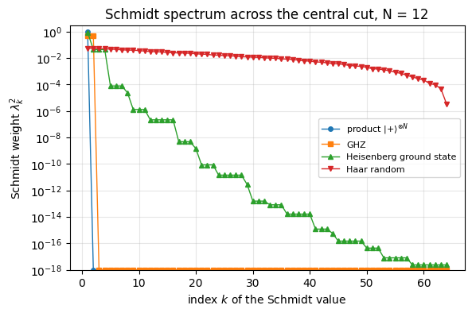
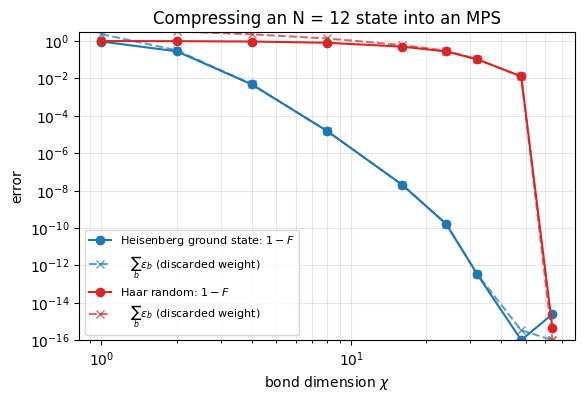
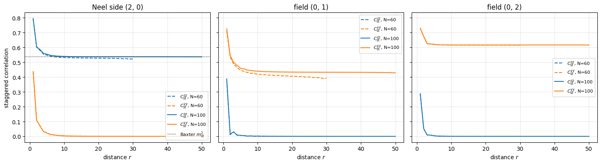
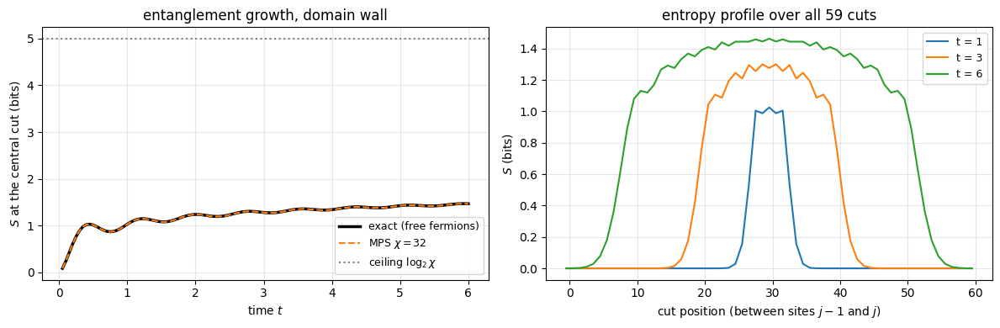
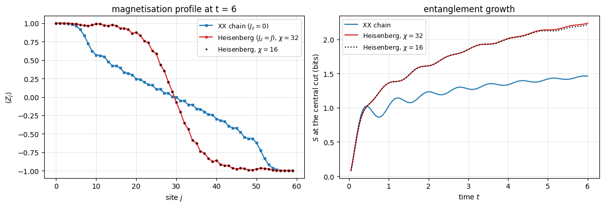
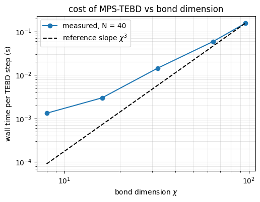

Every method of this course so far stored the full state vector: \(2^N\) complex amplitudes for \(N\) spins. The matrix-free engine made each operation as cheap as it can possibly be, \(O(2^N)\) per gate, but it cannot remove the \(2^N\) itself. At \(N=30\) the state alone needs 17 GB, at \(N=50\) about 18 million GB. Yet experiments with cold atoms, trapped ions and Rydberg arrays study the dynamics of chains far longer than that, and theorists simulate such chains on laptops. How?
The answer is that the states which actually occur in one-dimensional physics are not generic vectors of the \(2^N\)-dimensional Hilbert space. They carry little entanglement, and a state with little entanglement can be compressed. The compressed format is the matrix product state (MPS): instead of one tensor with \(N\) indices we store \(N\) small tensors with three indices each, \(O(N\chi^2)\) numbers in total, where the bond dimension\(\chi\) is a knob that controls how much entanglement the format can hold. The algorithm you learned in notebook 12 (Chapter 5) - a sequence of two-site gates \(e^{-i h\,\delta t}\) - can be run directly on the compressed format: each gate touches only two of the small tensors, and one singular value decomposition (SVD) per gate keeps the format compressed. This is the original time-evolving block decimation (TEBD) algorithm of G. Vidal (2003-2004), and together with its sibling DMRG it is the workhorse of one-dimensional quantum many-body physics.
Road map.
Why the state vector hits a wall near \(N\approx 30\), and why entanglement decides whether compression is possible (Sec. 2).
Construction of an MPS from a state vector by repeated SVDs; tensor-leg diagrams; bond dimension; canonical forms; truncation and its error (Sec. 3).
A data structure with static shapes for JAX: fixed maximal bond dimension, zero padding (Sec. 4); observables and entanglement entropy read directly from the MPS (Sec. 5).
Ground states by DMRG (Sec. 6), built one element at a time: the local eigenvalue problem, the Hamiltonian as a matrix product operator, environments, the effective Hamiltonian applied without building it, Lanczos as the local solver, the SVD split, the sweep; validation against exact results at \(N=60\), and the XXZ chain in a transverse field at \(N=100\).
Time evolution by TEBD: the two-site update as three einsums and one SVD (Sec. 7); full time evolution with vmap over bonds and lax.scan over time (Sec. 8); validation against the state-vector TEBD for \(N=12\) and the dependence on \(\chi\) (Sec. 9).
Runs that no state vector can do: quenches of \(N=60\) and \(N=40\) spins, light cone, entanglement growth, truncation-error monitoring, and how to judge convergence when there is no reference (Sec. 10).
Cost and performance (Sec. 11) and the limits of the method (Sec. 12).
What you will learn
Physics
Entanglement entropy across a cut measures how many numbers are needed to describe a state; ground states and short-time dynamics of 1D chains are weakly entangled (area law), random states are not (volume law).
Long-range order of a finite chain is read from correlation functions; DMRG at \(N=100\) establishes Néel order at \(\Delta=2\) (checked against the exact staggered magnetisation) and the field-induced order along \(y\) of the XXZ chain in a transverse field.
A domain wall in the XX chain melts ballistically inside a light cone and generates very little entanglement; a Néel state generates entanglement linearly in time - an “entanglement barrier” for classical simulation.
Numerical methods
Matrix product states, bond dimension, left/right/mixed canonical forms and Vidal’s \(\Gamma\)-\(\Lambda\) form.
DMRG: why the canonical form turns the local problem into an eigenvalue problem; matrix product operators; environments; the effective Hamiltonian applied matrix-free; Lanczos as the local solver; the SVD split that moves the orthogonality centre; sweeps and their convergence.
Optimal truncation by SVD; truncation error = discarded Schmidt weight.
TEBD on an MPS: cost \(O(N\chi^3)\) per time step, memory \(O(N\chi^2)\); two error sources (Trotter and truncation) and how to monitor each.
Implementation practice
Static shapes in JAX: why a fixed, zero-padded bond dimension lets us jit once, vmap over all bonds of a layer and lax.scan over time.
Avoiding division by small numbers (the right-canonical trick of Hastings).
Building a chain of trust: state vector (\(N=12\)) \(\leftrightarrow\) free-fermion solution \(\leftrightarrow\) MPS (\(N=60\)).
helpful for the physics of Sec. 10 (light cones, domain wall, free fermions): notebook 15 (Chapter 5)
Configuration
Every notebook of this course starts with the same cell. Choose where to run (DEVICE) and the floating-point precision (PRECISION): "double" = float64/complex128 (default, recommended for physics), "single" = float32/complex64 (half the memory, faster on consumer GPUs, but watch the round-off). All code below derives its dtypes from RDTYPE/CDTYPE and its check tolerances from TOL, so nothing else needs to change.
Code
# ==============================================================================# CONFIGURATION -- adapt to your hardware, then run the notebook top to bottom# ==============================================================================DEVICE ="auto"# "auto": use a GPU if JAX finds one, else CPU | "cpu" | "gpu"PRECISION ="double"# "double": float64/complex128 | "single": float32/complex64import osif DEVICE =="cpu": os.environ["JAX_PLATFORMS"] ="cpu"# must be set BEFORE jax is importedimport stringfrom functools import partialimport mathimport numpy as npimport jaximport jax.numpy as jnpfrom jax import lax# Precision is configurable: "double" = float64/complex128 (default; needed for long time evolutions and# tight validation), "single" = float32/complex64 (half the memory, faster on consumer GPUs).# In a notebook PRECISION is defined in the Configuration cell; for this module use the env var QE_PRECISION.PRECISION =globals().get("PRECISION", os.environ.get("QE_PRECISION", "double"))jax.config.update("jax_enable_x64", PRECISION =="double")RDTYPE = jnp.float64 if PRECISION =="double"else jnp.float32 # real dtypeCDTYPE = jnp.complex128 if PRECISION =="double"else jnp.complex64 # complex dtype of all states/operatorsTOL =1e-10if PRECISION =="double"else1e-4# tolerance for sanity checks (asserts)_LETTERS = string.ascii_letters # the 52 einsum index labels a-z, A-Zimport timeimport matplotlib.pyplot as pltif DEVICE =="gpu"and jax.default_backend() =="cpu":print("WARNING: DEVICE='gpu' requested but JAX found no GPU -- running on CPU.")print(f"JAX {jax.__version__} | backend: {jax.default_backend()} | devices: {jax.devices()}")print(f"precision: {PRECISION} -> real {RDTYPE.__name__}, complex {CDTYPE.__name__}, check tolerance TOL={TOL:g}")
JAX 0.11.0 | backend: cpu | devices: [CpuDevice(id=0)]
precision: double -> real float64, complex complex128, check tolerance TOL=1e-10
Engine recap — the simulator primitives used in this notebook (click to expand)
# ==============================================================================# ENGINE RECAP: the functions of quantum_engine.py (SmoQ.jax) used in this notebook.# Each one is derived, with its mathematics and an independent check, in notebook 08b# (Chapter 3), 'Building the quantum simulator engine'.# States are rank-N tensors of shape (2,)*N; every operator acts through ONE einsum.# ==============================================================================# ----------------------------------------------------------------------------# 1. Elementary matrices: Paulis, Clifford generators, rotations# ----------------------------------------------------------------------------I2 = jnp.eye(2, dtype=CDTYPE)X = jnp.array([[0, 1], [1, 0]], dtype=CDTYPE)Y = jnp.array([[0, -1j], [1j, 0]], dtype=CDTYPE)Z = jnp.array([[1, 0], [0, -1]], dtype=CDTYPE)XX = jnp.kron(X, X)YY = jnp.kron(Y, Y)ZZ = jnp.kron(Z, Z)# ----------------------------------------------------------------------------# 2. THE core primitive: a k-qubit operator acting on a tensor through ONE einsum# ----------------------------------------------------------------------------def apply_gate(psi, U, qubits):"""Apply a k-qubit operator U to the axes `qubits` of the tensor `psi`. MATH ---- One qubit (k=1), target q: psi'[s_0,..,a,..,s_{N-1}] = sum_b U[a,b] psi[s_0,..,b,..,s_{N-1}] Two qubits (k=2), targets (q1,q2); the 4x4 matrix is reshaped to U[a1,a2,b1,b2]: psi'[.., a1, .., a2, ..] = sum_{b1,b2} U[a1,a2,b1,b2] psi[.., b1, .., b2, ..] This IS the action of (1 x .. x U x .. x 1) -- written without ever building it. EINSUM TRANSLATION (generated automatically below) ------------------ N=3, q=1 : "db,abc->adc" d = new (output) index of qubit 1 N=4, q=(1,3) : "efbd,abcd->aecf" e,f = new indices of qubits 1 and 3 Recipe: label the axes of psi with letters a,b,c,...; give every target qubit a NEW letter (the next unused ones); U carries (new letters)+(old letters of the targets); the output is psi's labels with the target letters replaced by the new ones. IMPLEMENTATION NOTES -------------------- * reshape of U: (2^k,2^k) -> (2,)*2k. Row index = (a1..ak), column = (b1..bk), and the FIRST qubit in `qubits` is the most significant bit of the small matrix, i.e. it corresponds to the LEFT factor of kron(A,B). * `qubits` may be any distinct axes in any order: non-neighbouring gates cost the same. * U need not be unitary: projectors, Kraus operators and Hamiltonian terms reuse this. * psi may be ANY tensor with those axes of size 2: a state (rank N), a density tensor (rank 2N: ket axes 0..N-1, bra axes N..2N-1), ... COST O(2^k * 2^N) operations, O(2^N) memory (dense matrix: O(4^N) both). JAX `qubits` must be static Python ints (they define the einsum string); psi and U are traced, so the function can sit inside jit / grad / vmap / scan. """ qubits =tuple(int(q) for q in qubits) k, n =len(qubits), psi.ndim U = jnp.asarray(U, dtype=psi.dtype).reshape((2,) * (2* k)) # matrix -> rank-2k tensor inp =list(_LETTERS[:n]) # labels of psi's axes new = _LETTERS[n:n + k] # fresh labels for the outputs out = inp.copy()for a, q inzip(new, qubits): out[q] = a # target axes get the new labels sub =f"{''.join(new)}{''.join(inp[q] for q in qubits)},{''.join(inp)}->{''.join(out)}"return jnp.einsum(sub, U, psi)# ----------------------------------------------------------------------------# 3. State preparation# ----------------------------------------------------------------------------_KETS = {"0": [1, 0], "1": [0, 1], "+": [1, 1], "-": [1, -1], "r": [1, 1j], "l": [1, -1j]}def product_state(spec):"""Product state from a string, one character per qubit: product_state('01+-') = |0>|1>|+>|->. ('r','l' = the +1/-1 eigenstates of Y.) MATH psi[s_0,...,s_{N-1}] = v0[s_0] v1[s_1] ... v_{N-1}[s_{N-1}] EINSUM an outer product = einsum with NO summed index: "a,b,c->abc". A product state needs only 2N numbers; entanglement is what makes all 2^N necessary. """ vecs = [jnp.array(_KETS[c], dtype=CDTYPE) / jnp.linalg.norm(jnp.array(_KETS[c], dtype=CDTYPE))for c in spec] n =len(vecs) sub =",".join(_LETTERS[i] for i inrange(n)) +"->"+ _LETTERS[:n]return jnp.einsum(sub, *vecs)def ghz_state(N):"""GHZ state (|0...0> + |1...1>)/sqrt(2): two non-zero entries of the rank-N tensor.""" psi = jnp.zeros((2,) * N, dtype=CDTYPE)return psi.at[(0,) * N].set(1/ jnp.sqrt(2.0)).at[(1,) * N].set(1/ jnp.sqrt(2.0))def haar_state(key, N):"""Haar-random pure state: a complex Gaussian vector, normalised. (The Gaussian measure is unitarily invariant, so the direction is uniformly distributed.) `key` is an explicit JAX PRNG key -- same key, same state: reproducible science.""" k1, k2 = jax.random.split(key) v = jax.random.normal(k1, (2,) * N) +1j* jax.random.normal(k2, (2,) * N)return (v / jnp.linalg.norm(v)).astype(CDTYPE)# ----------------------------------------------------------------------------# 4. Reduced density matrices & observables (matrix-free)# ----------------------------------------------------------------------------def rdm(psi, keep):"""Reduced density matrix of the qubits `keep` from a PURE state: rho_A = Tr_B |psi><psi|. MATH rho_A[a, a'] = sum_{b} psi[a, b] psi^*[a', b] (a: indices of A, b: of the rest B) EINSUM TRANSLATION N=3, keep=(0,): "abc,Abc->aA" with operands psi, psi^* * letters of B (b,c) appear in BOTH operands and not in the output -> summed = traced out * the kept axis gets a different letter in the second operand -> stays open (a and A) The full |psi><psi| (4^N numbers) is never formed; cost O(2^N 2^|A|). Returns a (2^|A|, 2^|A|) matrix with row/column order following `keep`. """ keep =tuple(int(q) for q in keep) n, k = psi.ndim, len(keep) a =list(_LETTERS[:n]) b = a.copy()for new, q inzip(_LETTERS[n:n + k], keep): b[q] = new sub =f"{''.join(a)},{''.join(b)}->{''.join(a[q] for q in keep)}{''.join(b[q] for q in keep)}"return jnp.einsum(sub, psi, jnp.conj(psi)).reshape(2** k, 2** k)def expect_local(psi, O, qubits):"""<psi| O_qubits |psi> for a k-local operator O (2^k x 2^k matrix). MATH <O> = Tr(rho_A O) with A = `qubits`: a local observable only sees the local state. Cost O(2^N) for the RDM + O(4^k) for the small trace. One RDM serves ALL observables on A (e.g. <X>,<Y>,<Z> from a single 2x2 matrix). """return jnp.real(jnp.trace(rdm(psi, qubits) @ jnp.asarray(O, dtype=CDTYPE)))# ----------------------------------------------------------------------------# 5. State characteristics: entropies, fidelity, negativity# ----------------------------------------------------------------------------def schmidt_values(psi, subsystem):"""Schmidt coefficients of the bipartition A|B with A = `subsystem`. MATH Group the tensor axes into a matrix M[(a),(b)] = psi[a,b] of shape (2^|A|, 2^|B|). Its SVD M = U diag(lambda) V^dag IS the Schmidt decomposition |psi> = sum_k lambda_k |u_k>_A |v_k>_B , rho_A has eigenvalues lambda_k^2. IMPLEMENTATION transpose (A axes first) -> reshape -> svd. No density matrix needed. """ A =tuple(int(q) for q in subsystem) B =tuple(q for q inrange(psi.ndim) if q notin A) M = jnp.transpose(psi, A + B).reshape(2**len(A), -1)return jnp.linalg.svd(M, compute_uv=False)def entanglement_entropy(psi, subsystem, base=2.0):"""Entanglement entropy S_A = -sum_k p_k log p_k with p_k = lambda_k^2 (squared Schmidt values). Product state: 0. Bell/GHZ across any cut: 1 bit. Random state: ~ |A| - 1/(2 ln2) 2^{|A|-|B|} (Page).""" p = jnp.clip(schmidt_values(psi, subsystem) **2, 1e-16, None)return-jnp.sum(p * jnp.log(p)) / jnp.log(base)def fidelity_pure(psi, phi):"""F = |<psi|phi>|^2 between two pure states."""return jnp.abs(jnp.vdot(psi, phi)) **2# ----------------------------------------------------------------------------# 8. Hamiltonians as lists of local terms; H|psi> matrix-free# ----------------------------------------------------------------------------def heisenberg_terms(N, Jxx=1.0, Jyy=1.0, Jzz=1.0, hx=0.0, hy=0.0, hz=0.0, periodic=False, bonds=None):"""Spin-1/2 Hamiltonian in Pauli convention H = sum_<ij> (Jxx X_i X_j + Jyy Y_i Y_j + Jzz Z_i Z_j) + sum_i (hx X_i + hy Y_i + hz Z_i) returned as a LIST of local terms [(qubits, small_matrix), ...] -- this list *is* our Hamiltonian. Heisenberg: Jxx=Jyy=Jzz XXZ: Jxx=Jyy!=Jzz XY: Jzz=0 TFIM: only Jzz and hx. `bonds` overrides the default open chain (any graph: ladders, 2D lattices, all-to-all, ...)."""if bonds isNone: bonds = [(i, i +1) for i inrange(N -1)] + ([(N -1, 0)] if periodic and N >2else []) terms = [((i, j), Jxx * XX + Jyy * YY + Jzz * ZZ) for (i, j) in bonds]if hx !=0or hy !=0or hz !=0: terms += [((i,), hx * X + hy * Y + hz * Z) for i inrange(N)]return termsdef apply_hamiltonian(terms, psi):"""H|psi> = sum_k h_k|psi>, every term applied with `apply_gate` (h_k is Hermitian, not unitary -- the einsum does not care). Cost O(#terms * 2^N). This matrix-vector product is ALL that Lanczos, Chebyshev and Krylov methods need, which is why they scale to N ~ 25-30.""" out = jnp.zeros_like(psi)for qubits, h in terms: out = out + apply_gate(psi, h, qubits)return outdef energy(terms, psi):"""<psi|H|psi> = Re <psi | (H psi)>."""return jnp.real(jnp.vdot(psi, apply_hamiltonian(terms, psi)))def dense_hamiltonian(terms, N):"""Dense 2^N x 2^N matrix for VALIDATION on small N -- built from the matrix-free action: column j of H is H|e_j>. `jax.vmap` applies H to all basis vectors at once.""" eye = jnp.eye(2** N, dtype=CDTYPE).reshape((2** N,) + (2,) * N) cols = jax.vmap(lambda e: apply_hamiltonian(terms, e).reshape(-1))(eye)return cols.T# ----------------------------------------------------------------------------# 9. Time evolution: TEBD / Trotter-Suzuki, Chebyshev, Krylov, exact# ----------------------------------------------------------------------------def _expm_herm(h, tau):"""exp(-i tau h) for a SMALL Hermitian matrix: h = V w V^dag => V exp(-i tau w) V^dag.""" w, v = jnp.linalg.eigh(jnp.asarray(h, dtype=CDTYPE))return (v * jnp.exp(-1j* tau * w)) @ v.conj().Tdef tebd_gates(terms, dt, order=2):"""Gate sequence of ONE Trotter-Suzuki (TEBD) step for H = sum_k h_k. MATH exp(-i H dt) cannot be split exactly because [h_k, h_l] != 0, but (BCH formula): order 1: prod_k e^{-i h_k dt} local error O(dt^2), global O(dt) order 2: prod_k e^{-i h_k dt/2} * prod_k(reversed) e^{-i h_k dt/2} local O(dt^3), global O(dt^2) order 4: S2(s dt)^2 S2((1-4s) dt) S2(s dt)^2, s = 1/(4 - 4^{1/3}) (Suzuki) global O(dt^4) Each factor is a 2x2 or 4x4 unitary -> applied by einsum; this is TEBD on a full state vector. Every order is exactly unitary: the norm is conserved to machine precision; the ERROR is in the phase /direction of the state, and it is controlled by dt. """if order ==1:return [(q, _expm_herm(h, dt)) for q, h in terms]if order ==2: half = [(q, _expm_herm(h, dt /2)) for q, h in terms]return half + half[::-1]if order ==4: s =1.0/ (4.0-4.0** (1.0/3.0)) seq = []for w in (s, s, 1-4* s, s, s): seq += tebd_gates(terms, w * dt, order=2)return seqraiseValueError("order must be 1, 2 or 4")def apply_gates(psi, gates):"""Apply a list [(qubits, U), ...] in order -- a quantum circuit is a Python loop over einsums. Under `jax.jit` the loop is unrolled at trace time and XLA fuses it into one program."""for qubits, U in gates: psi = apply_gate(psi, U, qubits)return psidef tebd_evolve(psi, terms, dt, n_steps, order=2, observe=None):"""Evolve for n_steps*dt with TEBD and record `observe(psi)` after every step. JAX `lax.scan(step, carry, xs, length)` compiles the step ONCE and loops inside XLA (a Python for-loop under jit would unroll n_steps copies of the graph). Returns (final_state, stacked_observables). """ gates = tebd_gates(terms, dt, order)def step(psi, _): psi = apply_gates(psi, gates)return psi, (observe(psi) if observe isnotNoneelse0.0)return lax.scan(step, psi, None, length=n_steps)def lanczos(matvec, v0, m=60, reorth=True):"""m-step Lanczos iteration: orthonormal basis V of the Krylov space span{v, Hv, H^2 v, ...} in which H is TRIDIAGONAL: T = V^dag H V = tridiag(beta, alpha, beta). Recurrence w = H v_j - alpha_j v_j - beta_{j-1} v_{j-1}, alpha_j = <v_j|H|v_j>, beta_j = ||w||. `reorth=True` re-orthogonalises against all previous vectors (cures the loss of orthogonality of floating-point Lanczos at the price of O(m^2) inner products). Only `matvec` (H|psi>) is needed -> matrix-free. Returns (alphas, betas, V[m, 2,..,2]). """ v = v0 / jnp.linalg.norm(v0) V, alphas, betas = [v], [], [] w = matvec(v)for j inrange(m): a = jnp.real(jnp.vdot(V[j], w)) alphas.append(a) w = w - a * V[j] - (betas[-1] * V[j -1] if j >0else0.0)if reorth:for u in V: w = w - jnp.vdot(u, w) * u b = jnp.linalg.norm(w)if j == m -1orfloat(b) <1e-12:break betas.append(b) V.append(w / b) w = matvec(V[-1])return np.array(alphas, dtype=float), np.array(betas, dtype=float), jnp.stack(V)def lanczos_ground_state(terms, N, m=80, key=None, restarts=3):"""Ground state (E_0, |psi_0>) from restarted Lanczos: diagonalise the small T, map its lowest eigenvector back with V, use it as the next start vector. Extremal eigenvalues converge first.""" key = jax.random.PRNGKey(0) if key isNoneelse key v = haar_state(key, N) mv = jax.jit(lambda p: apply_hamiltonian(terms, p)) E =Nonefor _ inrange(restarts): a, b, V = lanczos(mv, v, m) w, S_ = np.linalg.eigh(np.diag(a) + np.diag(b, 1) + np.diag(b, -1)) v = jnp.tensordot(jnp.asarray(S_[:, 0], dtype=CDTYPE), V, axes=1) v = v / jnp.linalg.norm(v) E = w[0]returnfloat(E), v
2. The exponential wall, and what entanglement has to do with it
2.1 The wall
A state of \(N\) spins-1/2 is a tensor \(\psi[s_0,\dots,s_{N-1}]\) with \(2^N\) complex entries; in double precision each entry takes 16 bytes. The cell below prints the memory for a few \(N\) and, for comparison, the memory of the format we are about to construct (an MPS with bond dimension \(\chi=64\): \(N\) tensors of shape \(\chi\times2\times\chi\)).
Code
# ==============================================================================# The exponential wall in numbers: state vector vs matrix product state# ==============================================================================def human_bytes(b):"""Format a number of bytes with a decimal prefix (1 kB = 1000 B)."""for unit in ("B", "kB", "MB", "GB", "TB", "PB", "EB", "ZB"):if b <1000:returnf"{b:7.1f}{unit}" b /=1000returnf"{b:7.1f} YB"CHI_EXAMPLE =64print(f"{'N':>4} | {'state vector 16*2^N':>20} | {'MPS 16*N*2*chi^2, chi=64':>26}")print("-"*58)for N_ in (10, 20, 30, 40, 50, 60):print(f"{N_:>4} | {human_bytes(16*2.0** N_):>20} | {human_bytes(16* N_ *2* CHI_EXAMPLE **2):>26}")
The left column grows by a factor \(2^{10}=1024\) for every ten spins: 17 MB at \(N=20\), 17 GB at \(N=30\) (the practical limit of a workstation), 18 EB at \(N=60\) - more than all the storage of a large data centre. The right column grows linearly with \(N\): 7.9 MB for 60 spins. The price is hidden in \(\chi\): the MPS is exact only if \(\chi\) is large enough, and “large enough” is decided by entanglement.
2.2 Compressibility = low Schmidt rank
Recall the Schmidt decomposition from notebook 06 (Chapter 3). Cut the chain into a left part \(A\) (spins \(0..\ell-1\)) and a right part \(B\) (the rest), and reshape the state tensor into a matrix \(M_{(a),(b)}\) of shape \(2^{\ell}\times 2^{N-\ell}\) whose row index \(a\) collects the spins of \(A\) and whose column index \(b\) the spins of \(B\). The singular value decomposition (SVD) of any matrix,
\[ M = U\,S\,V^\dagger,\qquad U^\dagger U = 1,\quad V^\dagger V = 1,\quad S=\mathrm{diag}(\lambda_1\ge\lambda_2\ge\dots\ge 0), \]
where the columns of \(U\) (\(V^*\)) are orthonormal states \(|u_k\rangle\) of \(A\) (\(|v_k\rangle\) of \(B\)). The number \(r\) of non-zero Schmidt values\(\lambda_k\) is the Schmidt rank; the entanglement entropy is \(S_A=-\sum_k\lambda_k^2\log_2\lambda_k^2\) (in bits).
Here is the observation on which everything rests. If only \(r\) Schmidt values are non-zero, then the \(2^N\) amplitudes are fully determined by \(r\) vectors on \(A\) and \(r\) vectors on \(B\). If the \(\lambda_k\) are not exactly zero but decay quickly, we can keep the largest \(\chi\) of them and commit an error equal to the weight \(\sum_{k>\chi}\lambda_k^2\) of what we threw away (we prove this in Sec. 3.5). Since an entropy of \(S\) bits needs at least \(2^{S}\) Schmidt values,
\[ \chi \gtrsim 2^{S_A}. \]
Low entanglement \(\Leftrightarrow\) few relevant Schmidt values \(\Leftrightarrow\) compressible state.
Let us look at the Schmidt spectrum across the central cut of four 12-spin states: a product state, the GHZ state, the ground state of the Heisenberg antiferromagnet \(H=\sum_j (X_jX_{j+1}+Y_jY_{j+1}+Z_jZ_{j+1})\) (computed with the Lanczos routine of notebook 11 (Chapter 5)), and a Haar-random state.
product $|{+}\rangle^{\otimes N}$ Schmidt rank = 1 S = 0.0000 bits
GHZ Schmidt rank = 2 S = 1.0000 bits
Heisenberg ground state Schmidt rank = 64 S = 0.7745 bits
Haar random Schmidt rank = 64 S = 5.2657 bits

Reading the figure. The matrix \(M\) is \(64\times64\), so there are at most 64 Schmidt values.
The product state has exactly one (rank 1, \(S=0\)): the other weights sit at the clipping floor \(10^{-18}\).
GHZ has exactly two equal weights \(1/2\) (rank 2, \(S=1\) bit), no matter how long the chain is.
The Haar-random state uses all 64 with comparable weights; its entropy is close to the maximum \(\log_2 64=6\) bits. This is a volume law (\(S\propto\) number of spins in \(A\)): nothing can be discarded.
The ground state is the interesting case. Formally its rank is also 64, but the weights fall off a cliff: below \(10^{-5}\) after the first 8 values, below \(10^{-9}\) after 20 (the plateaus are multiplets of the SU(2) spin-rotation symmetry). Keeping \(\chi=16\) values would already describe it far more accurately than any experiment could tell.
Physics insight. Ground states of gapped local Hamiltonians in one dimension obey an area law (Hastings 2007): \(S_A\) is bounded by a constant independent of the size of \(A\), because only the spins near the cut are correlated across it. At a critical point (the Heisenberg chain is critical) \(S_A\) grows only logarithmically with the block size, with a prefactor set by the central charge \(c\) of the critical chain (notebook 06, Section 9). Both are tiny compared with the volume law of a random state. The physically relevant states live in a small, weakly entangled corner of Hilbert space - and MPS are a parametrisation of that corner.
3. Matrix product states from repeated SVDs
3.1 Tensor-leg diagrams
We use the diagram notation of notebook 02 (Chapter 1): a tensor is a box, each index is a leg, a leg shared by two boxes is summed over (contracted). The state tensor of five spins has five open legs:
On the right is where we are heading: a chain of rank-3 tensors\(A^{[j]}\) with one physical leg \(s_j\) (dimension 2, pointing up) and two virtual or bond legs \(a_j, a_{j+1}\) (horizontal) that connect neighbours. In formulas
In the last form, for fixed \(s_j\) each \(A^{[j]s_j}\) is a matrix in its bond indices, and the amplitude is a product of matrices (a row vector at the left end, a column vector at the right end) - hence the name. The dimension of bond leg \(a_j\) is the bond dimension\(\chi_j\).
3.2 The construction
Every state can be brought into the form (1) exactly, by peeling off one spin at a time with an SVD:
Step 1. Reshape \(\psi\) into a matrix with row index \(s_0\) and column index \((s_1\dots s_{N-1})\), shape \(2\times2^{N-1}\), and decompose: \(\psi_{s_0,(s_1\dots)}=\sum_{a_1}U_{s_0,a_1}S_{a_1}V^\dagger_{a_1,(s_1\dots)}\). Define \(A^{[0]}_{s_0,a_1}=U_{s_0,a_1}\) and the remainder \(R_{a_1,(s_1\dots)}=S_{a_1}V^\dagger_{a_1,(s_1\dots)}\). The bond \(a_1\) has dimension \(\chi_1\le 2\).
Step 2. Reshape the remainder: group \((a_1,s_1)\) into the row index, \((s_2\dots)\) into the column index, shape \(2\chi_1\times 2^{N-2}\). SVD again: \(R_{(a_1 s_1),(s_2\dots)}=\sum_{a_2}U_{(a_1s_1),a_2}S_{a_2}V^\dagger_{a_2,(s_2\dots)}\). Reshape \(U\) into the rank-3 tensor \(A^{[1]}_{a_1,s_1,a_2}\); the new remainder is \(S V^\dagger\).
Step \(j\). Repeat until one spin is left; the last remainder is\(A^{[N-1]}\).
The singular values found at step \(j\) are the singular values of the matrix “spins \(0..j\) versus the rest” (the part already split off, \(A^{[0]}\cdots A^{[j-1]}\), is an isometry, a matrix with orthonormal columns, and an isometry does not change singular values) - they are the Schmidt values of the cut between sites \(j\) and \(j+1\). So \(\chi_{j+1}\) = Schmidt rank of that cut \(\le \min(2^{j+1},2^{N-j-1})\).
For a generic state the bond dimensions are therefore \(2,4,8,\dots,2^{N/2},\dots,8,4,2\) and the MPS holds as many numbers as the state vector: no free lunch, the representation is exact but not compressed. For a weakly entangled state most singular values are (almost) zero and can be dropped: that is the compression.
3.3 From formula to code
The construction is a loop of reshape\(\to\)svd\(\to\)reshape. The shapes change at every step (\(2\times2^{N-1}\), then \(2\chi_1\times2^{N-2}\), …), so this is a job for plain NumPy: there is nothing for jit to gain in set-up code that runs once with a different shape in every iteration. We drop singular values that are zero to machine precision, so the bond dimensions come out equal to the Schmidt ranks.
Code
# ==============================================================================# STEP 1: exact MPS from a state tensor by a left-to-right sweep of SVDs# ==============================================================================def state_to_mps_left(psi, cut=1e-13):"""Exact left-canonical MPS of a state tensor psi[s_0..s_{N-1}]. MATH psi = A[0]^{s_0} A[1]^{s_1} ... A[N-1]^{s_{N-1}}, A[j] has shape (chi_j, 2, chi_{j+1}), chi_0 = chi_N = 1. Sweep j = 0..N-2: R (chi_j * 2, rest) = U S V^dag ; A[j] = U ; R <- S V^dag. IMPLEMENTATION NumPy, because every iteration has a different shape. Singular values below `cut` are dropped, so chi_{j+1} equals the Schmidt rank of the cut between sites j and j+1. RETURNS (list of A tensors, list of the Schmidt-value arrays of the N-1 cuts) COST dominated by the first SVDs: O(2^N * chi^2) -- this is a conversion tool for SMALL N only. """ psi = np.asarray(psi) N = psi.ndim tensors, schmidt = [], [] R, chi = psi.reshape(1, -1), 1# remainder, with a dummy left bond of dimension 1for j inrange(N -1): M = R.reshape(chi *2, -1) # rows: (a_j, s_j) columns: (s_{j+1}, ..., s_{N-1}) U, S, Vh = np.linalg.svd(M, full_matrices=False) keep =max(1, int(np.sum(S > cut))) # numerical Schmidt rank tensors.append(U[:, :keep].reshape(chi, 2, keep)) # A[j][a_j, s_j, a_{j+1}] schmidt.append(S[:keep]) R, chi = S[:keep, None] * Vh[:keep], keep # remainder S V^dag tensors.append(R.reshape(chi, 2, 1)) # the last remainder is the last tensorreturn tensors, schmidtdef mps_list_to_state(tensors):"""Contract a list of rank-3 tensors back into the state tensor (validation only: O(2^N) memory). MATH Eq. (1): the bond legs are summed. `tensordot(.., axes=([-1],[0]))` ties the last leg of what we have so far to the first leg of the next tensor.""" psi = tensors[0]for A in tensors[1:]: psi = np.tensordot(psi, A, axes=([-1], [0]))return psi[0, ..., 0] # strip the two dummy boundary legs# ------------------------------------------------------------------------------# CHECKPOINT: the decomposition is exact, and bond dimension = Schmidt rank# ------------------------------------------------------------------------------for name, psi_ in zoo.items(): tensors_, schmidt_ = state_to_mps_left(psi_) err = np.max(np.abs(mps_list_to_state(tensors_) - np.asarray(psi_))) n_par =sum(A.size for A in tensors_)print(f"{name:40s} bond dims {[A.shape[2] for A in tensors_[:-1]]}")print(f"{'':40s} parameters {n_par:6d} (state vector: {2** N_SMALL}) reconstruction error {err:.1e}")assert err < TOL# the singular values of the sweep ARE the Schmidt values of each cut (compare with the engine, cut after site 3)tensors_, schmidt_ = state_to_mps_left(psi_gs)err_schmidt = np.max(np.abs(schmidt_[3] - np.asarray(schmidt_values(psi_gs, range(4)))[:len(schmidt_[3])]))print(f"\nmax |sweep singular values - engine Schmidt values| at the cut after site 3: {err_schmidt:.1e}")assert err_schmidt < TOL
product $|{+}\rangle^{\otimes N}$ bond dims [1, 1, 1, 1, 1, 1, 1, 1, 1, 1, 1]
parameters 24 (state vector: 4096) reconstruction error 6.5e-16
GHZ bond dims [2, 2, 2, 2, 2, 2, 2, 2, 2, 2, 2]
parameters 88 (state vector: 4096) reconstruction error 0.0e+00
Heisenberg ground state bond dims [2, 4, 8, 16, 32, 64, 32, 16, 8, 4, 2]
parameters 10920 (state vector: 4096) reconstruction error 9.7e-16
Haar random bond dims [2, 4, 8, 16, 32, 64, 32, 16, 8, 4, 2]
parameters 10920 (state vector: 4096) reconstruction error 2.6e-16
max |sweep singular values - engine Schmidt values| at the cut after site 3: 1.7e-16
Interpretation. All four reconstructions are exact to machine precision. The bond dimensions tell the whole story: the product state has \(\chi=1\) everywhere (\(2N=24\) numbers), GHZ has \(\chi=2\) (88 numbers), while the random state - and also the exact ground state - need the full pyramid \(2,4,\dots,64,\dots,4,2\) and more parameters (10920) than the state vector (4096). The ground state’s 64 Schmidt values are tiny but all above our threshold \(10^{-13}\); the compression comes only when we accept a small error (Sec. 3.5).
3.4 Gauge freedom and canonical forms
The MPS of a state is not unique: inserting \(X X^{-1}=1\) on any bond, \(A^{[j]}\to A^{[j]}X\), \(A^{[j+1]}\to X^{-1}A^{[j+1]}\), changes the tensors but not the state. This gauge freedom is used to impose convenient normalisation conditions.
Left-canonical. Our tensors came from the matrix \(U\) of an SVD, which has orthonormal columns, \(U^\dagger U=1\). With \(U_{(a s),a'}=A_{a,s,a'}\) this says
As a diagram (the lower row is the complex conjugate; the arc on the left ties the two left legs):
+--[A ]-- b +-- b
| | s = |
+--[A*]-- b' +-- b'
Consequence: the states \(|L_b\rangle\) of the first \(j+1\) spins defined by contracting \(A^{[0]}\cdots A^{[j]}\) with the last bond index fixed to \(b\) are orthonormal. (Induction: if the \(|L_a\rangle\) of the first \(j\) spins are orthonormal then \(\langle L_{b'}|L_b\rangle=\sum_{a,s}A^*_{a,s,b'}A_{a,s,b}=\delta_{b'b}\).)
Right-canonical. Sweeping from the right end instead, one keeps the rows of \(V^\dagger\) and obtains tensors \(B\) with
and orthonormal states \(|R_a\rangle\) of the spins to the right of a bond.
Mixed-canonical and Vidal’s form. Use \(A\)’s to the left of some bond, \(B\)’s to the right of it, and let the diagonal matrix of singular values \(\Lambda=\mathrm{diag}(\lambda_1,\lambda_2,\dots)\) sit on the bond:
Because the \(|L_a\rangle\) and \(|R_a\rangle\) are orthonormal, this is the Schmidt decomposition across that bond, displayed explicitly. G. Vidal’s \(\Gamma\)-\(\Lambda\) form makes this true at every bond simultaneously by writing
Grouping each \(\Lambda\) with the \(\Gamma\) to its right gives left-canonical \(A\)’s, grouping it with the \(\Gamma\) to its left gives right-canonical \(B\)’s; from (4) one reads off the useful identity
i.e. a \(\Lambda\) can be pushed through a tensor, turning a \(B\) into an \(A\). In this notebook we store the right-canonical tensors \(B^{[j]}\) together with the Schmidt values \(\Lambda^{[j]}\) of every bond. By Eq. (5) this contains the same information as Vidal’s form, but (as we will see in Sec. 7) the TEBD update can then be written without ever dividing by a small Schmidt value.
Let us verify Eq. (2) on the tensors we have just computed.
Code
# ------------------------------------------------------------------------------# CHECKPOINT: the tensors from the left-to-right sweep are left-canonical, Eq. (2)# ------------------------------------------------------------------------------tensors_, _ = state_to_mps_left(zoo["Haar random"])worst =0.0for A in tensors_: gram = np.einsum("asb,asc->bc", A.conj(), A) # sum_{a,s} A*[a,s,b'] A[a,s,b] worst =max(worst, np.max(np.abs(gram - np.eye(A.shape[2]))))print(f"left-canonical condition, max deviation over all sites: {worst:.1e}")assert worst < TOL
left-canonical condition, max deviation over all sites: 2.2e-15
The einsum string "asb,asc->bc" is Eq. (2) letter by letter: the left bond a and the physical index s appear in both operands and not in the output (summed), the two right bonds b, c stay open. The result is the identity matrix on every site (on the last site it is the \(1\times1\) matrix \(\langle\psi|\psi\rangle=1\)).
3.5 Truncation: the error is the discarded Schmidt weight
Suppose the state is in mixed-canonical form around one bond, \(|\psi\rangle=\sum_{k=1}^{r}\lambda_k|L_k\rangle|R_k\rangle\), and we keep only the \(\chi<r\) largest terms, \(|\tilde\psi\rangle=\sum_{k\le\chi}\lambda_k|L_k\rangle|R_k\rangle\). By orthonormality of the Schmidt vectors
The Eckart-Young theorem of linear algebra (quoted) states that no matrix of rank \(\chi\) is closer to \(M\) in Frobenius norm than its truncated SVD: keeping the largest Schmidt values is the optimal compression. After renormalising, \(|\tilde\psi\rangle\to|\tilde\psi\rangle/\sqrt{1-\varepsilon}\), the fidelity with the original state is
The Eckart-Young theorem is Eckart and Young (1936); a modern account of the SVD as a numerical algorithm is Numerical Recipes, 3rd ed., Sec. 2.6.
Compressing all\(N-1\) bonds means truncating them one after the other, each time in the mixed-canonical form centred on the bond being cut - which is exactly what the sweep below does. For that procedure,
\[ \big\||\psi\rangle-|\tilde\psi\rangle\big\|^2\;\le\;2\sum_{b}\varepsilon_b \qquad\text{(one state, one sweep)} \]
(Verstraete and Cirac 2006, Lemma 1, quoted; there the \(\varepsilon_b\) are the Schmidt-spectrum tails of \(|\psi\rangle\) itself, and Schollwöck 2011, Eq. (58), quotes the bound for one truncation per bond). Read the scope carefully, because we will violate it in Sec. 9: here the \(\varepsilon_b\) are the discarded weights encountered while compressing one given state in one sweep. Nothing here bounds the error of a sequence of truncations separated by time evolution, where each truncation is measured on a state that previous truncations have already changed. That case is worked out in Sec. 9. (For normalised states \(1-F=1-|\langle\psi\vert\tilde\psi\rangle|^2\le\||\psi\rangle-|\tilde\psi\rangle\|^2\), so the bound may be tested on the infidelity, which is what the code below does.) The discarded weight is in any case an a-posteriori error estimate that costs nothing: the SVD hands it to us.
From formula to code. The production converter below differs from state_to_mps_left in three ways: (i) it sweeps from the right, so it produces right-canonical \(B\) tensors and the Schmidt values \(\Lambda^{[j]}\) of all cuts; (ii) it truncates every bond to at most \(\chi\) values, renormalises, and records the discarded weights; (iii) it writes the result into zero-padded arrays of fixed shapeB[N, chi, 2, chi] and lam[N+1, chi] - the data structure discussed in Sec. 4. Convention: lam[j] holds the Schmidt values of the cut to the left of site \(j\) (between sites \(j-1\) and \(j\)); the dummy boundary bonds are lam[0] = lam[N] = (1,0,0,...).
One subtlety appears only when something is truncated. The sweep stores the values of cut \(j\) and then truncates cut \(j-1\), which changes the left block of cut \(j\), so the stored values no longer belong to the stored state. A second helper, mps_recanonicalise, repairs this exactly: a left-to-right sweep of QR decompositions makes every tensor left-canonical, and a right-to-left sweep of SVDs, which keeps all \(\chi\) values and so discards nothing, produces right-canonical tensors together with the true Schmidt values of every cut, at a cost of \(O(N\chi^3)\). state_to_mps applies it whenever a discarded weight is non-zero; DMRG below needs the same pass.
Code
# ==============================================================================# STEP 2: truncated, right-canonical, zero-padded MPS (the format used by TEBD below)# ==============================================================================LAM_CUT =100*float(jnp.finfo(RDTYPE).eps) # Schmidt values below this are treated as padding (exact zeros)def state_to_mps(psi, chi, cut=1e-13):"""State tensor -> right-canonical MPS with bond dimension <= chi, stored in fixed-shape padded arrays. MATH psi ~ B[0]^{s_0} B[1]^{s_1} ... B[N-1]^{s_{N-1}}, sum_s B^s B^s^dag = 1 (right-canonical, Eq. 3) Sweep j = N-1..1: R (rest, 2*chi_{j+1}) = U S V^dag ; B[j] = V^dag (first chi rows) ; lam[j] = S[:chi]/||S[:chi]|| ; eps[j] = sum_{k>=chi} S_k^2 / sum_k S_k^2 ; R <- U S. RETURNS B complex array (N, chi, 2, chi) B[j][a, s, b]; unused entries are exactly zero if nothing is truncated lam real array (N+1, chi) Schmidt values of the cut left of site j; lam[0]=lam[N]=(1,0,..) eps real array (N+1,) discarded weight at every cut TRUNCATION lam[j] is recorded when cut j is truncated, but truncating cut j-1 afterwards changes the left block of cut j, so the recorded values are not the Schmidt values of the stored state. Whenever anything was discarded (some eps > 0), the result is therefore passed through `mps_recanonicalise`, and the returned lam are the exact Schmidt values of the returned (truncated, renormalised) state on every cut. eps keeps the weights discarded by the sweep. Without truncation the sweep is exact and is returned as it is. COST O(2^N chi^2): conversion tool for small N (validation, initial states from exact methods). """ psi = np.asarray(psi) N = psi.ndim B = np.zeros((N, chi, 2, chi), dtype=psi.dtype) lam = np.zeros((N +1, chi)) eps = np.zeros(N +1) lam[0, 0] = lam[N, 0] =1.0 R, r = psi.reshape(-1, 1), 1# remainder with a dummy right bond of dimension 1for j inrange(N -1, 0, -1): M = R.reshape(-1, 2* r) # rows: (s_0..s_{j-1}) columns: (s_j, b_{j+1}) U, S, Vh = np.linalg.svd(M, full_matrices=False) keep =max(1, min(chi, int(np.sum(S > cut)))) eps[j] = np.sum(S[keep:] **2) / np.sum(S **2) S = S[:keep] / np.linalg.norm(S[:keep]) # truncate + renormalise B[j, :keep, :, :r] = Vh[:keep].reshape(keep, 2, r) lam[j, :keep] = S R, r = U[:, :keep] * S[None, :], keep # remainder U S B[0, 0, :, :r] = R.reshape(2, r) B, lam = jnp.asarray(B, dtype=CDTYPE), jnp.asarray(lam, dtype=RDTYPE)if np.any(eps >0): # later truncations changed the cuts stored earlier B, lam = mps_recanonicalise(B)return B, lam, epsdef mps_recanonicalise(B):"""Exact right-canonical form and the TRUE Schmidt values of every cut, for a padded MPS whose site 0 carries the norm. MATH Left sweep j = 0..N-2: A[j]_{(a s), b} = Q R (QR); A[j] <- Q (left-canonical); A[j+1] <- R A[j+1]. After it, sites 0..N-2 are left-canonical and the whole norm sits on site N-1. Right sweep j = N-1..1: A[j]_{a, (s b)} = U S V^dag (SVD); B[j] <- V^dag; lam[j] <- S; A[j-1] <- A[j-1] U S. At step j everything left of the cut is left-canonical and everything right of it right-canonical, so S are exactly the Schmidt values of the cut left of site j (no stored value from an earlier, different state). No truncation can occur: every matrix has rank <= chi, and all chi values are kept. lam[0] = lam[N] = (1,0,..). Singular values below LAM_CUT * S_max (rounding zeros) are set to exact zero with their rows of V^dag, so that the padding of the returned tensors is exactly zero (the completion LAPACK returns there is arbitrary). WHY `dmrg` records lam[j] at the split of bond j during the right-to-left half sweep; the later steps at bonds j-1, ..., 1 change the left block of that cut, so the recorded values describe an intermediate state. Likewise `state_to_mps` with truncation stores lam[j] before cut j-1 is truncated. This pass makes (B, lam) consistent, so that the lam-based observables (mps_expect_sites, mps_expect_bonds, mps_entropies, mps_correlator) are those of the state that B encodes. The state itself is unchanged (to rounding). ARGUMENTS B (N, chi, 2, chi) any padded MPS whose left boundary leg is index 0 and right boundary leg index 0. RETURNS B (N, chi, 2, chi) right-canonical on sites 1..N-1 (site 0 = centre, holds the norm), lam (N+1, chi). COST N QR and N SVD of (2chi x chi) matrices: O(N chi^3). """ N, chi = B.shape[0], B.shape[1] A =list(B)for j inrange(N -1): # left sweep: QR, push R to the right Q, R = jnp.linalg.qr(A[j].reshape(chi *2, chi)) A[j] = Q.reshape(chi, 2, chi) A[j +1] = jnp.einsum("ab,bsc->asc", R, A[j +1]) lam = jnp.zeros((N +1, chi), dtype=RDTYPE).at[0, 0].set(1.0).at[N, 0].set(1.0)for j inrange(N -1, 0, -1): # right sweep: SVD, push U S to the left U, S, Vh = jnp.linalg.svd(A[j].reshape(chi, 2* chi), full_matrices=False) keep = S > LAM_CUT * S[0] # beyond the rank: exact zeros (see split_two_site) S, Vh = jnp.where(keep, S, 0.0), Vh * keep[:, None] A[j] = Vh.reshape(chi, 2, chi) lam = lam.at[j].set(S.astype(RDTYPE)) A[j -1] = jnp.einsum("asb,bc->asc", A[j -1], U * S[None, :].astype(U.dtype)) A[0] = A[0].at[1:].set(0.0) # unused rows of the dummy left bond: exactly zeroreturn jnp.stack(A), lam@jax.jitdef mps_to_state(B):"""Padded MPS -> state tensor (validation only, O(2^N)). The dummy boundary bonds are index 0. JAX: the shapes are static, so the whole chain of N contractions is compiled once per (N, chi).""" psi = B[0][0] # (2, chi): left boundary leg fixed to 0for j inrange(1, B.shape[0]): psi = jnp.tensordot(psi, B[j], axes=([-1], [0]))return psi[..., 0] # right boundary leg fixed to 0# ------------------------------------------------------------------------------# CHECKPOINTS# ------------------------------------------------------------------------------psi_rand = zoo["Haar random"]B_, lam_, eps_ = state_to_mps(psi_rand, 64) # chi = 2^{N/2}: exacterr_exact =float(jnp.max(jnp.abs(mps_to_state(B_) - psi_rand)))gram = jnp.einsum("jasb,jcsb->jac", B_, jnp.conj(B_)) # Eq. (3) on every site at once (j = site index)proj = jax.vmap(jnp.diag)((lam_[:-1] >0).astype(RDTYPE)) # identity on the USED bond indices, zero on the paddingerr_canon =float(jnp.max(jnp.abs(gram - proj)))pad64 =lambda v: jnp.pad(v, (0, 64- v.shape[0])) # a cut after j < 6 sites has only 2^j Schmidt valueserr_lam =max(float(jnp.max(jnp.abs(lam_[j] - pad64(schmidt_values(psi_rand, range(j)))))) for j in (3, 6, 9))print(f"chi=64 (exact): reconstruction error {err_exact:.1e}")print(f" right-canonical condition {err_canon:.1e}")print(f" lam[j] vs engine Schmidt values (cuts 3,6,9) {err_lam:.1e}")assertmax(err_exact, err_canon, err_lam) < TOL# truncating ONE bond: fidelity = 1 - discarded weight, Eq. (6)lam_c = np.asarray(schmidt_values(psi_gs, left_half))for chi_ in (4, 8, 16): Uc, Sc, Vc = np.linalg.svd(np.asarray(psi_gs).reshape(64, 64), full_matrices=False) psi_t = (Uc[:, :chi_] * Sc[:chi_]) @ Vc[:chi_] psi_t = psi_t / np.linalg.norm(psi_t) F =abs(np.vdot(np.asarray(psi_gs).reshape(-1), psi_t.reshape(-1))) **2 eps_c = np.sum(lam_c[chi_:] **2)print(f"central bond only, chi={chi_:2d}: 1-F = {1- F:.3e} discarded weight = {eps_c:.3e}")assertabs((1- F) - eps_c) <1e3* TOL
chi=64 (exact): reconstruction error 4.1e-16
right-canonical condition 1.7e-15
lam[j] vs engine Schmidt values (cuts 3,6,9) 6.1e-16
central bond only, chi= 4: 1-F = 2.620e-04 discarded weight = 2.620e-04
central bond only, chi= 8: 1-F = 4.991e-06 discarded weight = 4.991e-06
central bond only, chi=16: 1-F = 1.606e-08 discarded weight = 1.606e-08
Interpretation. With \(\chi=2^{N/2}=64\) nothing is discarded and the padded right-canonical MPS reproduces the state and carries the correct Schmidt values on every bond. The canonical condition takes a modified form in the padded storage, and the modification is the reason the checkpoint compares with proj and not with eye(chi): rows of \(B^{[j]}\) belonging to unused left-bond indices are exactly zero, so the left-hand side of Eq. (3) must be zero there too. What the padded tensors satisfy is the projected condition
Two details are easy to get wrong. The projector is built from \(\lambda^{[j]}\) - the Schmidt values of the bond to the left of site \(j\), which is the bond carrying the index \(a\) - and not from \(\lambda^{[j+1]}\); and it is a projector, not the identity, so a code that asserts gram == eye(chi) fails on every padded MPS. On the used block \(P^{[j]}\)is the identity, and Eq. (3) holds there verbatim.
The second test confirms Eq. (6) for a single truncated bond: infidelity and discarded weight agree.
Now the compression experiment announced in Sec. 2: truncate all bonds to \(\chi\) and measure the infidelity \(1-F\), for the area-law-like ground state and for the volume-law random state.
Code
# ==============================================================================# EXPERIMENT: how well do chi Schmidt values per bond describe a state?# ==============================================================================chis_c = [1, 2, 4, 8, 16, 24, 32, 48, 64]results_c = {}for name in ("Heisenberg ground state", "Haar random"): infid, disc = [], []for chi_ in chis_c: B_, lam_, eps_ = state_to_mps(zoo[name], chi_) infid.append(1.0-float(fidelity_pure(zoo[name], mps_to_state(B_)))) disc.append(float(np.sum(eps_))) results_c[name] = (np.array(infid), np.array(disc))assert np.all(results_c[name][0] <=2* results_c[name][1] +1e3* TOL) # error bound 2 * sum(eps)fig, ax = plt.subplots(figsize=(6.4, 4.0))for name, c inzip(results_c, ("C0", "C3")): infid, disc = results_c[name] ax.loglog(chis_c, np.clip(infid, 1e-16, None), "o-", color=c, label=f"{name}: $1-F$") ax.loglog(chis_c, np.clip(disc, 1e-16, None), "x--", color=c, alpha=0.7, label=r" $\sum_b\varepsilon_b$ (discarded weight)")ax.set_xlabel(r"bond dimension $\chi$")ax.set_ylabel("error")ax.set_ylim(1e-16, 3)ax.set_title(f"Compressing an N = {N_SMALL} state into an MPS")ax.grid(alpha=0.3, which="both")ax.legend(fontsize=8)plt.show()for name in results_c: i8, i16, i32 = chis_c.index(8), chis_c.index(16), chis_c.index(32)print(f"{name:26s} 1-F at chi=8: {results_c[name][0][i8]:.2e} chi=16: {results_c[name][0][i16]:.2e}"f" chi=32: {results_c[name][0][i32]:.2e}")

Heisenberg ground state 1-F at chi=8: 1.56e-05 chi=16: 2.06e-08 chi=32: 3.32e-13
Haar random 1-F at chi=8: 8.09e-01 chi=16: 5.01e-01 chi=32: 1.06e-01
Interpretation. The ground state is reproduced with infidelity \(1.6\times10^{-5}\) at \(\chi=8\) and \(2\times10^{-8}\) at \(\chi=16\) - with 16 instead of 64 values per bond - and the error keeps falling steeply with \(\chi\). The random state is hopeless: at \(\chi=16\) half of the state is lost (\(1-F\approx0.5\)), even at \(\chi=32\) the infidelity is still about 0.1, and it becomes exact only at \(\chi=64\), where nothing is compressed. In both cases the summed discarded weight (crosses) tracks the true infidelity (circles) closely and the bound \(1-F\le2\sum_b\varepsilon_b\) holds (asserted in the code): we can monitor the error without knowing the exact state.
Numerical practice. An MPS calculation is controlled by one number, \(\chi\). The standard workflow is: run at several \(\chi\), monitor the discarded weight, and accept only results that no longer change with \(\chi\).
4. A JAX-friendly data structure: fixed bond dimension, zero padding
In a textbook MPS every tensor has its own shape \((\chi_j,2,\chi_{j+1})\), and during time evolution the \(\chi_j\)grow from 1 (product state) to whatever the entanglement demands. Each of the three JAX transformations we rely on forbids that:
jax.jit compiles a function for given array shapes. A two-site update called with shapes \((1,2,2),(2,2,4),(4,2,8),\dots\) is recompiled for every new combination, and recompilation (seconds) is far more expensive than the update itself (milliseconds).
lax.scan requires that the carried state has the same shape at every time step - growing tensors cannot be carried at all.
jax.vmap batches a function over arrays of identical shape - tensors of different sizes cannot be stacked.
The remedy is to allocate every tensor with the maximal bond dimension \(\chi\) from the start and fill the unused entries with zeros. The whole MPS is then two arrays,
array
shape
content
B
(N, chi, 2, chi)
right-canonical tensors B[j][a, s, b] (left bond, physical, right bond)
lam
(N+1, chi)
Schmidt values of the cut left of site j; lam[0] = lam[N] = (1, 0, 0, ...)
Why is padding harmless? A bond index whose Schmidt value is zero contributes nothing to any contraction, so the padded MPS represents exactly the same state. The SVD inside the update will see a matrix with some zero rows and columns and return some singular values that are exactly (or to rounding, \(10^{-17}\)) zero - precisely the padding of the new tensors. Even the open boundary is handled by padding: the “dimension-1” bonds at the ends are bonds of dimension \(\chi\) with a single non-zero Schmidt value. What we pay is wasted arithmetic at early times when the true bond dimension is still small; what we gain is one compilation, a vmap over all bonds of a layer and a scan over time.
JAX practice. “Make the shapes static and mask what you do not need” is the general recipe for translating algorithms with data-dependent sizes to JAX (or to any accelerator). Truncating “all singular values below \(10^{-10}\)” gives a data-dependent shape; “keep the \(\chi\) largest, some of which may be zero” does not.
A product state is the simplest MPS: \(\chi=1\), \(B^{[j]}_{0,s,0}=v_j[s]\) with \(v_j\) the single-spin state of site \(j\).
Code
# ==============================================================================# STEP 3: product states directly in the padded format (no 2^N object anywhere)# ==============================================================================_SPIN = {"0": [1, 0], "1": [0, 1], "+": [1, 1], "-": [1, -1]} # same characters as the engine's product_statedef product_mps(spec, chi):"""Product state |spec[0]> |spec[1]> ... as a padded MPS (B[N,chi,2,chi], lam[N+1,chi]). MATH B[j][0, s, 0] = v_j[s], all other entries zero; every cut has the single Schmidt value 1. '0' = spin up (Z=+1), '1' = spin down (Z=-1), '+'/'-' = eigenstates of X.""" N =len(spec) B = np.zeros((N, chi, 2, chi), dtype=complex)for j, c inenumerate(spec): v = np.array(_SPIN[c], dtype=complex) B[j, 0, :, 0] = v / np.linalg.norm(v) lam = np.zeros((N +1, chi)) lam[:, 0] =1.0return jnp.asarray(B, dtype=CDTYPE), jnp.asarray(lam, dtype=RDTYPE)B_, lam_ = product_mps("01+-01", 8)err =float(jnp.max(jnp.abs(mps_to_state(B_) - product_state("01+-01"))))print(f"product_mps vs engine product_state (N=6): max difference {err:.1e}")assert err < TOLB_, lam_ = product_mps("01"*30, 64)print(f"Neel state of N=60 spins at chi=64: B has shape {B_.shape} = {B_.nbytes /1e6:.1f} MB")
product_mps vs engine product_state (N=6): max difference 0.0e+00
Neel state of N=60 spins at chi=64: B has shape (60, 64, 2, 64) = 7.9 MB
Sixty spins, 7.9 MB - and an object of size 2**60 never appeared.
5. Observables and entanglement from the MPS
5.1 Local expectation values: the canonical form does the work
For an operator \(O\) on site \(j\) write the state in mixed-canonical form centred on that site, \(\theta_{a,s,b}=\lambda^{[j]}_aB^{[j]}_{a,s,b}\) (Eq. 5 again). Everything to the left contracts to \(\delta_{aa'}\) (left-canonical, Eq. 2), everything to the right to \(\delta_{bb'}\) (right-canonical, Eq. 3):
The cost is \(O(\chi^2)\) per site, independent of \(N\) - compare with \(O(2^N)\) for expect_local on a state vector. With our stacked arrays, all sites are done in one call by adding a batch letter j to the einsum. Two-site operators on neighbouring sites (bond energies) work the same way with \(\theta_{a,s,t,b}\).
5.2 Entanglement entropy from the stored Schmidt values
lam[j]are the Schmidt values of the cut left of site \(j\). So \(S_j=-\sum_k\lambda_k^2\log_2\lambda_k^2\) for all cuts costs \(O(N\chi)\) - no reduced density matrix, no SVD of a \(2^{N/2}\times2^{N/2}\) matrix.
5.3 Overlaps and long-distance correlators: transfer-matrix contractions
Not everything is local. The overlap \(\langle\phi|\psi\rangle\) of two MPS is the contraction of a ladder,
+--[B0 ]--[B1 ]--[B2 ]-- ... --[B_N-1 ]--+ E <- sum_s conj(Bphi[a,s,b]) E[a,c] Bpsi[c,s,d]
E | | | | | einsum("ac,asb,csd->bd", E, conj(Bphi_j), Bpsi_j)
+--[B0*]--[B1*]--[B2*]-- ... --[B_N-1*]--+
evaluated from left to right: the \(\chi\times\chi\) matrix \(E\) (“environment”) is pushed through one site at a time; each push costs \(O(\chi^3)\). The map \(E\mapsto\sum_sB^{s\dagger}EB^s\) is called the transfer matrix. Never contract the ladder in another order: contracting the top row first would rebuild the \(2^N\) amplitudes. Since all tensors have the same shape, the sweep over sites is a lax.scan over the leading axis of B. A correlator \(\langle O_iP_j\rangle\) with \(i<j\) uses the same idea: start at site \(i\) with \(\theta\) and \(O\) inserted (the left part is the identity by canonical form), push the environment through sites \(i+1..j-1\), and close at site \(j\) with \(P\) inserted (the right part is the identity again).
Code
# ==============================================================================# STEP 5: measurements on a padded, right-canonical MPS# ==============================================================================def mps_expect_sites(B, lam, O):"""<O_j> for ALL sites j at once. MATH theta_j = lam[j] B[j]; <O_j> = sum theta*[a,t,b] O[t,s] theta[a,s,b]. COST O(N chi^2). The letter j in the einsum is a batch index (one independent contraction per site).""" theta = lam[:-1, :, None, None] * Breturn jnp.real(jnp.einsum("jatb,ts,jasb->j", jnp.conj(theta), jnp.asarray(O, dtype=B.dtype), theta))def mps_expect_bonds(B, lam, h_bonds):"""<h_j> for all N-1 nearest-neighbour operators h_j (array (N-1,4,4)) at once; sum = energy. MATH theta[a,s,t,b] = lam[j][a] B[j][a,s,m] B[j+1][m,t,b]; <h> = sum theta*[a,s,t,b] h[s,t,u,v] theta[a,u,v,b].""" theta = jnp.einsum("ja,jasm,jmtb->jastb", lam[:-2].astype(B.dtype), B[:-1], B[1:]) h = jnp.asarray(h_bonds, dtype=B.dtype).reshape(-1, 2, 2, 2, 2)return jnp.real(jnp.einsum("jastb,jstuv,jauvb->j", jnp.conj(theta), h, theta))def mps_entropies(lam):"""Entanglement entropy (bits) of every cut, directly from the stored Schmidt values: S_j = -sum_k lam[j,k]^2 log2 lam[j,k]^2 (0 log 0 := 0 handles the zero padding).""" p = lam **2return-jnp.sum(jnp.where(p >0, p * jnp.log2(jnp.where(p >0, p, 1.0)), 0.0), axis=1)def mps_overlap(B_phi, B_psi):"""<phi|psi> of two padded MPS (bond dimensions may differ) by a transfer-matrix sweep. MATH E_0 = e_0 e_0^T (dummy left bonds); E <- sum_s conj(Bphi^s)^T E Bpsi^s ; result E[0,0]. JAX all site tensors have the same shape -> the sweep is a lax.scan over the site axis. COST O(N chi^3).""" E0 = jnp.zeros((B_phi.shape[1], B_psi.shape[1]), dtype=B_psi.dtype).at[0, 0].set(1.0)def push(E, tensors): Bp, Bq = tensorsreturn jnp.einsum("ac,asb,csd->bd", E, jnp.conj(Bp), Bq), None E, _ = lax.scan(push, E0, (B_phi, B_psi))return E[0, 0]def mps_correlator(B, lam, O, i, P, j):"""<O_i P_j> for i < j (static ints) with a transfer-matrix sweep between the two sites. COST O((j-i) chi^3). O and P must be Hermitian: the product O_i P_j on two different sites is then Hermitian and its expectation value real, which is what is returned (the real part; a non-Hermitian pair such as sigma+ sigma- would lose its imaginary part). i >= j raises ValueError (i == j is the single-site <O P>, use mps_expect_sites).""" i, j =int(i), int(j)ifnot0<= i < j < B.shape[0]: # j <= i silently returned a wrong numberraiseValueError(f"mps_correlator needs 0 <= i < j < {B.shape[0]}, got i={i}, j={j}") O, P = jnp.asarray(O, dtype=B.dtype), jnp.asarray(P, dtype=B.dtype) theta = lam[i][:, None, None] * B[i] E = jnp.einsum("atb,ts,asc->bc", jnp.conj(theta), O, theta) # open legs: right bonds (bra b, ket c)for k inrange(i +1, j): E = jnp.einsum("bc,bsd,cse->de", E, jnp.conj(B[k]), B[k]) # push through site kreturn jnp.real(jnp.einsum("bc,btd,ts,csd->", E, jnp.conj(B[j]), P, B[j]))# ------------------------------------------------------------------------------# CHECKPOINT against the state-vector engine, on the exact MPS of the N=12 ground state# ------------------------------------------------------------------------------B_g, lam_g, _ = state_to_mps(psi_gs, 64)z_ref = jnp.stack([expect_local(psi_gs, Z, [q]) for q inrange(N_SMALL)])h_heis = jnp.stack([XX + YY + ZZ] * (N_SMALL -1))S_ref = jnp.stack([entanglement_entropy(psi_gs, range(c)) for c inrange(1, N_SMALL)])checks = {"<Z_j> all sites": jnp.max(jnp.abs(mps_expect_sites(B_g, lam_g, Z) - z_ref)),"energy = sum of bond terms": jnp.abs(jnp.sum(mps_expect_bonds(B_g, lam_g, h_heis)) - E0),"entropies of all cuts": jnp.max(jnp.abs(mps_entropies(lam_g)[1:-1] - S_ref)),"norm <psi|psi> - 1": jnp.abs(mps_overlap(B_g, B_g) -1),"<Z_2 Z_9>": jnp.abs(mps_correlator(B_g, lam_g, Z, 2, Z, 9) - expect_local(psi_gs, ZZ, [2, 9])),}for name, e in checks.items():print(f"{name:30s} error {float(e):.1e}")assertfloat(e) <100* TOLprint(f"(for reference: <Z_2 Z_9> = {float(mps_correlator(B_g, lam_g, Z, 2, Z, 9)):+.6f},"f" central entropy = {float(mps_entropies(lam_g)[N_SMALL //2]):.4f} bits)")
<Z_j> all sites error 9.1e-15
energy = sum of bond terms error 1.1e-14
entropies of all cuts error 7.1e-14
norm <psi|psi> - 1 error 2.8e-15
<Z_2 Z_9> error 8.9e-16
(for reference: <Z_2 Z_9> = -0.120866, central entropy = 0.7745 bits)
All five measurement routines agree with the state-vector engine to rounding accuracy.
6. Ground states: the density-matrix renormalisation group (DMRG)
The TEBD sections below evolve a given MPS in time. The first question one asks about a many-body Hamiltonian, however, is static: what is its ground state? For chains the answer is the density-matrix renormalisation group (DMRG), invented by S. R. White in 1992 and soon recognised as a variational method in the space of matrix product states (Östlund and Rommer 1995; reviewed by Schollwöck 2011). It is the most important algorithm of one-dimensional quantum many-body physics. Each of its elements below is written as a small function and checked against a dense calculation on a chain short enough to be diagonalised exactly. The TEBD part, Sections 7-10, builds only on Sections 2-5.
The idea of DMRG. We look for the MPS with the lowest energy \(\langle\psi|H|\psi\rangle/\langle\psi|\psi\rangle\). Varying all tensors at once is a hard non-linear problem. DMRG varies two neighbouring tensors at a time and keeps all others fixed. With the other tensors in canonical form (Section 3.4), this local problem is exactly the Rayleigh–Ritz problem of notebook 11 (Chapter 5): minimise the energy in a subspace, which is a small eigenvalue problem, solved with Lanczos. The subspace is spanned by the states “left block \(\otimes\) two free spins \(\otimes\) right block”. After solving it, we move one site to the right and repeat. Walking through the chain from left to right and back is called a sweep, and a few sweeps converge to the ground state.
Road map of this section.
step
element
what it is
checked against
6.1
the local problem
why fixing all tensors but two gives an eigenvalue problem
— (derivation)
6.2
matrix product operator (MPO)
the Hamiltonian written as a product of small matrices
dense \(H\), \(N=4,6\)
6.3
environments \(L_j\), \(R_j\)
the Hamiltonian contracted with the fixed left and right parts of the MPS
dense energy
6.4
effective Hamiltonian \(H_{\rm eff}\)
\(H\) restricted to the two-site subspace, applied without building it
\(P^\dagger HP\), \(N=6\)
6.5
local solver
lowest eigenvector of \(H_{\rm eff}\) by Lanczos
dense eigh of \(H_{\rm eff}\)
6.6
split and truncation
the two-site tensor back into two MPS tensors, centre moved by one site
canonical conditions
6.7
the sweep
the complete algorithm, and a traced run
exact energy, \(N=8\)
6.8
validation
Lanczos at \(N=12\); exact free-fermion energies at \(N=60\)
6.9
physics
the XXZ chain in a transverse field at \(N=60\) and \(100\)
The objects and their shapes. Every array of this section has a fixed shape; \(\chi\) is the MPS bond dimension, \(D=5\) the MPO bond dimension, \(d=2\) the physical dimension.
symbol
array
shape
meaning
\(B^{[j]}\), \(M^{[j]}\)
B, M
\((N,\chi,2,\chi)\)
MPS tensors [left bond, physical, right bond]; \(M^{[j]}\) is whatever is stored at site \(j\) during a sweep
\(\Lambda^{[j]}\)
lam
\((N+1,\chi)\)
Schmidt values of the cut left of site \(j\)
\(W^{[j]}\)
W
\((N,D,D,2,2)\)
MPO tensors [MPO in, MPO out, physical out, physical in]
\(L_j\), \(R_j\)
L[j], R[j]
\((\chi,D,\chi)\)
environments [ket bond, MPO bond, bra bond]
\(\theta\)
theta
\((\chi,2,2,\chi)\)
two-site tensor [left bond, physical, physical, right bond]
6.1 The local problem
Write the MPS in the mixed-canonical form centred on the two sites \(j\) and \(j+1\): left-canonical tensors \(A\) on the sites \(0,\dots,j-1\), right-canonical tensors \(B\) on the sites \(j+2,\dots,N-1\), and one two-site tensor \(\theta\) in between,
Section 3.4 proved that they are orthonormal, \(\langle L_{a'}|L_a\rangle=\delta_{a'a}\) (left-canonical, Eq. (2)) and \(\langle R_{b'}|R_b\rangle=\delta_{b'b}\) (right-canonical, Eq. (3)). Equation (7) then says
the numbers \(\theta_{a,s,t,b}\) are the coordinates of the state in the orthonormal basis\(\{|L_a\rangle|s\rangle|t\rangle|R_b\rangle\}\). Two consequences make DMRG work.
The norm is the norm of \(\theta\). Because the basis is orthonormal, \(\langle\psi|\psi\rangle=\sum_{a,s,t,b}|\theta_{a,s,t,b}|^2\). Without canonical form the norm would be a quadratic form \(\theta^\dagger N\theta\) with a non-trivial matrix \(N\), and the local problem below would become a generalised eigenvalue problem \(H\theta=EN\theta\), which is badly conditioned.
The energy is a quadratic form in \(\theta\), with the matrix of \(H\) in this basis as its coefficients (below).
The matrix elements of \(H\) between the basis states define the effective Hamiltonian
and the energy is \(\langle\psi|H|\psi\rangle=\theta^\dagger H_{\rm eff}\,\theta\).
Minimising \(\theta^\dagger H_{\rm eff}\theta\) at \(\theta^\dagger\theta=1\) is exactly the Rayleigh–Ritz problem of notebook 11: with a Lagrange multiplier \(E\), the stationarity condition is
\[ H_{\rm eff}\,\theta=E\,\theta , \tag{9}\]
and the best \(\theta\) is the eigenvector of the lowest eigenvalue. One DMRG step is a Rayleigh–Ritz step in the subspace spanned by \(|L_a\rangle|s\rangle|t\rangle|R_b\rangle\). The dimension of that subspace is \(\chi\cdot2\cdot2\cdot\chi=4\chi^2\) — \(16\,384\) for \(\chi=64\) — whatever the length of the chain. The rest of this section answers three practical questions: how to write \(H\) so that \(H_{\rm eff}\) can be computed (6.2), how to apply \(H_{\rm eff}\) without ever forming the \(4\chi^2\times4\chi^2\) matrix (6.3–6.5), and how to move from one pair of sites to the next (6.6–6.7).
6.2 The Hamiltonian as a matrix product operator
An MPS writes a state as a product of matrices, one per site. A matrix product operator (MPO) does the same for an operator:
The indices at the two ends are not summed: they are fixed to the start and end states of the machine described below. The code imposes them by zeroing every other row of \(W^{[0]}\) and every other column of \(W^{[N-1]}\), so that all sites keep the same array shape. Here every \(W^{[j]}_{v,w}\) is a \(2\times2\) operator on site \(j\) (so the tensor \(W^{[j]}_{v,w,s',s}\) has two virtual legs \(v,w\) and two physical legs, output \(s'\) and input \(s\)), and the virtual indices run over \(D\) values: \(D\) is the bond dimension of the MPO. For a nearest-neighbour Hamiltonian, \(D\) is small and independent of \(N\). We construct it for
The construction as a finite-state machine. Read Eq. (10) from left to right, one site at a time, and let the virtual index record what has been placed so far:
value of \(v\)
meaning (“state of the machine”)
\(4\)
nothing placed yet — only identities so far
\(1\), \(2\), \(3\)
an \(X\), \(Y\) or \(Z\) was placed on the previous site; its partner must be placed on this site
\(0\)
the term is complete — only identities follow
At every site the machine may stay (put \(\mathbb 1\)) or move to another state by placing an operator. The allowed moves are the entries of \(W\) (rows: state before the site, columns: state after it):
Row \(4\) (nothing placed): stay with \(\mathbb 1\); place a whole single-site term and finish (column \(0\)); or place the first half \(J_{\alpha\alpha}\sigma^\alpha\) of a bond and go to state \(1,2,3\). Rows \(1,2,3\): place the second half \(\sigma^\alpha\) and finish. Row \(0\): only \(\mathbb 1\). Every path from state \(4\) on the left of the chain to state \(0\) on the right of the chain collects exactly one term of \(H\), and every term is collected exactly once. The boundaries select these paths: the first site uses only row \(4\) of \(W\), the last site only column \(0\).
Multiplied out for two and three sites. For two sites, row \(4\) of \(W^{[0]}\) times column \(0\) of \(W^{[1]}\) gives
the whole two-site Hamiltonian. For three sites, first multiply row \(4\) of \(W^{[0]}\) with the full matrix \(W^{[1]}\) — this is a row vector with one entry per state after site \(1\):
(products of operators on sites \(0,1\) are tensor products; \(\mathbb 1\,J_{xx}X\) means \(\mathbb 1\otimes J_{xx}X\)). Multiplying with column \(0\) of \(W^{[2]}\), \((\mathbb 1,X,Y,Z,h_xX+h_zZ)^{\mathsf T}\), completes every open term: the first entry is extended by \(\mathbb 1\), the three half-placed bonds are completed by \(X\), \(Y\), \(Z\) on site \(2\), and the last entry places the field on site \(2\) — the three-site Hamiltonian, term by term.
A second example. For the transverse-field Ising chain \(H=-J\sum_iZ_iZ_{i+1}-h\sum_iX_i\) the machine needs only three states – nothing placed, a \(Z\) placed on the previous site, complete – so \(D=3\) and
with the same boundary conditions (first site: last row only; last site: first column only). In general the bond dimension of an MPO is the number of states the machine must remember: one for “nothing placed”, one for “complete”, and one for every half-finished term (\(Z_iZ_{i+2}\) needs two half-finished states, “placed one site ago” and “placed two sites ago”; the first can be shared with the nearest-neighbour \(Z_iZ_{i+1}\) if the coupling \(J_{zz}\) is moved from the opening to the closing operator). Exercise 9 asks you to check this \(W\) with mpo_to_dense.
From formula to code. We store the MPO as an array W[j, v, w, s_out, s_in] of shape \((N,D,D,2,2)\) with \(D=5\). The boundary tensors keep only row \(4\) (site \(0\)) or only column \(0\) (site \(N-1\)) and zeros elsewhere, so that all sites have the same shape — the same padding idea as for the MPS in Section 4. The dense reference contracts the MPO into the \(2^N\times2^N\) matrix by summing over the virtual indices site by site.
Code
# ==============================================================================# DMRG STEP 1: the Hamiltonian as a matrix product operator, Eq. (11)# ==============================================================================def xxz_mpo(N, Jxx=1.0, Jyy=1.0, Jzz=1.0, hx=0.0, hz=0.0):"""MPO of H = sum_i (Jxx X X + Jyy Y Y + Jzz Z Z)_{i,i+1} + sum_i (hx X_i + hz Z_i), open chain, Pauli convention. RETURNS W of shape (N, D, D, 2, 2), D = 5: W[j, v, w, s_out, s_in] = the operator at site j for the move v -> w. States of the finite-state machine: 4 = nothing placed, 1/2/3 = X/Y/Z placed on the previous site, 0 = complete. Site 0 keeps only row 4 and site N-1 only column 0 (all other entries zero), so all sites have the same shape. CONVENTION (used by every MPO routine: mpo_to_dense, mpo_expectation, boundary_environments, dmrg) the START state of the machine is the LAST index D-1 and the END state is index 0, for any D. """ D =5 W = jnp.zeros((D, D, 2, 2), dtype=CDTYPE) W = W.at[0, 0].set(I2).at[4, 4].set(I2) # stay: identities W = W.at[1, 0].set(X).at[2, 0].set(Y).at[3, 0].set(Z) # second half of a bond -> complete W = W.at[4, 1].set(Jxx * X).at[4, 2].set(Jyy * Y).at[4, 3].set(Jzz * Z) # first half of a bond W = W.at[4, 0].set(hx * X + hz * Z) # a single-site term, complete at once Ws = jnp.stack([W] * N) Ws = Ws.at[0].set(jnp.zeros_like(W).at[4].set(W[4])) # left boundary: only row 4 Ws = Ws.at[N -1].set(jnp.zeros_like(W).at[:, 0].set(W[:, 0])) # right boundary: only column 0return Wsdef mpo_to_dense(Ws):"""Contract an MPO into the dense 2^N x 2^N matrix (validation only, small N). MATH M_(j)[w] = sum_v M_(j-1)[v] (x) W[j][v, w] starting from row D-1 of site 0; the result is column 0 after the last site. CONVENTION start state = last index D-1, end state = index 0 (as in xxz_mpo), for any bond dimension D.""" N, D = Ws.shape[0], Ws.shape[1] M = Ws[0][D -1] # (w, s_out, s_in) after site 0: start state D-1for j inrange(1, N): M = jnp.einsum("vab,vwcd->wacbd", M, Ws[j]).reshape(D, 2** (j +1), 2** (j +1))return M[0]# ------------------------------------------------------------------------------# CHECKPOINT: MPO -> dense matrix equals the dense Hamiltonian of the engine (generic couplings and fields)# ------------------------------------------------------------------------------for N_chk, kw in ((4, dict(Jxx=1.0, Jyy=1.0, Jzz=0.7, hx=0.3, hz=-0.2)), (6, dict(Jxx=0.5, Jyy=1.2, Jzz=-1.0, hx=1.1, hz=0.0))): H_mpo = mpo_to_dense(xxz_mpo(N_chk, **kw)) H_ref = dense_hamiltonian(heisenberg_terms(N_chk, kw["Jxx"], kw["Jyy"], kw["Jzz"], hx=kw["hx"], hz=kw["hz"]), N_chk) err =float(jnp.max(jnp.abs(H_mpo - H_ref)))print(f"N={N_chk}: max |H(MPO) - H(engine)| = {err:.1e}")assert err < TOL
N=4: max |H(MPO) - H(engine)| = 4.4e-16
N=6: max |H(MPO) - H(engine)| = 0.0e+00
6.3 Environments: the Hamiltonian seen from the two blocks
The effective Hamiltonian (8) contains the matrix elements of \(H\) between block states. We never compute them with \(2^N\)-dimensional vectors; instead we contract the MPS and the MPO site by site. Take the left block (sites \(0,\dots,j-1\)) and contract the ket tensors \(A\), the MPO tensors \(W\) and the bra tensors \(A^*\), leaving open the three legs that point to the right:
+--[A0 ]--[A1 ]-- ... --[A_{j-1} ]-- a ket bond
| | | |
[4]--[W0 ]--[W1 ]-- ... --[W_{j-1} ]-- v MPO bond = L_j[a, v, a']
| | | |
+--[A0*]--[A1*]-- ... --[A_{j-1}*]-- a' bra bond
The three-leg tensor \(L_j[a,v,a']\) is the left environment. Its meaning follows from the finite-state machine of Section 6.2: for each machine state \(v\), the \(\chi\times\chi\) matrix \(L_j[\cdot,v,\cdot]\) collects the matrix elements \(\langle L_{a'}|\,\cdot\,|L_a\rangle\) of all operator strings on the left block that end in state \(v\). In particular
\(L_j[a,4,a']=\langle L_{a'}|L_a\rangle=\delta_{aa'}\) — the identity, because nothing has been placed (and the block states are orthonormal);
\(L_j[a,0,a']=\langle L_{a'}|H_{\rm left}|L_a\rangle\) — the Hamiltonian of the terms lying entirely inside the left block;
\(L_j[a,1,a']=\langle L_{a'}|J_{xx}X_{j-1}|L_a\rangle\), and similarly for \(2,3\) — the left halves of the bond that crosses into the free sites.
In the padded storage of Section 4 the identity in the first line means the projector on the bond indices with non-zero Schmidt values, which is what the checkpoint below compares against.
Watch the numbering. In Eq. (11) “nothing placed” is the last index \(D-1\) and “complete” is index \(0\) (many texts use the opposite order), which is what makes \(W\) lower triangular. Hence \(L_0\) is the unit vector on index \(D-1\) and \(R_N\) the unit vector on index \(0\); the energy of a whole chain is read off as \(R_0[0,D-1,0]\); and the roles of \(0\) and \(D-1\) are exchanged between \(L\) and \(R\), because a left environment is built in the direction in which the machine reads the chain and a right environment against it.
The recursion. Adding one site to the block multiplies by one more column of ket, MPO and bra tensors:
The ket index \(s\) enters \(W\) as its input leg and the bra index \(t\) as its output leg. The start \(L_0\) is the environment of the empty block: one block state, machine in state \(4\). The right environment\(R_j[b,w,b']\) of the sites \(j,\dots,N-1\) is built in the same way from the right, with right-canonical tensors \(B\):
By the same argument \(R_j[b,0,b']=\delta_{bb'}\) (identity: everything already complete) and \(R_j[b,4,b']=\langle R_{b'}|H_{\rm right}|R_b\rangle\).
From formula to code. Equation (12) is one einsum with the letters a v x for \(L_j[a,v,a']\) (\(x\) stands for \(a'\)), a s b for \(A\), v w t s for \(W\) and x t c for \(A^*\); the letters that appear in the output, b w c, are the three new open legs. The cost is \(O(\chi^3Dd+\chi^2D^2d^2)\) with \(d=2\): independent of \(N\), because the whole left block has already been compressed into \(L_j\). That is the point of the environments: the work for one step of DMRG does not grow with the length of the chain.
Checkpoint. For any MPS, contracting all sites gives the energy, \(R_0[0,4,0]=\langle\psi|H|\psi\rangle\) (machine in state \(4\) at the left end, complete at the right end). We test this, and the identity \(R_j[\cdot,0,\cdot]=\mathbb 1\), on the exact right-canonical MPS of the \(N=12\) Heisenberg ground state of Section 2.
Code
# ==============================================================================# DMRG STEP 2: environments, Eqs. (12) and (13)# ==============================================================================def left_env_update(L, A, W):"""L_{j+1}[b,w,b'] = sum L_j[a,v,a'] A[a,s,b] W[v,w,t,s] conj(A)[a',t,b'] Eq. (12). Letters a v x = L_j (x = a', the bra bond); a s b = A (ket); v w t s = W (t = s_out, s = s_in); x t c = conj(A) (bra, c = b'). The BRA tensor carries the OUTPUT leg of W, because <psi|H|psi> = sum conj(A) (W A). """return jnp.einsum("avx,asb,vwts,xtc->bwc", L, A, W, jnp.conj(A))def right_env_update(R, B, W):"""R_j[a,v,a'] = sum B[a,s,b] W[v,w,t,s] conj(B)[a',t,b'] R_{j+1}[b,w,b'] Eq. (13). Letters a s b = B (ket); v w t s = W (t = s_out, s = s_in); x t c = conj(B) (bra, x = a', c = b'); b w c = R_{j+1}. """return jnp.einsum("asb,vwts,xtc,bwc->avx", B, W, jnp.conj(B), R)def mpo_expectation(B, W):"""<psi|H|psi> of a normalised MPS (any gauge) for an MPO: contract all sites with Eq. (13) and read R_0[0, D-1, 0].""" chi, D = B.shape[1], W.shape[1] R = jnp.zeros((chi, D, chi), dtype=CDTYPE).at[0, 0, 0].set(1.0)for j inrange(B.shape[0] -1, -1, -1): R = right_env_update(R, B[j], W[j])return jnp.real(R[0, D -1, 0])def boundary_environments(chi, D):"""L_0 and R_N in the padded format (chi, D, chi): L_0[0, D-1, 0] = 1 (nothing placed), R_N[0, 0, 0] = 1 (complete).""" L0 = jnp.zeros((chi, D, chi), dtype=CDTYPE).at[0, D -1, 0].set(1.0) RN = jnp.zeros((chi, D, chi), dtype=CDTYPE).at[0, 0, 0].set(1.0)return L0, RN# ------------------------------------------------------------------------------# CHECKPOINT: energy from the right environments, and R_j[:, 0, :] = identity (right-canonical MPS)# ------------------------------------------------------------------------------W_heis = xxz_mpo(N_SMALL, 1.0, 1.0, 1.0)B_g, lam_g, _ = state_to_mps(psi_gs, 64) # exact MPS of the N=12 Heisenberg ground stateL0_, R_ = boundary_environments(64, 5)R_list = [R_]for j inrange(N_SMALL -1, -1, -1): R_list.append(right_env_update(R_list[-1], B_g[j], W_heis[j]))R_list = R_list[::-1] # R_list[j] = environment of sites j..N-1E_env =float(jnp.real(R_list[0][0, W_heis.shape[1] -1, 0])) # index D-1 = 'nothing placed'; the same number as mpo_expectation(B_g, W_heis)dev_id =max(float(jnp.max(jnp.abs(R_list[j][:, 0, :] - jnp.diag((lam_g[j] >0).astype(CDTYPE))))) for j inrange(1, N_SMALL))print(f"energy from the environments R_0[0,4,0] = {E_env:.12f} Lanczos E0 = {E0:.12f} difference {abs(E_env - E0):.1e}")print(f"R_j[:, 0, :] = identity on the used bond indices: max deviation {dev_id:.1e}")assertabs(E_env - E0) <1e3* TOL and dev_id <1e3* TOL
energy from the environments R_0[0,4,0] = -20.568362531362 Lanczos E0 = -20.568362531362 difference 3.9e-14
R_j[:, 0, :] = identity on the used bond indices: max deviation 3.2e-15
6.4 The effective Hamiltonian, applied without building it
With the environments, the matrix elements (8) are one contraction: the left environment, the two MPO tensors of the free sites and the right environment,
+-- --[theta]-- --+
| | | |
L_j --------[W_j]--[W_j+1]----- R_{j+2} (H_eff theta)[a', s', t', b']
| | | |
+-- a' s' t' b' --+
Read the sum over the MPO indices \(v,w,u\) as the finite-state machine once more: every term of \(H\) is either inside the left block (\(v=0\) from \(L\), identities on the free sites, \(u=0\) at \(R\)), inside the right block, on a free site, or on a bond between a block and a free site or between the two free sites. Equation (14) adds all of them.
Why we never build \(H_{\rm eff}\) as a matrix. It has \((4\chi^2)^2\) entries: \(2.7\times10^8\) for \(\chi=64\), 4.3 GB. Applying Eq. (14) to a vector costs, if the contractions are done in a good order (first \(L\) with \(\theta\), then the two \(W\)’s, then \(R\)), \(O(\chi^3Dd^2)\) operations and \(O(\chi^2Dd^2)\) memory. jnp.einsum(..., optimize="optimal") finds that order; the naive order — first multiplying the four small tensors into the full matrix — would be the dense construction we want to avoid. This is the same matrix-free principle as apply_hamiltonian in the state-vector engine, and it is what Lanczos needs: only the action of \(H_{\rm eff}\) on a vector.
Checkpoint: the tensor route equals the dense projection. For a chain of \(N=6\) spins with the free sites \(2,3\) we build the orthonormal block bases directly from a state vector (by two SVDs), form the \(64\times64\) projector-like matrix \(P\) whose columns are the basis states \(|L_a\rangle|s\rangle|t\rangle|R_b\rangle\), and compare \(P^\dagger HP\) with Eq. (14) applied to every unit vector.
Code
# ==============================================================================# DMRG STEP 3: the effective two-site Hamiltonian, Eq. (14), applied matrix-free# ==============================================================================def heff_apply(L, W1, W2, R, theta):"""(H_eff theta)[a',s',t',b'] = sum L[a,v,a'] W1[v,w,s',s] W2[w,u,t',t] R[b,u,b'] theta[a,s,t,b] Eq. (14). Letters: a v x = L (x = a'), v w y s = W1 (y = s'), w u z t = W2 (z = t'), b u q = R (q = b'), a s t b = theta. COST O(chi^3 D d^2) with the contraction order chosen by optimize="optimal"; the (4 chi^2)^2 matrix is never formed."""return jnp.einsum("avx,vwys,wuzt,buq,astb->xyzq", L, W1, W2, R, theta, optimize="optimal")# ------------------------------------------------------------------------------# CHECKPOINT: H_eff from environments + MPO == P^dag H P (N = 6, free sites 2 and 3)# ------------------------------------------------------------------------------N6 =6W6 = xxz_mpo(N6, 1.0, 1.0, 0.7, hx=0.3)H6 = np.asarray(mpo_to_dense(W6))psi6 = np.asarray(haar_state(jax.random.PRNGKey(4), N6)).reshape(-1)# ---- (1) an orthonormal basis for each block. ANY orthonormal basis would do; the Schmidt vectors of a random state are simply the easiest to get.L_basis = np.linalg.svd(psi6.reshape(4, 16), full_matrices=False)[0] # columns = |L_a> of sites 0,1 (4 states)R_basis = np.linalg.svd(psi6.reshape(16, 4), full_matrices=False)[2] # rows = <R_b|^* of sites 4,5 (4 states); R_basis.T has the |R_b> as columnsP6 = np.kron(np.kron(L_basis, np.eye(4)), R_basis.T) # columns |L_a>|s>|t>|R_b>, shape (64, 64)Heff_dense = P6.conj().T @ H6 @ P6# ---- (2) the same block states written as MPS tensors: A0 A1 = L_basis (left block), B4 B5 = R_basis (right block)U0, S0, V0 = np.linalg.svd(L_basis.reshape(2, 8), full_matrices=False)A_left = [U0.reshape(1, 2, 2), (S0[:, None] * V0).reshape(2, 2, 4)]B_right = [R_basis.reshape(4, 2, 2), np.eye(2).reshape(2, 2, 1)]# ---- (3) the environments of the two blocks. Note that heff_apply does not care whether they are padded: only the bond sizes of L, theta and R must match.L6 = jnp.zeros((1, 5, 1), dtype=CDTYPE).at[0, 4, 0].set(1.0) # empty left block: one state, machine in state 4for A_, W_ inzip(A_left, W6[:2]): # add sites 0, 1 L6 = left_env_update(L6, jnp.asarray(A_, dtype=CDTYPE), W_)R6 = jnp.zeros((1, 5, 1), dtype=CDTYPE).at[0, 0, 0].set(1.0) # empty right block: machine completefor B_, W_ inzip(B_right[::-1], [W6[5], W6[4]]): # add sites 5, then 4 (right to left) R6 = right_env_update(R6, jnp.asarray(B_, dtype=CDTYPE), W_)print(f"shapes: L6 {L6.shape}, R6 {R6.shape}, theta {(4, 2, 2, 4)} (unpadded here, of the exact block sizes)")# ---- (4) apply H_eff to every unit vector. vmap stacks the RESULTS as rows, so the matrix of H_eff is the transpose of that stack.unit = jnp.eye(64, dtype=CDTYPE).reshape(64, 4, 2, 2, 4)Heff_tensor = np.asarray(jax.vmap(lambda e: heff_apply(L6, W6[2], W6[3], R6, e))(unit)).reshape(64, 64).Terr_heff = np.max(np.abs(Heff_tensor - Heff_dense))print(f"H_eff: tensor route vs dense projection P^dag H P: max difference {err_heff:.1e}")print(f"H_eff is Hermitian: max |H_eff - H_eff^dag| = {np.max(np.abs(Heff_dense - Heff_dense.conj().T)):.1e}")assert err_heff <1e3* TOL
shapes: L6 (4, 5, 4), R6 (4, 5, 4), theta (4, 2, 2, 4) (unpadded here, of the exact block sizes)
H_eff: tensor route vs dense projection P^dag H P: max difference 3.6e-15
H_eff is Hermitian: max |H_eff - H_eff^dag| = 5.7e-16
6.5 The local solver: Lanczos on the two-site tensor
Equation (9) asks for the lowest eigenvector of \(H_{\rm eff}\), and Section 6.4 gives us exactly what Lanczos needs: a function \(\theta\mapsto H_{\rm eff}\theta\). We use the algorithm of notebook 11 — three-term recurrence, full reorthogonalisation, Ritz vector from the small tridiagonal matrix — with two choices specific to DMRG.
Warm start. The start vector is the current \(\theta\), the contraction of the two tensors from the previous step. After the first sweep it is already close to the answer, so a small fixed number of Lanczos steps (\(m\approx20\)) is enough. We do not need to solve the local problem to machine precision in early sweeps, since the environments are still changing.
Fixed \(m\) and a breakdown rule. Under jit the number of steps is fixed. If the Krylov space is exhausted earlier (early sweeps, small bond dimensions, a start vector that is already an eigenvector), \(\beta_j\) vanishes. The test is relative, \(\beta_j\le10^{-12}\,\|H\|\) with \(\|H\|\) estimated by the largest \(\|Hv_j\|\) seen: the rounding residual of an exhausted Krylov space grows with \(\|H\|\), and an absolute threshold would normalise that residual — noise — into the next Lanczos vector. At a breakdown the Krylov space is invariant, but it need not contain the lowest eigenvector: a start vector in one symmetry sector never leaves it, and an eigenvector start never moves at all. Lanczos therefore restarts from a random vector of the allowed space (the bond indices that are block states, the mask of Section 6.6), orthogonalised against the Krylov space, and writes \(\beta_j=0\) into \(T\), which becomes block diagonal, so that every Ritz value is an eigenvalue of \(H_{\rm eff}\). Only when the whole allowed space is exhausted are the remaining rows of \(T\) pushed far above the spectrum, so that their spurious zero eigenvalues cannot be mistaken for the lowest one.
Checkpoint. The lowest eigenpair from Lanczos equals that of the dense \(64\times64\) matrix \(H_{\rm eff}\) of Section 6.4.
Code
# ==============================================================================# DMRG STEP 4: the local eigenproblem, Eq. (9), by Lanczos with a warm start# ==============================================================================def lanczos_lowest(matvec, v0, m, mask=None, key=None):"""Lowest eigenpair (E, x) of a Hermitian operator given only matvec, from m Lanczos steps started at v0. MATH beta_j v_{j+1} = H v_j - alpha_j v_j - beta_{j-1} v_{j-1} (notebook 11), full reorthogonalisation (twice); Ritz vector x = sum_j s_j v_j of the lowest eigenvector s of the tridiagonal T. BREAKDOWN beta_j <= 1e-12 ||H||, with ||H|| estimated by the largest ||H v_j|| seen (a RELATIVE test: the rounding residual of an exhausted Krylov space grows with ||H||). The Krylov space K is then invariant, but it need not contain the lowest eigenvector (v0 orthogonal to it, e.g. v0 an eigenvector or in another symmetry sector). Lanczos therefore RESTARTS from a random vector of the allowed space (`mask`), orthogonalised against K, and writes beta_j = 0 into T: T becomes block diagonal and every Ritz value belongs to H. Only if nothing is left (the whole allowed space is exhausted) do the remaining rows of T get a diagonal far above the spectrum, so that their spurious eigenvalues cannot be the lowest. ARGUMENTS mask (shape of v0, 0/1, optional): the subspace H acts on; the restart vectors are drawn inside it. key: PRNG key of the restart vectors (default PRNGKey(0): deterministic). """ shape = v0.shape v0 = (v0 / jnp.linalg.norm(v0)).reshape(-1) mask = jnp.ones(v0.size, dtype=RDTYPE) if mask isNoneelse jnp.asarray(mask, dtype=RDTYPE).reshape(-1) key = jax.random.PRNGKey(0) if key isNoneelse key V0 = jnp.zeros((m, v0.size), dtype=v0.dtype).at[0].set(v0)def orthogonalise(w, V): # w <- w - sum_i v_i <v_i|w>, twice (rounding); V holds the v_i as ROWS w = w - jnp.conj(V @ jnp.conj(w)) @ Vreturn w - jnp.conj(V @ jnp.conj(w)) @ Vdef body(carry, j): V, v, v_prev, beta_prev, alive, hnorm = carry Hv = matvec(v.reshape(shape)).reshape(-1) hnorm = jnp.maximum(hnorm, jnp.linalg.norm(Hv)) # lower bound of ||H||: the scale of the breakdown test alpha = jnp.real(jnp.vdot(v, Hv)) w = orthogonalise(Hv - alpha * v - beta_prev * v_prev, V) beta = jnp.linalg.norm(w) cont = beta >1e-12* hnorm # False: breakdown, K is an invariant subspacedef restart(_): # random vector of the allowed space, orthogonal to K r = mask * jax.random.normal(jax.random.fold_in(key, j), (v.size,), dtype=RDTYPE) r = orthogonalise(r.astype(V.dtype), V) rn = jnp.linalg.norm(r) fresh = rn >1e-8* jnp.sqrt(jnp.sum(mask)) # False: the allowed space is exhaustedreturn r / jnp.where(fresh, rn, 1.0), fresh v_next, fresh = lax.cond(cont, lambda _: (w / jnp.where(cont, beta, 1.0), jnp.array(True)), restart, None) v_next = jnp.where(alive & (cont | fresh), v_next, 0.0) b_out = jnp.where(alive & cont, beta, 0.0) # a restart decouples the new block: T_{j,j+1} = 0 V = V.at[j +1].set(v_next, mode="drop") # at j = m-1 the index j+1 is out of range; "drop" discards that writereturn (V, v_next, v, b_out, alive & (cont | fresh), hnorm), (alpha, b_out, alive) init = (V0, v0, jnp.zeros_like(v0), jnp.zeros((), dtype=RDTYPE), jnp.array(True), jnp.zeros((), dtype=RDTYPE)) (V, _, _, _, _, hnorm), (alphas, betas, used) = lax.scan(body, init, jnp.arange(m)) alphas = jnp.where(used, alphas, 1e3* (1.0+ hnorm)) # unused rows of T: far above every Ritz value evals_T, evecs_T = jnp.linalg.eigh(jnp.diag(alphas) + jnp.diag(betas[:-1], 1) + jnp.diag(betas[:-1], -1)) # Ritz values and vectors of T x = evecs_T[:, 0].astype(V.dtype) @ V # Ritz vector of the lowest Ritz value, in the big spacereturn evals_T[0], (x / jnp.linalg.norm(x)).reshape(shape)# ------------------------------------------------------------------------------# CHECKPOINT: Lanczos on the matrix-free H_eff == dense eigh of H_eff (N = 6 example of Section 6.4)# ------------------------------------------------------------------------------w_dense, v_dense = np.linalg.eigh(Heff_dense)theta_start = jnp.asarray(np.random.default_rng(1).normal(size=(4, 2, 2, 4)), dtype=CDTYPE)E_lz, x_lz = lanczos_lowest(lambda t: heff_apply(L6, W6[2], W6[3], R6, t), theta_start, 40)overlap =abs(np.vdot(v_dense[:, 0], np.asarray(x_lz).reshape(-1))) **2print(f"lowest eigenvalue: Lanczos {float(E_lz):.12f} dense {w_dense[0]:.12f} difference {abs(float(E_lz) - w_dense[0]):.1e}")print(f"|<x_Lanczos|x_dense>|^2 = {overlap:.12f}")assertabs(float(E_lz) - w_dense[0]) <1e3* TOL andabs(overlap -1) <1e3* TOL
6.6 Splitting the two-site tensor, and moving the centre
One word first, because it is used throughout this section. The orthogonality centre is the one tensor of the chain that is neither left- nor right-canonical: everything to its left is an \(A\), everything to its right a \(B\), and it alone carries the norm of the state. It has nothing to do with the middle of the chain — after a full sweep the centre sits on site 0. “Moving the centre” means re-gauging the chain so that a neighbouring tensor takes that role, and that is exactly what the SVD below does.
The solution \(\theta_{a,s,t,b}\) must be turned back into two MPS tensors, and the mixed-canonical form must be prepared for the next pair of sites. Both are done by one SVD. Reshape \(\theta\) into a \(2\chi\times2\chi\) matrix with rows \((a,s)\) and columns \((t,b)\) — the same reshape as in the TEBD update of Section 7 — and decompose,
The \(S_k\) are the Schmidt values of the cut between the two sites, because \(\theta\) is written in orthonormal bases on both sides. We keep the \(\chi\) largest, renormalise them, and record the discarded weight\(\varepsilon=\sum_{k>\chi}S_k^2/\sum_kS_k^2\) — the error of this truncation (Section 3.5). What happens next depends on the direction of the sweep:
moving right (the next pair is \(j+1,j+2\)): site \(j\) gets \(A^{[j]}=U\), which is left-canonical because \(U\) has orthonormal columns; site \(j+1\) gets \(SV^\dagger\), which carries the norm and the centre. The next \(\theta\) is then \(SV^\dagger\) contracted with the right-canonical \(B^{[j+2]}\) — again in mixed-canonical form, now centred on \(j+1,j+2\).
moving left (the next pair is \(j-1,j\)): site \(j+1\) gets \(B^{[j+1]}=V^\dagger\), right-canonical because \(V^\dagger\) has orthonormal rows; site \(j\) gets \(US\).
What happens to the padding. Section 4 stored unused bond directions as exact zeros, and the TEBD update of Section 7.3 masks them to keep it that way. The columns of \(U\) (rows of \(V^\dagger\)) beyond the Schmidt rank are useful: if they are additional orthonormal block states, they enter the next contractions with weight zero, and a later step can give them weight — this lets the bond dimension grow faster than the factor \(2\) per half sweep that the Schmidt rank alone allows. But the completion returned by LAPACK is arbitrary: it mixes genuine block states with padded rows, and a padded row of the left tensor multiplies a padded (zero) block state. Such a bond “state” has norm below \(1\), possibly \(0\), while Eq. (14) assumes orthonormal block bases. On a zero-norm direction \(H_{\rm eff}\theta=0\), a spurious eigenvalue \(0\), and whenever the physical local energies are all positive (the Néel start of the ferromagnetic Ising chain, \(E\approx+N\)) it is the lowest one: Lanczos lands there and the MPS collapses to the zero vector. split_two_site therefore builds the completion itself, from the genuine block states only: with \(P\) the allowed rows (\(a\) a block state of the left bond, for a move to the right), the new columns are an orthonormal basis of \((1-U_kU_k^\dagger)P\), \(U_k\) the kept columns. Bond indices beyond that space are exact zeros, as in Section 4, so every bond index is either an orthonormal block state or exactly zero.
moving right: ...--[A_{j-1}]--[ U ]--[ S Vdag ]--[B_{j+2}]--... centre moves to site j+1
moving left : ...--[A_{j-1}]--[ U S ]--[ Vdag ]--[B_{j+2}]--... centre stays at site j, B_{j+1} is new
Nothing else in the chain changes: an SVD is a gauge transformation plus a truncation, and the canonical conditions of all other tensors are untouched.
Code
# ==============================================================================# DMRG STEP 5: SVD split of the two-site tensor, Eq. (15), for both sweep directions# ==============================================================================def split_two_site(theta, chi, move_right, support=None):"""theta[a,s,t,b] (padded, shape (chi,2,2,chi)) -> two tensors (chi,2,chi), Schmidt values, discarded weight. MATH theta_{(as),(tb)} = U S V^dag, keep chi values: S <- S[:chi]/||S[:chi]||, eps = sum_{k>=chi} S_k^2 / sum_k S_k^2 move_right: left = U (left-canonical), right = S V^dag (carries the centre) move_left : left = U S (carries centre), right = V^dag (right-canonical) COMPLETION The columns of U (move_right) or rows of V^dag (move_left) whose Schmidt value vanishes (< LAM_CUT) are replaced by an orthonormal completion INSIDE the space of genuine block states, P = {(a,s): support[a]} (move_right) or {(t,b): support[b]} (move_left): the orthonormal basis of (1 - U_k U_k^dag) P. These directions carry weight zero now; a later step can give them weight, which is how the bond dimension grows faster than the factor 2 per half sweep allowed by the Schmidt rank alone. Columns beyond dim P are EXACT zeros. The completion that LAPACK returns would mix in padded (zero-norm) block "states"; H_eff, which assumes orthonormal block bases, then has a spurious eigenvalue 0 on them (see dmrg). ARGUMENTS chi must equal theta.shape[0] (the storage size): the routine always keeps exactly chi of the 2*chi values. support (chi,) bool: the bond indices of the outer bond (a for move_right, b for move_left) that are block states (the others are padding); default: all. """ U, S, Vh = jnp.linalg.svd(theta.reshape(2* chi, 2* chi), full_matrices=False) weight = S **2 eps = jnp.sum(weight[chi:]) / jnp.sum(weight) S = S[:chi] / jnp.sqrt(jnp.sum(weight[:chi])) keep = S > LAM_CUT # a prefix: S is sorted S = jnp.where(keep, S, 0.0) support = jnp.ones(chi, dtype=bool) if support isNoneelse supportif move_right: Q, p = U[:, :chi], jnp.repeat(support, 2) # isometry U: rows (a, s), allowed rows support[a]else: Q, p = jnp.conj(Vh[:chi]).T, jnp.tile(support, 2) # isometry V: rows (t, b), allowed rows support[b] p = p.astype(Q.dtype) Qk = Q * keep[None, :] * p[:, None] # kept vectors (exactly zero outside P) C = jnp.diag(p) - Qk @ (jnp.conj(Qk).T * p[None, :]) # (1 - Qk Qk^dag) P: its range is the completion space Uc, sc, _ = jnp.linalg.svd(C) Uc = Uc * (sc >0.5)[None, :] # singular values are 1 (completion) or 0 (nothing): drop the 0s r = jnp.sum(keep) fill = jnp.take(Uc, jnp.clip(jnp.arange(chi) - r, 0, 2* chi -1), axis=1) # completion vector k - r into column k >= r Q = jnp.where(keep[None, :], Qk, fill)if move_right:return Q.reshape(chi, 2, chi), (S[:, None] * Vh[:chi] * keep[:, None]).reshape(chi, 2, chi), S, epsreturn (U[:, :chi] * S[None, :]).reshape(chi, 2, chi), jnp.conj(Q).T.reshape(chi, 2, chi), S, eps# ------------------------------------------------------------------------------# CHECKPOINT: canonical conditions after the split, and exact reconstruction when nothing is discarded# ------------------------------------------------------------------------------theta_t = jnp.asarray(np.random.default_rng(2).normal(size=(8, 2, 2, 8)), dtype=CDTYPE)theta_t = theta_t / jnp.linalg.norm(theta_t)A_t, C_t, S_t, eps_t = split_two_site(theta_t, 8, move_right=True)C2_t, B_t, _, _ = split_two_site(theta_t, 8, move_right=False)print(f"moving right: A left-canonical {float(jnp.max(jnp.abs(jnp.einsum('asb,asc->bc', jnp.conj(A_t), A_t) - jnp.eye(8)))):.1e}")print(f"moving left : B right-canonical {float(jnp.max(jnp.abs(jnp.einsum('asb,csb->ac', B_t, jnp.conj(B_t)) - jnp.eye(8)))):.1e}")print(f"discarded weight (8 of 16 values kept): {float(eps_t):.3f} (a RANDOM theta has a flat Schmidt spectrum, so discarding half of the values"f" costs a sizeable fraction of the weight; the ground state of Section 3.5 loses 1e-5 at the same cut)")A16, C16, _, eps16 = split_two_site(jnp.pad(theta_t, ((0, 8), (0, 0), (0, 0), (0, 8))), 16, move_right=True)rebuilt = jnp.einsum("asm,mtb->astb", A16, C16)[:8, :, :, :8]print(f"chi = 16 (nothing discarded): eps = {float(eps16):.1e} (machine epsilon squared: an exact zero in disguise), |A S V^dag - theta| = {float(jnp.max(jnp.abs(rebuilt - theta_t))):.1e}")assertfloat(eps16) < TOL andfloat(jnp.max(jnp.abs(rebuilt - theta_t))) <1e3* TOL
moving right: A left-canonical 8.9e-16
moving left : B right-canonical 1.1e-15
discarded weight (8 of 16 values kept): 0.130 (a RANDOM theta has a flat Schmidt spectrum, so discarding half of the values costs a sizeable fraction of the weight; the ground state of Section 3.5 loses 1e-5 at the same cut)
chi = 16 (nothing discarded): eps = 1.6e-32 (machine epsilon squared: an exact zero in disguise), |A S V^dag - theta| = 4.0e-16
6.7 The sweep
All pieces are now available. The sweep strings them together, and the only subtle point is the bookkeeping: at every step the two environments that \(H_{\rm eff}\) needs must describe the current tensors on the left and on the right. We keep two lists, L[j] for \(j=0,\dots,N-1\) and R[j] for \(j=1,\dots,N\), and update exactly one entry per step.
Start. The initial MPS (a product state, or anything else) is stored in right-canonical form, so that all right environments can be built at once by Eq. (13), from R[N] down to R[2]. The left environment L[0] is the boundary. The centre is at the left end.
Left-to-right half sweep, \(j=0,1,\dots,N-2\):
form \(\theta=M^{[j]}M^{[j+1]}\) (einsum "asm,mtb->astb"); \(M^{[j]}\) carries the centre, \(M^{[j+1]}\) is right-canonical;
solve \(H_{\rm eff}\theta=E\theta\) for the lowest eigenpair with L[j], \(W^{[j]}\), \(W^{[j+1]}\), R[j+2] (Sections 6.4–6.5);
split moving right: \(M^{[j]}\leftarrow U\) (left-canonical), \(M^{[j+1]}\leftarrow SV^\dagger\) (the new centre);
update the left environment L[j+1] from L[j] and the new left-canonical \(M^{[j]}\), Eq. (12). The right environment R[j+3] needed at the next step has not changed.
Right-to-left half sweep, \(j=N-2,\dots,0\): the mirror image. Form \(\theta\), solve, split moving left (\(M^{[j]}\leftarrow US\), \(M^{[j+1]}\leftarrow V^\dagger\)), and update the right environment R[j+1] from R[j+2] and the new right-canonical \(M^{[j+1]}\).
Why one update per step is enough. The environments obey a simple invariant: L[j] is built from \(M^{[0]},\dots,M^{[j-1]}\) only, and R[j] from \(M^{[j]},\dots,M^{[N-1]}\) only. A step that changes \(M^{[j]}\) and \(M^{[j+1]}\) therefore invalidates L[j+1], L[j+2], ... and R[0], ..., R[j+1] — and each half sweep walks in the direction in which the invalidated entries are exactly the ones it is about to rebuild. Going left to right, step \(j\) uses L[j] (valid, built from tensors already optimised in this half sweep) and R[j+2] (valid, untouched since the previous half sweep), and then rebuilds L[j+1], which is the entry the next step needs. At the end of the half sweep the R’s are stale, which is why the return pass rebuilds them one by one in the opposite order.
After one full sweep (right, then left) the centre is back at site \(0\) and every other tensor is right-canonical — the storage format of Section 4. The observables of Section 5 also read lam, and lam must belong to the returned tensors. The values \(S\) recorded by the left-moving splits do not guarantee this: the split of bond \(j+1\) stores its \(S\), but the later steps at the bonds \(j, j-1, \dots, 0\) change the left block of that cut, so the stored values describe an intermediate state. They coincide with the Schmidt values of the final state only once the sweeps have converged at a bond dimension where nothing is truncated. dmrg therefore ends with mps_recanonicalise (Section 3.5): an exact QR/SVD pass of cost \(O(N\chi^3)\) that leaves the state unchanged and recomputes lam from the returned tensors, after which the observables of Section 5 apply directly.
Why it converges. Each local step minimises the energy over a subspace that contains the current state (the current \(\theta\) is one of its vectors), so the energy can only go down, up to the small increase caused by truncation. The two-site tensor has room for a bond dimension of up to \(2\chi\) between the two sites, which lets the bond dimension grow from \(1\) (a product state) to \(\chi\) during the first sweep. Convergence is judged from the energy change between sweeps and from the discarded weights, which must be small for the MPS to be trusted.
JAX practice. One local step (contraction, Lanczos, SVD) is compiled once, since all padded tensors have the same shape; the two directions differ only in the static flag of the split, so there are two compiled functions. The sweep itself is a plain Python loop over the bonds — \(2(N-1)\) calls per sweep — and it stays readable.
Code
# ==============================================================================# DMRG STEP 6: the local step and the sweeps# ==============================================================================_LOCAL_STEP_CACHE = {} # one XLA compilation per (chi, m, direction)def make_local_step(chi, m, move_right):"""Compiled DMRG step on the bond (j, j+1): contract, solve H_eff theta = E theta (Lanczos, m steps), split. The compiled step depends only on (chi, m, direction) -- never on the site, the Hamiltonian or the field -- so it is built once and cached. Without the cache every call of `dmrg`, hence every point of a parameter scan, pays a fresh XLA compilation, which dominates the run time although the arithmetic is identical.""" key = (chi, m, move_right)if key in _LOCAL_STEP_CACHE:return _LOCAL_STEP_CACHE[key]@jax.jitdef step(L, W1, W2, R, M1, M2): theta = jnp.einsum("asm,mtb->astb", M1, M2) # 1. two-site tensor used_L, used_R = jnp.any(L !=0, axis=(0, 1)), jnp.any(R !=0, axis=(0, 1)) # bond indices that are block states mask = used_L[:, None, None, None] & used_R[None, None, None, :] & jnp.ones(theta.shape, dtype=bool) E, theta = lanczos_lowest(lambda t: heff_apply(L, W1, W2, R, t), theta, m, mask) # 2. local ground state left, right, S, eps = split_two_site(theta, chi, move_right, used_L if move_right else used_R) # 3. split, move the centrereturn left, right, S, eps, E _LOCAL_STEP_CACHE[key] = stepreturn stepdef dmrg(W, M, chi, n_sweeps, m=20, trace=False):"""Two-site DMRG for the MPO W (N, D, D, 2, 2), starting from the padded MPS M (N, chi, 2, chi). RETURNS B (N, chi, 2, chi) right-canonical, lam (N+1, chi) Schmidt values of all bonds, history list of (sweep, direction, bond j, energy, discarded weight, number of non-zero Schmidt values) for every local step. FINAL PASS The S of the split at bond j+1 is recorded during the right-to-left half sweep, but the later steps at bonds j, ..., 0 change the left block of that cut, so the recorded values belong to an intermediate state; they are exact only after convergence at a chi where nothing is truncated. `dmrg` therefore ends with `mps_recanonicalise` (exact, O(N chi^3), state unchanged), which recomputes lam from the returned B. START M is first brought to right-canonical form by `mps_recanonicalise` and normalised (any gauge and norm are accepted; the padding becomes exact zeros). A zero or non-finite start raises ValueError. SAFETY The local problem H_eff theta = E theta is the projected one only if every bond index is an orthonormal block state or exactly zero (`split_two_site`); otherwise zero-norm directions add a spurious eigenvalue 0, which is the lowest one whenever the physical local energies are positive (e.g. a Neel start of the ferromagnetic TFIM), and the state collapses to the zero vector. A local step whose Schmidt values are not normalised or whose energy is not finite, and a final state whose norm is not 1, raise RuntimeError. SYMMETRY Lanczos keeps the symmetry sector of its start vector (e.g. S^z_tot for an XXZ chain). On a breakdown it restarts from a random vector (`lanczos_lowest`), which happens on the short bonds near the chain ends and for an eigenstate start; this lets the state leave the sector of the start, but nothing guarantees it. """ N, D = W.shape[0], W.shape[1] M, _ = mps_recanonicalise(jnp.asarray(M, dtype=CDTYPE)) # right-canonical, padding exactly zero nrm =float(jnp.linalg.norm(M[0])) # site 0 carries the normifnot np.isfinite(nrm) or nrm <1e-12:raiseValueError(f"dmrg: the start MPS has norm {nrm:.3e} (zero or not finite)") M = M.at[0].set(M[0] / nrm) tol =float(jnp.sqrt(jnp.finfo(RDTYPE).eps)) # 1.5e-8 (double), 3.5e-4 (single)def check(S): # raise instead of continuing with a broken step h, norm2 = history[-1], float(jnp.sum(S **2))ifnot (np.isfinite(h[3]) andabs(norm2 -1.0) < tol):raiseRuntimeError(f"dmrg: local step (sweep {h[0]}, {h[1]}, bond {h[2]}) gave E = {h[3]}, sum S^2 = {norm2}") step_right, step_left = make_local_step(chi, m, True), make_local_step(chi, m, False) L, R = [None] * (N +1), [None] * (N +1) L[0], R[N] = boundary_environments(chi, D)for j inrange(N -1, 1, -1): # right environments of the initial state, Eq. (13) R[j] = right_env_update(R[j +1], M[j], W[j]) M =list(M) lam = jnp.zeros((N +1, chi), dtype=RDTYPE).at[0, 0].set(1.0).at[N, 0].set(1.0) history = []for sweep inrange(n_sweeps):for j inrange(0, N -1): # ---- left -> right M[j], M[j +1], S, eps, E = step_right(L[j], W[j], W[j +1], R[j +2], M[j], M[j +1]) L[j +1] = left_env_update(L[j], M[j], W[j]) # the only environment that changes history.append((sweep, "->", j, float(E), float(eps), int(jnp.sum(S >1e-12)))) check(S)for j inrange(N -2, -1, -1): # ---- right -> left M[j], M[j +1], S, eps, E = step_left(L[j], W[j], W[j +1], R[j +2], M[j], M[j +1]) R[j +1] = right_env_update(R[j +2], M[j +1], W[j +1]) lam = lam.at[j +1].set(S) # Schmidt values of the bond left of site j+1 history.append((sweep, "<-", j, float(E), float(eps), int(jnp.sum(S >1e-12)))) check(S)if trace: last = [h for h in history if h[0] == sweep]print(f" sweep {sweep}: E = {last[-1][3]:.12f} largest discarded weight {max(h[4] for h in last):.1e} "f"largest bond dimension {max(h[5] for h in last)}") B, lam = mps_recanonicalise(jnp.stack(M)) # the lam recorded above is stale: recompute it from B nrm =float(jnp.linalg.norm(B[0]))ifnotabs(nrm -1.0) < tol:raiseRuntimeError(f"dmrg: the final MPS has norm {nrm:.3e} instead of 1")return B, lam, history# ------------------------------------------------------------------------------# A traced run: N = 8 XXZ chain in a transverse field, every local step of the first two sweeps# ------------------------------------------------------------------------------N8, CHI8 =8, 16W8 = xxz_mpo(N8, 1.0, 1.0, 0.5, hx=0.7)B8, lam8, hist8 = dmrg(W8, product_mps("01"*4, CHI8)[0], CHI8, 4)E8_exact =float(np.linalg.eigvalsh(np.asarray(mpo_to_dense(W8)))[0])print(f"{'sweep':>5}{'dir':>3}{'bond':>5}{'energy':>18}{'E - E_exact':>12}{'disc. weight':>13}{'bond dim':>9}")for (sw, d, j, E, eps, chi_used) in hist8[:2*2* (N8 -1)]:print(f"{sw:5d}{d:>3}{f'({j},{j+1})':>5}{E:18.12f}{E - E8_exact:12.2e}{eps:13.1e}{chi_used:9d}")print(f"after 4 sweeps: E = {hist8[-1][3]:.12f} exact E0 = {E8_exact:.12f} difference {hist8[-1][3] - E8_exact:.1e}")assertabs(hist8[-1][3] - E8_exact) <1e3* TOLpad8 =max(float(jnp.max(jnp.abs(B8[j][lam8[j] <1e-12]))) ifbool(jnp.any(lam8[j] <1e-12)) else0.0for j inrange(1, N8))print(f"largest |B| entry on bond directions whose Schmidt value vanishes: {pad8:.3f} (the padding of the returned MPS is exactly zero, Section 6.6)")checks8 = {"energy <psi|H|psi> of the final MPS (Eq. (13), all sites)": abs(float(mpo_expectation(B8, W8)) - E8_exact),"norm <psi|psi> - 1": abs(float(jnp.real(mps_overlap(B8, B8))) -1.0),"<Z_3> vs exact ground state": abs(float(mps_expect_sites(B8, lam8, Z)[3])-float(expect_local(jnp.asarray(np.linalg.eigh(np.asarray(mpo_to_dense(W8)))[1][:, 0]).reshape((2,) * N8), Z, [3])))}for k, v in checks8.items():print(f" {k}: {v:.1e}")assert v <1e3* TOLprint(f" sum_(s,b) |B[0]_(0,s,b)|^2 (site 0 carries the norm): {float(jnp.sum(jnp.abs(B8[0]) **2)):.15f}")# the state after the FIRST left-to-right half sweep: the same compiled pieces, stopped after one half sweepM_h =list(product_mps("01"*4, CHI8)[0]); L_h, R_h = [None] * (N8 +1), [None] * (N8 +1)L_h[0], R_h[N8] = boundary_environments(CHI8, W8.shape[1]); step_r8 = make_local_step(CHI8, 20, True)for j inrange(N8 -1, 1, -1): R_h[j] = right_env_update(R_h[j +1], M_h[j], W8[j])for j inrange(N8 -1): M_h[j], M_h[j +1], _, _, _ = step_r8(L_h[j], W8[j], W8[j +1], R_h[j +2], M_h[j], M_h[j +1]) L_h[j +1] = left_env_update(L_h[j], M_h[j], W8[j])psi_h = mps_to_state(jnp.stack(M_h)); psi_h = psi_h / jnp.linalg.norm(psi_h)print(f"Schmidt ranks of the state after the first half sweep: {[int(jnp.sum(schmidt_values(psi_h, tuple(range(c))) >1e-10)) for c inrange(1, N8)]}")_, _, h_chi2 = dmrg(W8, product_mps("01"*4, 2)[0], 2, 10)print(f"for comparison, a run converged at chi=2 (10 sweeps): E - E_exact = {h_chi2[-1][3] - E8_exact:.2e}")
largest |B| entry on bond directions whose Schmidt value vanishes: 0.000 (the padding of the returned MPS is exactly zero, Section 6.6)
energy <psi|H|psi> of the final MPS (Eq. (13), all sites): 3.0e-14
norm <psi|psi> - 1: 1.1e-15
<Z_3> vs exact ground state: 1.2e-12
sum_(s,b) |B[0]_(0,s,b)|^2 (site 0 carries the norm): 1.000000000000000
Schmidt ranks of the state after the first half sweep: [2, 4, 8, 16, 8, 4, 2]
for comparison, a run converged at chi=2 (10 sweeps): E - E_exact = 2.76e-01
Reading the trace. The run starts from the Néel product state, whose right blocks each contain a single state.
First half sweep, left to right. Every local step lowers the energy, from \(-5.07\) to \(-11.12\), because each local problem contains the previous state. The bond dimension, however, stays at \(2\): the right block is still the product state, it offers only one block state \(|R_b\rangle\), and a two-site tensor \(\theta_{a,s,t,b}\) with a single value of \(b\) has at most two non-zero Schmidt values across the middle bond. The energy error after this half sweep is \(2.7\times10^{-1}\), slightly below that of a run converged at \(\chi=2\) (\(2.8\times10^{-1}\), printed above). The bonds already passed are not limited: the split writes an orthonormal completion of genuine block states into the unused columns (Section 6.6), later steps give those directions weight, and the Schmidt ranks of the state after the half sweep are \(2,4,8,16,8,4,2\) (printed above).
First half sweep, right to left. Now the left blocks are the optimised ones, the bond dimensions grow to \(4\), \(8\) and \(16\) towards the centre, and the error drops to \(4\times10^{-8}\).
Second sweep. The energy reaches the exact value to rounding. For eight spins a bond dimension of \(2^4=16\) is exact, nothing is discarded (the discarded weights are \(10^{-31}\)), and DMRG must find the exact ground state.
The final MPS in the (B, lam) format gives the same energy when \(\langle\psi|H|\psi\rangle\) is contracted over all sites, it is normalised, and a local expectation value computed from the stored Schmidt values (Section 5) agrees with the exact ground state: the sweep leaves a correct canonical form behind.
Three details of the printed table are worth a word. The bond \((N-2,N-1)\) appears twice in a row, at the end of the left-to-right pass and at the start of the right-to-left one: its local problem has just been solved, so the energy does not move, but the split has to be redone in the other direction to turn the last tensor into a right-canonical \(B\). From sweep 1 on the warm start is already close to the local ground state; when it is an eigenvector to rounding, Lanczos breaks down at the first step, and the restart rule of Section 6.5 makes it return the lowest eigenvalue of the whole allowed space instead of a spurious \(0\) or the energy of the start. And the energy error becomes slightly negative in the last digits; both numbers carry rounding errors of order \(10^{-14}\), so this is noise, not a violation of the variational principle.
The number recorded in history is the Ritz value of the local problem, which by Eq. (9) is \(\langle\psi|H|\psi\rangle\) for the whole chain before the split that follows it. The final entry of a sweep is taken at the left edge of the chain, where the bond dimension is small and nothing is discarded, so it agrees with the energy of the stored MPS; the checkpoint above compares the two (a few \(10^{-14}\) here), and mpo_expectation can be called at any time to confirm it.
Numerical practice. A product-state start needs one full sweep before the bond dimension can grow, because the environment on the not-yet-visited side offers only one block state. This is harmless for the two-site algorithm used here; one-site DMRG, which cannot grow the bond dimension at all, needs extra tricks for this reason.
Common pitfall. DMRG is a local optimisation: unlike the Lanczos runs of notebook 11 it can get stuck. With the environments held fixed a sweep may settle in an excited state, and the symptom is an energy that stops falling while the discarded weight is still large. The cures are more sweeps, a larger \(\chi\), a better initial state (below we start each parameter point inside its expected phase) or a little noise added to the first sweeps.
6.8 Validation beyond exact diagonalisation
Two tests of increasing difficulty. First, the Heisenberg chain of twelve spins against the Lanczos energy of Section 2, now with truncation (\(\chi=32<64\)). Second, sixty spins — a Hilbert space of dimension \(10^{18}\) — for two chains whose ground-state energies are known exactly from free fermions:
the XX chain\(H=\sum_i(X_iX_{i+1}+Y_iY_{i+1})\): single-particle levels \(4\cos\frac{k\pi}{N+1}\), \(k=1,\dots,N\), and \(E_0\) is the sum of the negative ones (notebook 06, Section 10.4, Eq. (13); the factor \(4\) is the Pauli convention of this course, \(X_iX_j=4S^x_iS^x_j\));
the critical transverse-field Ising chain\(H=-\sum_iZ_iZ_{i+1}-\sum_iX_i\): \(E_0=-\sum_ks_k\), with \(s_k\) the singular values of the bidiagonal matrix with \(1\) on the diagonal and the first superdiagonal (notebook 11).
Code
# ==============================================================================# CHECKPOINTS: Lanczos at N = 12, exact free-fermion energies at N = 60# ==============================================================================_, _, hist12 = dmrg(xxz_mpo(N_SMALL, 1.0, 1.0, 1.0), product_mps("01"* (N_SMALL //2), 32)[0], 32, 4)print(f"Heisenberg N=12, chi=32: DMRG {hist12[-1][3]:.12f} Lanczos {E0:.12f} difference {hist12[-1][3] - E0:.1e}")assertabs(hist12[-1][3] - E0) <1e-8N60 =60eps_k =4* np.cos(np.arange(1, N60 +1) * np.pi / (N60 +1))E_xx_exact = eps_k[eps_k <0].sum()s_k = np.linalg.svd(np.eye(N60) + np.diag(np.ones(N60 -1), 1), compute_uv=False)E_tfim_exact =-s_k.sum()val = {}for chi_v in (32, 64): t0 = time.time() _, lam_xx, h_xx = dmrg(xxz_mpo(N60, 1.0, 1.0, 0.0), product_mps("01"*30, chi_v)[0], chi_v, 6) _, lam_is, h_is = dmrg(xxz_mpo(N60, 0.0, 0.0, -1.0, hx=-1.0), product_mps("+"*60, chi_v)[0], chi_v, 6) val[chi_v] = (h_xx, h_is) S_xx, S_is =float(mps_entropies(lam_xx)[N60 //2]), float(mps_entropies(lam_is)[N60 //2])print(f"chi = {chi_v}: XX chain E = {h_xx[-1][3]:.10f} exact {E_xx_exact:.10f} relative error {(h_xx[-1][3] - E_xx_exact) /abs(E_xx_exact):.1e}"f" (largest discarded weight in the last sweep {max(h[4] for h in h_xx if h[0] ==5):.1e})")print(f" Ising E = {h_is[-1][3]:.10f} exact {E_tfim_exact:.10f} relative error {(h_is[-1][3] - E_tfim_exact) /abs(E_tfim_exact):.1e}"f" [{time.time() - t0:.0f} s for both]")print(f" central entropy: XX {S_xx:.4f} bits, Ising {S_is:.4f} bits, ratio {S_xx / S_is:.2f}")assertabs(val[64][1][-1][3] - E_tfim_exact) <1e-8andabs(val[64][0][-1][3] - E_xx_exact) /abs(E_xx_exact) <1e-7
chi = 32: XX chain E = -75.6761715812 exact -75.6761964794 relative error 3.3e-07 (largest discarded weight in the last sweep 1.1e-07)
Ising E = -76.0331561303 exact -76.0331561303 relative error 2.6e-14 [24 s for both]
central entropy: XX 1.3845 bits, Ising 0.7795 bits, ratio 1.78
chi = 64: XX chain E = -75.6761963668 exact -75.6761964794 relative error 1.5e-09 (largest discarded weight in the last sweep 6.7e-10)
Ising E = -76.0331561303 exact -76.0331561303 relative error 1.3e-15 [73 s for both]
central entropy: XX 1.3851 bits, Ising 0.7795 bits, ratio 1.78
Both chains are critical, yet they behave differently. The Ising chain is converged to rounding already at \(\chi=32\), the XX chain needs \(\chi=64\) for a relative error of \(10^{-9}\), and its error follows the discarded weight. The reason is entanglement: the central charge \(c\) fixes the coefficient of the logarithm, \(S\approx\tfrac c6\log_2N+\text{const}\) bits at the central cut of an open chain (notebook 06, Section 9). The critical Ising chain has \(c=\tfrac12\), the XX chain \(c=1\), so the logarithm in the entropy of the XX ground state has twice the coefficient, and the XX chain needs more Schmidt values for the same accuracy. The non-universal constant does not double with it: the printed central entropies at \(N=60\) are \(1.38\) bits for the XX chain against \(0.78\) for the Ising chain, a ratio of \(1.8\) rather than \(2\). The discarded weight, which DMRG reports at every step, is the quantity that tells us this without knowing the answer.
6.9 Physics: the XXZ chain in a transverse field at \(N=100\)
Notebooks 06 and 11 studied the chain \(H=\sum_i(X_iX_{i+1}+Y_iY_{i+1}+\Delta Z_iZ_{i+1})+h_x\sum_iX_i\) with exact diagonalisation up to \(N=18\) and left open whether the chain has a finite gap on the Néel side \((\Delta,h_x)=(2,0)\) and in the field at \((0,1)\), and whether the transverse field induces antiferromagnetic order along \(y\), as predicted by Dmitriev, Krivnov and Ovchinnikov (2002). DMRG as built here computes ground states, and a gap needs the first excited state as well, so we answer the questions about order: is there long-range Néel order at \((2,0)\), and long-range \(y\) order in the field? Every run below uses \(\chi=64\) and six sweeps. Order means that the connected correlation between distant spins does not decay. We compute the staggered correlations
from site \(i=N/4\) out to \(r=N/2\), with mps_correlator of Section 5, for chains of \(60\) and \(100\) spins. For the Néel phase an exact result is available: Baxter (1973) obtained the spontaneous staggered polarisation of the six-vertex F-model, which is the staggered magnetisation of the infinite XXZ chain,
normalised so that \(m_{\rm st}=1\) for a perfect Néel state; at \(\Delta=2\) it gives \(m_{\rm st}=0.7335\), so the correlation must approach \(m_{\rm st}^2=0.5381\) at large distance.
Code
# ==============================================================================# EXPERIMENT: long-range order in the XXZ chain in a transverse field, N = 60 and 100# ==============================================================================POINTS_DMRG = {"Neel side (2, 0)": (2.0, 0.0, "01"), "field (0, 1)": (0.0, 1.0, "-"), "field (0, 2)": (0.0, 2.0, "-")}CHI_PH =64lam_bax = np.arccosh(2.0); q_bax = np.exp(-lam_bax)m_st_exact = np.prod([((1- q_bax ** (2* n)) / (1+ q_bax ** (2* n))) **2for n inrange(1, 60)])phys = {}for N_ph in (60, 100):for label, (Delta_ph, hx_ph, pattern) in POINTS_DMRG.items(): t0 = time.time() W_ph = xxz_mpo(N_ph, 1.0, 1.0, Delta_ph, hx=hx_ph) B_ph, lam_ph, h_ph = dmrg(W_ph, product_mps((pattern * N_ph)[:N_ph], CHI_PH)[0], CHI_PH, 6) i0, rs = N_ph //4, np.arange(1, N_ph //2+1) czz = np.array([(-1) ** r *float(mps_correlator(B_ph, lam_ph, Z, i0, Z, i0 + r)) for r in rs]) cyy = np.array([(-1) ** r *float(mps_correlator(B_ph, lam_ph, Y, i0, Y, i0 + r)) for r in rs])if (label, N_ph) == ("Neel side (2, 0)", 100): lam_ph_neel100 = lam_ph phys[(label, N_ph)] =dict(E=h_ph[-1][3], czz=czz, cyy=cyy, rs=rs, eps=max(h[4] for h in h_ph if h[0] ==5), dE=h_ph[-1][3] - [h[3] for h in h_ph if h[0] ==4][-1]) z_loc =float(jnp.max(jnp.abs(mps_expect_sites(B_ph, lam_ph, Z)))) y_loc =float(jnp.max(jnp.abs(mps_expect_sites(B_ph, lam_ph, Y))))print(f"N={N_ph:3d}{label:17s}: E = {h_ph[-1][3]:.8f} (change in the last sweep {phys[(label, N_ph)]['dE']:.0e}), largest discarded weight "f"{phys[(label, N_ph)]['eps']:.0e}, C_zz_st(r=1) = {czz[0]:+.4f}, C_zz_st(N/2) = {czz[-1]:+.4f}, C_yy_st(N/2) = {cyy[-1]:+.4f} [{time.time() - t0:.0f} s]") tag ="symmetric"if z_loc <1e-3else"not yet symmetric: incomplete convergence (see below)"print(f" {'':17s} max_j |<Z_j>| = {z_loc:.1e}, max_j |<Y_j>| = {y_loc:.1e} ({tag})")print(f"\nBaxter: m_st = {m_st_exact:.4f}, m_st^2 = {m_st_exact **2:.4f}; DMRG at N=100: C_zz_st(r=50) = "f"{phys[('Neel side (2, 0)', 100)]['czz'][-1]:.4f}, relative deviation "f"{abs(phys[('Neel side (2, 0)', 100)]['czz'][-1] - m_st_exact **2) / m_st_exact **2:.1%}")# the N=100 Neel point once more, with EIGHT sweeps instead of six: is the residual <Z_j> physics or incomplete convergence?t0 = time.time()B_8s, lam_8s, h_8s = dmrg(xxz_mpo(100, 1.0, 1.0, 2.0, hx=0.0), product_mps("01"*50, CHI_PH)[0], CHI_PH, 8)czz_8s = (-1) **50*float(mps_correlator(B_8s, lam_8s, Z, 25, Z, 75))print(f"N=100 Neel side, 8 sweeps: E = {h_8s[-1][3]:.8f} (change in the last sweep {h_8s[-1][3] - [h[3] for h in h_8s if h[0] ==6][-1]:.0e}), "f"max_j |<Z_j>| = {float(jnp.max(jnp.abs(mps_expect_sites(B_8s, lam_8s, Z)))):.1e}, central entropy {float(mps_entropies(lam_8s)[50]):.4f} bits "f"(6 sweeps: {float(mps_entropies(lam_ph_neel100)[50]):.4f}), C_zz_st(r=50) = {czz_8s:.4f} [{time.time() - t0:.0f} s]")fig, axes = plt.subplots(1, 3, figsize=(15, 4.2), sharey=True)for ax, label inzip(axes, POINTS_DMRG):for N_ph, ls in ((60, "--"), (100, "-")): d = phys[(label, N_ph)] ax.plot(d["rs"], d["czz"], ls, color="C0", label=rf"$C^{{zz}}_{{\rm st}}$, N={N_ph}") ax.plot(d["rs"], d["cyy"], ls, color="C1", label=rf"$C^{{yy}}_{{\rm st}}$, N={N_ph}")if"Neel"in label: ax.axhline(m_st_exact **2, color="k", ls=":", lw=1, label=r"Baxter $m_{\rm st}^2$") ax.set_title(label); ax.set_xlabel("distance $r$"); ax.grid(alpha=0.3); ax.legend(fontsize=8)axes[0].set_ylabel("staggered correlation")plt.tight_layout(); plt.show()
N= 60 Neel side (2, 0) : E = -146.53845350 (change in the last sweep 1e-11), largest discarded weight 2e-11, C_zz_st(r=1) = +0.7906, C_zz_st(N/2) = +0.5227, C_yy_st(N/2) = +0.0001 [37 s]
max_j |<Z_j>| = 7.9e-10, max_j |<Y_j>| = 0.0e+00 (symmetric)
N= 60 field (0, 1) : E = -79.76630101 (change in the last sweep 6e-13), largest discarded weight 4e-11, C_zz_st(r=1) = +0.3782, C_zz_st(N/2) = +0.0000, C_yy_st(N/2) = +0.3927 [37 s]
max_j |<Z_j>| = 4.4e-11, max_j |<Y_j>| = 0.0e+00 (symmetric)
N= 60 field (0, 2) : E = -94.83357605 (change in the last sweep -6e-11), largest discarded weight 2e-13, C_zz_st(r=1) = +0.2871, C_zz_st(N/2) = +0.0000, C_yy_st(N/2) = +0.6156 [38 s]
max_j |<Z_j>| = 2.3e-07, max_j |<Y_j>| = 0.0e+00 (symmetric)
N=100 Neel side (2, 0) : E = -245.29143884 (change in the last sweep -2e-05), largest discarded weight 1e-09, C_zz_st(r=1) = +0.7958, C_zz_st(N/2) = +0.5366, C_yy_st(N/2) = +0.0000 [65 s]
max_j |<Z_j>| = 1.3e-01, max_j |<Y_j>| = 0.0e+00 (not yet symmetric: incomplete convergence (see below))
N=100 field (0, 1) : E = -133.26870085 (change in the last sweep -6e-07), largest discarded weight 1e-10, C_zz_st(r=1) = +0.3883, C_zz_st(N/2) = +0.0000, C_yy_st(N/2) = +0.4289 [64 s]
max_j |<Z_j>| = 1.9e-06, max_j |<Y_j>| = 0.0e+00 (symmetric)
N=100 field (0, 2) : E = -158.11117146 (change in the last sweep -3e-13), largest discarded weight 2e-13, C_zz_st(r=1) = +0.2875, C_zz_st(N/2) = +0.0000, C_yy_st(N/2) = +0.6167 [64 s]
max_j |<Z_j>| = 4.2e-09, max_j |<Y_j>| = 0.0e+00 (symmetric)
Baxter: m_st = 0.7335, m_st^2 = 0.5381; DMRG at N=100: C_zz_st(r=50) = 0.5366, relative deviation 0.3%
N=100 Neel side, 8 sweeps: E = -245.29143993 (change in the last sweep -5e-08), max_j |<Z_j>| = 9.2e-03, central entropy 1.4058 bits (6 sweeps: 1.3816), C_zz_st(r=50) = 0.5366 [84 s]

The answers.
Néel order at \(\Delta=2\).\(C^{zz}_{\rm st}(r)\) drops from \(0.80\) at \(r=1\) to a plateau that stays flat out to \(r=50\), at \(0.537\) for \(N=100\) — within \(0.3\,\%\) of Baxter’s \(m_{\rm st}^2=0.538\). The chain has long-range Néel order, and DMRG reproduces the exact order parameter. The \(y\) correlations fall to \(3\times10^{-3}\) at \(r=10\) and below \(10^{-3}\) at \(r=20\).
Field-induced order along \(y\). At \((0,1)\) the \(zz\) correlations vanish within a few sites, while \(C^{yy}_{\rm st}(r)\) settles at about \(0.43\) at \(N=100\), decreasing only from \(0.440\) at \(r=10\) to \(0.429\) at \(r=50\). At \(N=60\) it is lower, \(0.420\) at \(r=10\) and \(0.393\) at \(r=30\), so at this point the height of the plateau still depends on the length of the chain. At \((0,2)\) the plateau is \(0.62\) at both lengths. The transverse field has produced long-range antiferromagnetic order along \(y\), the direction perpendicular to the anisotropy axis and to the field — the prediction of Dmitriev et al. The hints from the parity splitting at \(N=18\) in notebook 11 were real.
Why DMRG could do this. Both ordered phases are gapped according to the exact (des Cloizeaux and Gaudin 1966) and scaling/mean-field (Dmitriev et al.) results, so they obey an area law (Section 2), and \(\chi=64\) is ample: the largest discarded weight of the last sweep lies between \(2\times10^{-13}\) and about \(10^{-9}\) at the six points. The same calculation for the critical XX chain needs more Schmidt values, as the validation showed.
Physics insight. A finite chain has no spontaneous symmetry breaking (notebook 11), so one expects \(\langle Z_j\rangle=\langle Y_j\rangle=0\), and the order to show up only in the correlations — which is why the order parameter is measured as the long-distance limit of \(C_{\rm st}(r)\) and not as a single expectation value. The printed values follow this at \(N=60\) (\(\max_j|\langle Z_j\rangle|\) between \(4\times10^{-11}\) and \(2\times10^{-7}\)) and in the field, but the six-sweep run at \(N=100\) on the Néel side ends with \(\max_j|\langle Z_j\rangle|=0.13\). The sweeps start from the Néel product state, one side of the doublet, and at a hundred spins six sweeps do not complete the way to the symmetric ground state: the last sweep still lowers the energy by far more than the discarded weight. The eight-sweep rerun printed above settles it: the energy drops further, the change of the last sweep falls to \(5\times10^{-8}\), \(\max_j|\langle Z_j\rangle|\) drops to \(9\times10^{-3}\), and the central entropy rises to \(1.41\) bits. The residual magnetisation is incomplete convergence: its value records how far the sweeps have come, not a property of the state they approach. The staggered correlations agree to four digits in both runs, which is exactly why they, and not \(\langle Z_j\rangle\), are used to detect the order, and why a converged energy, not a fixed number of sweeps, is the stopping criterion to use in production.
7. One TEBD step on an MPS: the two-site update
7.1 Derivation
TEBD applies two-site gates \(G=e^{-i h_{j,j+1}\delta t}\) (a \(4\times4\) unitary, reshaped to \(G[s,t,s',t']\) with outputs first, exactly the convention of the engine’s apply_gate). On the state vector the gate was contracted with two of the \(N\) legs of \(\psi\). On an MPS the two physical legs \(s_j,s_{j+1}\) belong to two neighbouring tensors, and nothing else is touched:
(a) merge two sites, weight with Lambda[j] (b) apply the gate (c) SVD, keep chi values, split
s t s t
| | | | s t
a --<L>--[B_j]--[B_j+1]-- b +----------+ | |
| G | a --[ U ]-- k --<S>-- k --[ V^dag ]-- b
theta[a,s,t,b] +----------+
| |
a --<L>--[B_j]--[B_j+1]-- b
(a) Merge.\(C_{a,s,t,b}=\sum_m B^{[j]}_{a,s,m}B^{[j+1]}_{m,t,b}\), and \(\theta_{a,s,t,b}=\lambda^{[j]}_a\,C_{a,s,t,b}\). Why the factor \(\lambda^{[j]}\)? By Eq. (5), \(\Lambda^{[j]}\) can be pushed through from the left end: \(B^{[0]}B^{[1]}\cdots = A^{[0]}\cdots A^{[j-1]}\,\Lambda^{[j]}B^{[j]}B^{[j+1]}\cdots\). So \(\theta\) is the state expressed in the orthonormal bases \(|L_a\rangle\) (left block), \(|s\rangle|t\rangle\), \(|R_b\rangle\) (right block): the mixed-canonical form centred on the two sites. Its \(4\chi^2\) numbers are the complete wave function in a (small) orthonormal basis, so \(\sum|\theta|^2=1\).
(b) Gate.\(\theta'_{a,s,t,b}=\sum_{s't'}G_{s,t,s',t'}\theta_{a,s',t',b}\) - the same contraction as apply_gate, on a tiny tensor.
(c) Split. Reshape \(\theta'\) into a \(2\chi\times2\chi\) matrix with rows \((a,s)\) and columns \((t,b)\) and compute \(\theta'=USV^\dagger\). Because the bases are orthonormal, the singular values \(S_k\) are the new Schmidt values of the cut between \(j\) and \(j+1\). There can be up to \(2\chi\) of them: a gate can double the bond dimension. We keep the \(\chi\) largest,
and the new \(B'^{[j+1]}\) is right-canonical because the rows of \(V^\dagger\) are orthonormal. The left tensor in Vidal’s form would be \(A'^{[j]}=U\), i.e. in our right-canonical storage \(B'^{[j]}=(\Lambda^{[j]})^{-1}U S\). This division by Schmidt values is the notorious weak spot of the original algorithm: small \(\lambda\)’s (the very ones that make truncation possible) amplify rounding errors, and the padded zeros would give \(0/0\).
The trick of Hastings. Multiply \(\theta'=USV^\dagger\) from the right by \(V\) and use \(V^\dagger V=1\): \(\;US=\theta'V\). Hence
\[ B'^{[j]} = (\Lambda^{[j]})^{-1}US=(\Lambda^{[j]})^{-1}\theta' V = C'\,V,\qquad C'=G\cdot C, \]
where \(C'\) is the gate applied to the merged tensor without the factor \(\lambda^{[j]}\) - the inverse has cancelled analytically. In index form \(B'^{[j]}_{a,s,k}=\sum_{t,b}C'_{a,s,t,b}\,\big(B'^{[j+1]}_{k,t,b}\big)^*\) (divided by the same norm as \(\lambda'\)), using \(V_{(tb),k}=\big(V^\dagger_{k,(tb)}\big)^*\).
7.2 What the update does not restore
Three consequences of the truncation deserve to be stated before we write the code, because they decide how the results of Sec. 10 must be read.
The MPS is renormalised at every truncation. Dividing by \(\sqrt{\sum_{k\le\chi}S_k^2}\) makes \(\sum_k\lambda'^2_k=1\) again, so \(\langle\tilde\psi\vert\tilde\psi\rangle=1\) after every gate. The discarded weight therefore never shows up as a loss of norm: a norm of exactly one is no evidence that nothing was thrown away. The error is a change of direction of the state, and only the accumulated \(\varepsilon\)’s record it.
\(\lambda^{[j]}\) is not re-measured. The update writes the new Schmidt values of the bond between the two sites; the Schmidt values of the bond to their left are left untouched. For a unitary gate this is exact - a unitary acting on sites \(j,j+1\) does not change the reduced density matrix of the block \(0..j-1\), hence not its eigenvalues \(\lambda^{[j]2}_a\). After a truncation the state has changed, and the stored \(\lambda^{[j]}\) is wrong by \(O(\varepsilon)\).
The new left tensor is right-canonical only up to the truncation. Without truncation \(B'^{[j]}=(\Lambda^{[j]})^{-1}US\) satisfies Eq. (3) exactly, because \(\sum_{s,t,b}\theta'\theta'^*=\lambda^{[j]2}_a\delta_{aa'}\). With truncation the missing piece is divided by \(\lambda^{[j]}_a\lambda^{[j]}_{a'}\), so the violation of Eq. (3) is not\(O(\varepsilon)\) but \(O(\varepsilon/\lambda_{\min}^2)\), where \(\lambda_{\min}\) is the smallest kept Schmidt value - the small Schmidt values that the algebra removed from the formula come back in the error. The checkpoint below measures it: discarding a weight \(\varepsilon=0.054\) with \(\lambda_{\min}=0.283\) leaves the canonical condition violated by \(0.25\): the naive \(O(\varepsilon)\) would be \(0.05\), the amplified estimate \(\varepsilon/\lambda_{\min}^2\) is \(0.67\). This is what “TEBD loses the canonical form” means; for the small \(\varepsilon\) of a converged run it is harmless (Sec. 10.2 ends with a total discarded weight of \(2\times10^{-6}\) after 120 steps), and Sec. 12 says when it is not.
7.3 From formula to code
step
formula
einsum
merge
\(C=B^{[j]}B^{[j+1]}\)
"asm,mtb->astb"
gate
\(C'=G\,C\)
"stuv,auvb->astb"
weight
\(\theta'=\lambda^{[j]}C'\)
broadcasting lamL[:,None,None,None] * C
split
SVD of \(\theta'\) as a \((2\chi,2\chi)\) matrix
jnp.linalg.svd
new left tensor
\(B'^{[j]}=C'V\)
"astb,ktb->ask" with conj(B2_new)
All shapes are fixed by \(\chi\), there is no Python branching on data, so the function can be jit-compiled and vmapped. One detail concerns the padding. For a singular value that is zero, the corresponding row of \(V^\dagger\) is an arbitrary unit vector chosen by the SVD routine; it multiplies zero, so it is harmless, but we mask it to zero (jnp.where-style multiplication with a 0/1 mask) so that padded entries stay exactly zero.
Code
# ==============================================================================# STEP 4: the core routine -- TEBD two-site update (merge, gate, SVD, truncate, split)# ==============================================================================# LAM_CUT (defined in Section 3.5): Schmidt values below it are treated as padding (exact zeros)def two_site_update(lamL, B1, B2, G):"""Apply a two-site gate to neighbouring MPS tensors and truncate back to bond dimension chi. MATH C[a,s,t,b] = sum_{m,s',t'} G[s,t,s',t'] B1[a,s',m] B2[m,t',b] (merge + gate) theta[a,s,t,b] = lamL[a] C[a,s,t,b] (mixed-canonical wave function) theta_{(as),(tb)} = sum_k U_{(as),k} S_k Vh_{k,(tb)} (SVD; S = new Schmidt values) keep k < chi: lam' = S/||S_kept||, B2' = Vh, B1' = C . conj(B2') / ||S_kept|| (Hastings: no 1/lam) eps = sum_{k>=chi} S_k^2 / sum_k S_k^2 (discarded weight) ARGUMENTS lamL (chi,) Schmidt values LEFT of the first site; B1, B2 (chi,2,chi); G (2,2,2,2) = U4.reshape. RETURNS B1', B2', lam' (Schmidt values of the bond between the two sites), eps. COST SVD of a (2chi x 2chi) matrix: O(chi^3); contractions O(chi^3). JAX static shapes (chi is the array size, never data-dependent) -> jit / vmap / scan friendly. """ chi = B1.shape[0] C = jnp.einsum("asm,mtb->astb", B1, B2) # (a) merge the two sites C = jnp.einsum("stuv,auvb->astb", G, C) # (b) apply the gate theta = lamL[:, None, None, None] * C # weight with the left Schmidt values U, S, Vh = jnp.linalg.svd(theta.reshape(2* chi, 2* chi), full_matrices=False) # (c) split weight = S **2 kept = jnp.sum(weight[:chi]) eps = jnp.sum(weight[chi:]) / jnp.sum(weight) # discarded Schmidt weight (never negative) nrm = jnp.sqrt(kept) lam_new = S[:chi] / nrm # truncate + renormalise to norm 1 mask = lam_new > LAM_CUT # True on used bond indices, False on padding lam_new = jnp.where(mask, lam_new, 0.0) B2_new = Vh[:chi].reshape(chi, 2, chi) * mask[:, None, None] # right-canonical by construction B1_new = jnp.einsum("astb,ktb->ask", C, jnp.conj(B2_new)) / nrm # Hastings: C.V instead of (1/lam) U Sreturn B1_new, B2_new, lam_new.astype(lamL.dtype), epstwo_site_update_jit = jax.jit(two_site_update)
Checkpoint. Never trust an update you have not tested. We take a random 6-spin state, convert it exactly to a padded MPS (\(\chi=8=2^{N/2}\)), apply a gate \(e^{-i h\,\tau}\) with \(h=XX+YY+ZZ\) to the central bond (sites 2,3) with our update, and compare with the engine’s apply_gate acting on the state vector. We also check that the returned \(\lambda'\) are the true Schmidt values of the new state, that nothing was discarded, and that the new tensors are right-canonical.
Code
# ------------------------------------------------------------------------------# CHECKPOINT: two_site_update vs apply_gate on the full state vector (N=6, chi=8: exact)# ------------------------------------------------------------------------------def expm_herm(h, tau):"""exp(-i tau h) for a small Hermitian matrix via its eigendecomposition h = V w V^dag.""" w, v = jnp.linalg.eigh(jnp.asarray(h, dtype=CDTYPE))return (v * jnp.exp(-1j* tau * w)) @ v.conj().TN_T, CHI_T, j_T =6, 8, 2psi_t = haar_state(jax.random.PRNGKey(3), N_T)G4 = expm_herm(XX + YY + ZZ, 0.37) # some generic two-site unitaryB_t, lam_t, _ = state_to_mps(psi_t, CHI_T)B1n, B2n, lam_n, eps_n = two_site_update_jit(lam_t[j_T], B_t[j_T], B_t[j_T +1], G4.reshape(2, 2, 2, 2))B_new = B_t.at[j_T].set(B1n).at[j_T +1].set(B2n) # functional update: returns a new arraypsi_ref = apply_gate(psi_t, G4, [j_T, j_T +1])err_state =float(jnp.max(jnp.abs(mps_to_state(B_new) - psi_ref)))err_lam =float(jnp.max(jnp.abs(lam_n - schmidt_values(psi_ref, range(j_T +1)))))gram = jnp.einsum("asb,csb->ac", B1n, jnp.conj(B1n))err_can =float(jnp.max(jnp.abs(gram - jnp.diag((lam_t[j_T] >0).astype(RDTYPE)))))print(f"state after the gate, MPS vs state vector : {err_state:.1e}")print(f"new Schmidt values vs engine : {err_lam:.1e}")print(f"new left tensor right-canonical : {err_can:.1e}")print(f"discarded weight : {float(eps_n):.1e}")assertmax(err_state, err_lam, err_can, abs(float(eps_n))) <10* TOL# ------------------------------------------------------------------------------# CHECKPOINT: the TRUNCATING branch. The test above discarded nothing, so it could not have caught an error in# the truncation, the renormalisation or the discarded-weight formula. Here chi is smaller than the Schmidt rank# the gate produces, and the reference is the optimal rank-chi approximation computed by a dense SVD.# ------------------------------------------------------------------------------CHI_TR =4B_lo, _, _ = state_to_mps(psi_t, CHI_TR) # a state the chi=4 format holds EXACTLYpsi_lo = mps_to_state(B_lo) # ... namely this oneB_r, lam_r, eps_r = state_to_mps(psi_lo, CHI_TR) # re-convert: nothing is discarded nowassert np.sum(eps_r) < TOLB1t, B2t, lam_t2, eps_t2 = two_site_update_jit(lam_r[j_T], B_r[j_T], B_r[j_T +1], G4.reshape(2, 2, 2, 2))B_tr = B_r.at[j_T].set(B1t).at[j_T +1].set(B2t)M_ref = np.asarray(apply_gate(psi_lo, G4, [j_T, j_T +1])).reshape(2** (j_T +1), -1) # dense referenceUc, Sc, Vc = np.linalg.svd(M_ref, full_matrices=False) # its exact Schmidt decompositionbest = (Uc[:, :CHI_TR] * Sc[:CHI_TR]) @ Vc[:CHI_TR] # Eckart-Young optimum, renormalisedbest = best / np.linalg.norm(best)err_best =float(jnp.max(jnp.abs(mps_to_state(B_tr).reshape(M_ref.shape) - best)))err_eps =abs(float(eps_t2) - np.sum(Sc[CHI_TR:] **2) / np.sum(Sc **2))err_lam2 =float(jnp.max(jnp.abs(lam_t2 - Sc[:CHI_TR] / np.linalg.norm(Sc[:CHI_TR]))))gram_tr = jnp.einsum("asb,csb->ac", B1t, jnp.conj(B1t))dev_can =float(jnp.max(jnp.abs(gram_tr - jnp.diag((lam_r[j_T] >0).astype(RDTYPE)))))print(f"\ntruncating update, chi={CHI_TR}: discarded weight {float(eps_t2):.4f}")print(f" distance to the optimal rank-{CHI_TR} state : {err_best:.1e}")print(f" |eps - true discarded weight| : {err_eps:.1e}")print(f" |lam' - true Schmidt values| : {err_lam2:.1e}")print(f" norm of the truncated MPS : {float(jnp.linalg.norm(mps_to_state(B_tr))):.12f}")lam_min =float(jnp.min(lam_t2[lam_t2 > LAM_CUT]))print(f" smallest KEPT Schmidt value : {lam_min:.3f} -> eps/lam_min^2 = {float(eps_t2) / lam_min **2:.2f}")print(f" violation of Eq. (3) by the new B[{j_T}] : {dev_can:.2f} (Sec. 7.2, point 3: not O(eps) = {float(eps_t2):.2f})")assertfloat(eps_t2) >1e-2# the test is worthless if nothing is cutassertmax(err_best, err_eps, err_lam2) <100* TOL and dev_can >1e-2
state after the gate, MPS vs state vector : 5.3e-16
new Schmidt values vs engine : 5.0e-16
new left tensor right-canonical : 1.4e-15
discarded weight : 0.0e+00
truncating update, chi=4: discarded weight 0.0536
distance to the optimal rank-4 state : 1.3e-15
|eps - true discarded weight| : 4.9e-17
|lam' - true Schmidt values| : 1.1e-16
norm of the truncated MPS : 1.000000000000
smallest KEPT Schmidt value : 0.283 -> eps/lam_min^2 = 0.67
violation of Eq. (3) by the new B[2] : 0.25 (Sec. 7.2, point 3: not O(eps) = 0.05)
All four numbers of the first test are at the level of rounding errors: the update is an exact rewriting of the gate as long as \(\chi\) can hold the new Schmidt rank. (SVDs are unique only up to phases of the singular vectors, so the tensors may differ from those of another code, but the state does not - which is why we compare states, not tensors.)
The second test switches the truncation on. It confirms three separate things that the first test could not: the truncated MPS is the optimal rank-\(\chi\) state (Eckart-Young, to \(10^{-16}\)), the returned \(\varepsilon\) is the true discarded weight, and the state comes back normalised. It also shows the price: after discarding \(5.4\,\%\) of the weight the largest entry of \(\sum_{s,b}B'_{a,s,b}B'^*_{a',s,b}-\delta_{aa'}\) is \(0.25\) - five times \(\varepsilon\), and of the order of the amplified estimate \(\varepsilon/\lambda_{\min}^2=0.67\) of Sec. 7.2 with the smallest kept Schmidt value \(\lambda_{\min}=0.283\) (printed above).
Common pitfall. The index order in the reshape before the SVD must be (left bond, left spin) x (right spin, right bond). Our tensors are stored as [a, s, b] precisely so that theta.reshape(2*chi, 2*chi), U.reshape(chi, 2, -1) and Vh.reshape(-1, 2, chi) group the right legs with C-ordering - no transpose needed.
8. The full algorithm: layers with vmap, time steps with scan
8.1 Even/odd splitting and the Trotter scheme
Exactly as in notebook 12 (Chapter 5) we split the nearest-neighbour Hamiltonian into even and odd bonds, \(H=H_{\rm even}+H_{\rm odd}\), \(H_{\rm even}=\sum_{j\ {\rm even}}h_{j,j+1}\). Terms inside one group act on disjoint pairs of spins and commute, so \(e^{-iH_{\rm even}\tau}=\prod_{j\,\rm even}e^{-ih_{j,j+1}\tau}\) exactly. The second-order (Strang) step is
One step is a brick wall of gates, one row per layer, time running upwards (six spins):
time
^ [ dt/2 ] [ dt/2 ] [ dt/2 ] even bonds (0,1) (2,3) (4,5) <- one vmap
| [ dt ] [ dt ] odd bonds (1,2) (3,4) <- one vmap
| [ dt/2 ] [ dt/2 ] [ dt/2 ] even bonds again <- one vmap
0 1 2 3 4 5 site
The gates within a row act on disjoint pairs and commute; the three rows do not commute with each other, which is where the \(O(\delta t^3)\) error per step comes from.
On an MPS this structure has a second, purely computational advantage: the updates inside a layer are independent - the update of bond \((j,j+1)\) reads lam[j], B[j], B[j+1] and writes B[j], B[j+1], lam[j+1], and lam[j] belongs to a bond of the other parity, which the layer does not modify. Independent updates of identical shape: this is what jax.vmap is for. We gather the tensors of all even (or odd) bonds with integer-array indexing B[idx], call the vmapped update once, and scatter the results back with B.at[idx].set(...).
The physics behind “independent” is worth one more sentence, because the updates all read the MPS as it was at the start of the layer. Applying the gate on bond \((j,j+1)\) is a unitary on sites \(j,j+1\); it conjugates the reduced density matrix of the block \(0..j+1\) and therefore leaves the Schmidt values of every other cut unchanged, and it leaves all tensors outside the pair untouched. So the data lam[j'], B[j'], B[j'+1] that the update of another bond \(j'\) of the same parity reads are still the correct mixed-canonical data of the updated state, and the layer may be executed in any order or all at once. This is exact for the gates; the truncations that follow them change the state, so within a layer the mixed-canonical data of the other bonds are correct only to \(O(\varepsilon)\) - one more entry in the list of Sec. 7.2.
The index arithmetic is the same for even and odd \(N\): jnp.arange(0, N-1, 2) and jnp.arange(1, N-1, 2) together list every bond exactly once, the last bond \(N-2\) falling in the even group for even \(N\) and in the odd group for odd \(N\), and the left end is covered because bond 0 reads lam[0] = (1, 0, ..., 0), the dummy bond of dimension one.
Single-site fields are absorbed into the bond terms so that the Hamiltonian is a pure sum of two-site operators: each site’s field is shared equally between its two bonds (the end sites give everything to their only bond),
Every site then receives its field exactly once: site 0 from bond 0 with weight 1, site \(N-1\) from bond \(N-2\) with weight 1, and every interior site \(m\) from bonds \(m-1\) and \(m\) with weight \(\tfrac12\) each.
Code
# ==============================================================================# STEP 6: Hamiltonian as N-1 bond matrices, gates, and one vmapped layer# ==============================================================================def bond_hamiltonians(N, Jxx=0.0, Jyy=0.0, Jzz=0.0, hx=0.0, hz=0.0):"""Two-site terms h_j (array (N-1,4,4)) with sum_j h_j = H, H = sum_j (Jxx XX + Jyy YY + Jzz ZZ)_{j,j+1} + sum_j (hx X_j + hz Z_j) (Pauli convention, open chain). The single-site fields are split equally between the two bonds that contain the site.""" one = hx * X + hz * Z hs = []for j inrange(N -1): cL =1.0if j ==0else0.5 cR =1.0if j == N -2else0.5 hs.append(Jxx * XX + Jyy * YY + Jzz * ZZ + cL * jnp.kron(one, I2) + cR * jnp.kron(I2, one))return jnp.stack(hs)def bond_gates(h_bonds, tau):"""exp(-i tau h_j) for every bond, as rank-4 gate tensors G[j][s,t,s',t'] (shape (N-1,2,2,2,2)). JAX: vmap turns the single-matrix function expm_herm into a batched one."""return jax.vmap(lambda h: expm_herm(h, tau))(h_bonds).reshape(-1, 2, 2, 2, 2)def tebd_layer(B, lam, G, idx):"""Apply the gates G[k] to the bonds (idx[k], idx[k]+1) -- all bonds of one parity, in parallel. JAX gather with integer-array indexing, ONE vmapped two_site_update (batched einsums + batched SVD), scatter with .at[].set(). RETURNS the new (B, lam), the summed discarded weight sum_b eps_b of the layer, and sum_b sqrt(eps_b), the quantity that enters the triangle-inequality error estimate of Sec. 9.""" B1, B2, lam_new, eps = jax.vmap(two_site_update)(lam[idx], B[idx], B[idx +1], G) B = B.at[idx].set(B1).at[idx +1].set(B2) lam = lam.at[idx +1].set(lam_new)return B, lam, jnp.sum(eps), jnp.sum(jnp.sqrt(eps))
8.2 The time loop
One Strang step is three layers (even half step, odd full step, even half step). The time loop is a lax.scan whose carry is the pair (B, lam) - legal because the shapes never change - and whose per-step output is a dictionary of measurements: the magnetisation profile \(\langle Z_j\rangle\), the entropies of all cuts, the energy, and the discarded weight of the step. The whole evolution, measurements included, becomes one compiled XLA program; the gates and bond Hamiltonians are ordinary (traced) array arguments, so the same compiled program serves any nearest-neighbour model with the same N, chi and n_steps.
Code
# ==============================================================================# STEP 7: the complete MPS-TEBD time evolution (2nd-order Trotter), one jit-compiled program# ==============================================================================@partial(jax.jit, static_argnames=("n_steps",))def mps_tebd_evolve(B, lam, h_bonds, dt, n_steps):"""Evolve a padded MPS for n_steps Strang steps e^{-i H_even dt/2} e^{-i H_odd dt} e^{-i H_even dt/2}. RETURNS (B, lam) at the final time and a dict of arrays with leading axis = time step: "z" (n_steps, N) <Z_j> "S" (n_steps, N+1) entanglement entropy of every cut "E" (n_steps,) energy <H> "eps" (n_steps,) discarded weight summed over the step "sqeps" (n_steps,) sum of sqrt(eps) over the ~1.5 N truncations of the step (Sec. 9) COST per step ~ 1.5 N SVDs of (2chi x 2chi) matrices: O(N chi^3) time, O(N chi^2) memory. JAX lax.scan over time (carry = MPS of fixed shape), vmap over the bonds of a layer, jit around everything. """ N = B.shape[0] even, odd = jnp.arange(0, N -1, 2), jnp.arange(1, N -1, 2) G_half, G_full = bond_gates(h_bonds, dt /2), bond_gates(h_bonds, dt)def step(carry, _): B, lam = carry B, lam, e1, q1 = tebd_layer(B, lam, G_half[even], even) B, lam, e2, q2 = tebd_layer(B, lam, G_full[odd], odd) B, lam, e3, q3 = tebd_layer(B, lam, G_half[even], even) out = {"z": mps_expect_sites(B, lam, Z), "S": mps_entropies(lam),"E": jnp.sum(mps_expect_bonds(B, lam, h_bonds)), "eps": e1 + e2 + e3, "sqeps": q1 + q2 + q3}return (B, lam), outreturn lax.scan(step, (B, lam), None, length=n_steps)
JAX practice.n_steps is declared static because lax.scan needs the loop length at compile time; dt and h_bonds are traced, so changing the model or the time step does not trigger a recompilation. The index arrays even, odd are built from B.shape[0], a static Python integer under jit. See notebook 01 (Chapter 1) for jit/vmap/scan basics.
Numerical practice. Two consecutive Strang steps end and begin with a half step on the even bonds; merging them into one full step saves a third of the SVDs when no measurement is needed in between. We keep the three-layer form because we measure after every step and because it matches the state-vector reference gate by gate.
9. Validation against the state-vector TEBD
Set-up. Transverse-field Ising chain at its critical point, \(H=-\sum_jZ_jZ_{j+1}-\sum_jX_j\) (in the engine’s convention Jzz=-1, hx=-1), \(N=12\), initial state all spins up, \(\delta t=0.05\), 80 steps (\(t\le4\)). The reference is the engine’s tebd_evolve on the full state vector. To make the comparison sharp we feed it the same bond terms in the same even-then-odd order: its second-order rule (half steps through the list, then through the reversed list) then gives \(E(\delta t/2)O(\delta t/2)O(\delta t/2)E(\delta t/2)=E(\delta t/2)O(\delta t)E(\delta t/2)\) - the identical Trotter decomposition. Any difference between the two simulations is then purely the MPS truncation (plus rounding).
First a checkpoint that the absorbed-field bond terms sum to the Hamiltonian that heisenberg_terms defines.
Code
# ==============================================================================# PARAMETERS of the validation run# ==============================================================================N_V, DT_V, STEPS_V =12, 0.05, 80JZZ_V, HX_V =-1.0, -1.0# critical transverse-field Ising chainSPEC_V ="0"* N_V # all spins uph_v = bond_hamiltonians(N_V, Jzz=JZZ_V, hx=HX_V)order_v =list(range(0, N_V -1, 2)) +list(range(1, N_V -1, 2)) # even bonds first, then odd bondsterms_v = [((j, j +1), h_v[j]) for j in order_v] # engine-style list of local terms# CHECKPOINT: same Hamiltonian as the engine's heisenberg_terms (compare <H> in a random state)psi_r = haar_state(jax.random.PRNGKey(11), N_V)dE =float(jnp.abs(energy(terms_v, psi_r) - energy(heisenberg_terms(N_V, 0.0, 0.0, JZZ_V, hx=HX_V), psi_r)))print(f"bond terms with absorbed fields vs heisenberg_terms: |dE| = {dE:.1e}")assert dE < TOL# ------------------------------------------------------------------------------# reference: state-vector TEBD from the engine, recording <Z_j> and the central entropy# ------------------------------------------------------------------------------def observe_sv(psi): z = jnp.stack([expect_local(psi, Z, [q]) for q inrange(N_V)])return z, entanglement_entropy(psi, range(N_V //2))run_sv = jax.jit(lambda psi: tebd_evolve(psi, terms_v, DT_V, STEPS_V, order=2, observe=observe_sv))psi_T, (z_sv, S_sv) = run_sv(product_state(SPEC_V))times_v = DT_V * np.arange(1, STEPS_V +1)# ------------------------------------------------------------------------------# MPS-TEBD with chi = 2^{N/2} = 64: no truncation possible -> must agree to rounding# ------------------------------------------------------------------------------B0, lam0 = product_mps(SPEC_V, 64)(B_T, lam_T), out_v = mps_tebd_evolve(B0, lam0, h_v, DT_V, STEPS_V)err_z =float(jnp.max(jnp.abs(out_v["z"] - z_sv)))err_S =float(jnp.max(jnp.abs(out_v["S"][:, N_V //2] - S_sv)))infid =1.0-float(fidelity_pure(psi_T, mps_to_state(B_T)))print(f"chi=64: max |<Z_j>_MPS - <Z_j>_SV| over all sites and times = {err_z:.1e}")print(f" max |S_MPS - S_SV| at the central cut = {err_S:.1e}")print(f" final-state infidelity 1-F = {infid:.1e}, total discarded weight = {float(jnp.sum(out_v['eps'])):.1e}")assert err_z <100* TOL and err_S <1e4* TOL andabs(infid) <100* TOL
bond terms with absorbed fields vs heisenberg_terms: |dE| = 5.6e-17
chi=64: max |<Z_j>_MPS - <Z_j>_SV| over all sites and times = 1.1e-13
max |S_MPS - S_SV| at the central cut = 3.5e-12
final-state infidelity 1-F = 1.9e-12, total discarded weight = 4.2e-28
With \(\chi=64\) the MPS can hold any 12-spin state, nothing is discarded, and the two completely different codes - one contracting gates into a \(2^{12}\) tensor, the other doing 1360 SVDs on small tensors - agree to \(10^{-13}\) in every local observable and to a few \(10^{-12}\) in the entropy and in the final-state infidelity. The Trotter error is the same in both and cancels in the comparison.
Now we lower \(\chi\) and watch the truncation error appear.
Code
# ==============================================================================# EXPERIMENT: dependence on the bond dimension (N=12, exact reference available)# ==============================================================================CHIS_V = (2, 4, 8, 16, 32)runs_v = {}for chi_ in CHIS_V: B0, lam0 = product_mps(SPEC_V, chi_) (B_c, lam_c), out_c = mps_tebd_evolve(B0, lam0, h_v, DT_V, STEPS_V) runs_v[chi_] = {k: np.asarray(v) for k, v in out_c.items()} runs_v[chi_]["infid"] =1.0-float(fidelity_pure(psi_T, mps_to_state(B_c)))fig, axes = plt.subplots(1, 3, figsize=(15, 4.2))colors = plt.cm.viridis(np.linspace(0.0, 0.9, len(CHIS_V)))mid = N_V //2ax = axes[0]ax.plot(times_v, z_sv[:, mid], "k-", lw=2.5, label="state vector")for chi_, c inzip(CHIS_V, colors): ax.plot(times_v, runs_v[chi_]["z"][:, mid], "--", color=c, label=rf"MPS $\chi={chi_}$")ax.set_xlabel("time $t$"); ax.set_ylabel(rf"$\langle Z_{{{mid}}}\rangle$"); ax.set_title("central magnetisation")ax.legend(fontsize=8); ax.grid(alpha=0.3)ax = axes[1]ax.plot(times_v, S_sv, "k-", lw=2.5, label="state vector")for chi_, c inzip(CHIS_V, colors): ax.plot(times_v, runs_v[chi_]["S"][:, mid], "--", color=c) ax.axhline(np.log2(chi_), color=c, lw=0.8, ls=":")ax.set_xlabel("time $t$"); ax.set_ylabel("$S$ at the central cut (bits)")ax.set_title(r"entanglement entropy (dotted: $\log_2\chi$)"); ax.set_ylim(0, 5.2); ax.grid(alpha=0.3)ax = axes[2]for chi_, c inzip(CHIS_V, colors): ax.semilogy(times_v, np.clip(np.max(np.abs(runs_v[chi_]["z"] - np.asarray(z_sv)), axis=1), 1e-16, None),"-", color=c, label=rf"$\chi={chi_}$") ax.semilogy(times_v, np.clip(np.cumsum(runs_v[chi_]["eps"]), 1e-16, None), ":", color=c)ax.set_xlabel("time $t$"); ax.set_ylabel("error")ax.set_title(r"solid: $\max_j|\Delta\langle Z_j\rangle|$ dotted: cumulative discarded weight")ax.set_ylim(1e-16, 10); ax.legend(fontsize=8, loc="lower right"); ax.grid(alpha=0.3, which="both")plt.tight_layout(); plt.show()print(f"{'chi':>4} | {'sum eps':>10} | {'final 1-F':>10} | {'(sum sqrt eps)^2':>16} | {'max |dZ|':>10} | {'S_mid(T)':>8} | {'log2 chi':>8}")for chi_ in CHIS_V: r = runs_v[chi_] tri = np.sum(r["sqeps"]) **2# triangle-inequality estimate, Eq. (17) belowprint(f"{chi_:>4} | {np.sum(r['eps']):10.2e} | {r['infid']:10.2e} | {tri:16.2e} |"f" {np.max(np.abs(r['z'] - np.asarray(z_sv))):10.2e} | {r['S'][-1, mid]:8.4f} | {np.log2(chi_):8.2f}")assert r["infid"] >2* np.sum(r["eps"]) # the Sec. 3.5 bound is VIOLATED here -- see belowassert r["infid"] <2* tri # the triangle-inequality estimate is notprint(f" SV | | | | | {float(S_sv[-1]):8.4f} |")
Left: \(\chi=2\) and \(\chi=4\) follow the exact curve up to \(t\approx3\) and then drift away; from \(\chi=8\) on the curves are indistinguishable from the state vector by eye on this scale.
Centre: the entropy of an MPS can never exceed \(\log_2\chi\) (dotted lines). As the true entropy (black) approaches that ceiling the MPS entropy saturates below it - the simulation fails when the state needs more entanglement than \(\chi\) can carry.
Right: the error of the observables (solid) switches on at the moment the cumulative discarded weight (dotted) does, and both drop rapidly with \(\chi\) (maximal error \(2\times10^{-2}\) at \(\chi=8\), \(10^{-3}\) at \(\chi=16\), \(10^{-6}\) at \(\chi=32\)). The discarded weight is available without a reference: it is our error monitor for the large systems of the next section.
9.1 How truncation errors accumulate in time
The table contains a contradiction that has to be faced: the bound of Sec. 3.5 says \(1-F\le\||\psi\rangle-|\tilde\psi\rangle\|^2\le2\sum\varepsilon\), and every row violates it. At \(\chi=8\) the infidelity is \(0.38\) against \(2\sum\varepsilon=0.078\); at \(\chi=32\) it is \(7.9\times10^{-5}\) against \(1.7\times10^{-5}\). The two asserts in the cell above check that this really happens, so that the lesson cannot quietly disappear in a later run.
There is no error in either number. The bound of Sec. 3.5 applies to one state compressed in one sweep. Here the truncations are separated by time evolution, and the \(i\)-th of them is measured on a state that the previous \(i-1\) have already moved. Let \(U_i\) be the exact gate layers and \(T_i\) the operation “truncate and renormalise”, so that \(|\psi_n\rangle=U_n|\psi_{n-1}\rangle\) is exact and \(|\tilde\psi_n\rangle=T_nU_n|\tilde\psi_{n-1}\rangle\) is what we compute. Insert and subtract \(U_n|\tilde\psi_{n-1}\rangle\) and use \(\|U_n\,\cdot\,\|=\|\cdot\|\):
One truncation splits its argument into a kept part of norm \(\sqrt{1-\varepsilon}\) and a discarded orthogonal part of norm \(\sqrt\varepsilon\); after renormalising, \(\delta^2=(1-\sqrt{1-\varepsilon})^2+\varepsilon=\varepsilon+O(\varepsilon^2)\), so \(\delta_n\simeq\sqrt{\varepsilon_n}\). Iterating,
the last step by the Cauchy-Schwarz inequality, with \(M\) the number of truncations: a Strang step truncates once per bond of each of its three layers, \(6+5+6=17\) times at \(N=12\), so \(M=17\times80=1360\) here. Errors of successive truncations add in the norm, not in the norm squared. The summed discarded weight \(\sum\varepsilon\) can therefore underestimate \(1-F\) by up to a factor \(M\); in this table it underestimates it by a factor \(2.7\) to \(15\). The column \((\sum\sqrt{\varepsilon})^2\) is the estimate (17) - computed for free from the same SVDs, since mps_tebd_evolve accumulates \(\sum_b\sqrt{\varepsilon_b}\) per step - and it sits above \(1-F\) in every row, loosely at small \(\chi\) and within 10 % at \(\chi=32\). Both are useful: \(\sum\varepsilon\) is the sensitive switch-on indicator, \((\sum\sqrt\varepsilon)^2\) the pessimistic envelope, and the truth lies between them.
Two caveats keep (17) an estimate rather than a theorem. The truncation at step \(i\) is performed in a frame that earlier truncations have already made non-canonical (Sec. 7.2), so \(\varepsilon_i\) is not exactly the discarded weight of the exact state; and \(\delta_n\simeq\sqrt{\varepsilon_n}\) drops a term of order \(\varepsilon_n^{3/2}\). This is why the code asserts \(1-F<2(\sum\sqrt\varepsilon)^2\) and not \(1-F<(\sum\sqrt\varepsilon)^2\).
Common pitfall. The accumulated discarded weight is an error indicator, not an error bound, once the truncations are spread over a time evolution. Local observables, on the other hand, are typically more accurate than the global fidelity (compare the columns max |dZ| and 1-F): at \(\chi=16\) the magnetisations are right to \(10^{-3}\) while the wave function has already lost 5 % of its overlap with the exact state.
10. Runs the state vector cannot do
10.1 Physics: quenches in the XX chain, and an exact reference for any \(N\)
We study the XX chain\(H=J\sum_j(X_jX_{j+1}+Y_jY_{j+1})\), \(J=1\) (time in units of \(1/J\), \(\hbar=1\)), started from two product states - the classic quench protocols of cold-atom experiments (see notebook 15 (Chapter 5)):
domain wall\(|\!\uparrow\cdots\uparrow\downarrow\cdots\downarrow\rangle\): magnetisation flows from left to right; how fast, and how much entanglement does the flow create?
Néel state\(|\!\uparrow\downarrow\uparrow\downarrow\cdots\rangle\): a highly excited state everywhere in the chain.
Writing \(X_jX_{j+1}+Y_jY_{j+1}=2(\sigma^+_j\sigma^-_{j+1}+\sigma^-_j\sigma^+_{j+1})\), with \(\sigma^\pm=(X\pm iY)/2\) (\(\sigma^-=|1\rangle\langle0|\) lowers spin up \(|0\rangle\) to spin down \(|1\rangle\)), shows what \(H\) does: it moves a down spin one site to the left or right with amplitude \(2J\), and it conserves the total magnetisation \(\sum_jZ_j\). The Jordan-Wigner transformation (quoted without proof; Lieb, Schultz and Mattis 1961; used in notebook 15, Section 7.2) maps down spins to non-interacting fermions hopping on the chain. For free particles everything follows from the single-particle propagator \(U(t)=e^{-i\,h_1t}\), where \(h_1\) is the \(N\times N\) hopping matrix with \(2J\) on its first off-diagonals:
and the entanglement entropy of a block \(A=\{0..\ell-1\}\) follows from the eigenvalues \(\nu_k\) of the \(\ell\times\ell\) block of \(C\) (Peschel 2003, quoted): \(S=-\sum_k[\nu_k\log_2\nu_k+(1-\nu_k)\log_2(1-\nu_k)]\). This costs \(O(N^3)\) - an exact reference for 60 spins. We use it as an independent judge; the MPS code knows nothing about fermions and works equally for interacting models (Sec. 10.4).
The reference is deliberately written in plain NumPy with dense \(N\times N\) matrices: a reference should share as little code as possible with what it tests. And since we quoted two results without proof, we test the reference itself against the state-vector engine at \(N=12\) before trusting it at \(N=60\).
Code
# ==============================================================================# Exact free-fermion reference for the XX chain (any N), and its own checkpoint at N=12# ==============================================================================def xx_free_fermion_reference(spec, J, times, cut):"""Exact <Z_j(t)> and entanglement entropy of the block {0..cut-1} for H = J sum (XX+YY), product initial state. MATH down spin ('1') = fermion; h1[j,j+1] = h1[j+1,j] = 2J; U(t) = exp(-i h1 t); C(t) = U[:,occ]^* U[:,occ]^T; <Z_j> = 1 - 2 C_jj; S = -sum nu log2 nu + (1-nu) log2(1-nu), nu = eig(C[:cut,:cut]). COST O(N^3) per time -- polynomial, thanks to the absence of interactions.""" N =len(spec) occ = [j for j, c inenumerate(spec) if c =="1"] h1 =2.0* J * (np.eye(N, k=1) + np.eye(N, k=-1)) w, V = np.linalg.eigh(h1) z, S = [], []for t in times: U = (V * np.exp(-1j* w * t)) @ V.conj().T C = U[:, occ].conj() @ U[:, occ].T z.append(1.0-2.0* np.real(np.diag(C))) nu = np.clip(np.linalg.eigvalsh(C[:cut, :cut]), 1e-15, 1-1e-15) S.append(-np.sum(nu * np.log2(nu) + (1- nu) * np.log2(1- nu)))return np.array(z), np.array(S)# CHECKPOINT at N=12: free fermions vs state-vector TEBD (difference = Trotter error of the latter, O(dt^2))N_F, DT_F, STEPS_F =12, 0.01, 100spec_f ="0"* (N_F //2) +"1"* (N_F //2)h_f = bond_hamiltonians(N_F, Jxx=1.0, Jyy=1.0)terms_f = [((j, j +1), h_f[j]) for j inlist(range(0, N_F -1, 2)) +list(range(1, N_F -1, 2))]def observe_f(psi):return jnp.stack([expect_local(psi, Z, [q]) for q inrange(N_F)]), entanglement_entropy(psi, range(N_F //2))_, (z_f, S_f) = jax.jit(lambda p: tebd_evolve(p, terms_f, DT_F, STEPS_F, order=2, observe=observe_f))(product_state(spec_f))z_ff, S_ff = xx_free_fermion_reference(spec_f, 1.0, DT_F * np.arange(1, STEPS_F +1), N_F //2)err_zf, err_Sf = np.max(np.abs(np.asarray(z_f) - z_ff)), np.max(np.abs(np.asarray(S_f) - S_ff))print(f"N=12 domain wall, t<=1, dt={DT_F}: max|dZ| = {err_zf:.1e} max|dS| = {err_Sf:.1e} (Trotter error ~ dt^2)")assert err_zf <1e-3and err_Sf <1e-3
The free-fermion formulas reproduce the state-vector dynamics up to the small Trotter error of the latter. The chain of trust is now: state vector (tested against dense linear algebra in Chapters 2-3) \(\to\)free-fermion reference and MPS-TEBD (both tested against the state vector at \(N=12\)) \(\to\) compare the two at \(N=60\), where the state vector would need 18 exabytes.
10.2 Domain-wall melting in a chain of 60 spins
Code
# ==============================================================================# PARAMETERS: domain wall, XX chain# ==============================================================================N_DW, CHI_DW, DT_DW, STEPS_DW =60, 32, 0.05, 120# t_max = 6: the front (speed 4J) travels 24 sitesJ_XX =1.0SPEC_DW ="0"* (N_DW //2) +"1"* (N_DW //2)h_xx60 = bond_hamiltonians(N_DW, Jxx=J_XX, Jyy=J_XX)B0, lam0 = product_mps(SPEC_DW, CHI_DW)t0 = time.perf_counter()(B_dw, lam_dw), out_dw = mps_tebd_evolve(B0, lam0, h_xx60, DT_DW, STEPS_DW)jax.block_until_ready(out_dw)t_dw = time.perf_counter() - t0out_dw = {k: np.asarray(v) for k, v in out_dw.items()}times_dw = DT_DW * np.arange(1, STEPS_DW +1)z_ex, S_ex = xx_free_fermion_reference(SPEC_DW, J_XX, times_dw, N_DW //2)print(f"N={N_DW}, chi={CHI_DW}, {STEPS_DW} steps: {t_dw:.1f} s including compilation")print(f"max |<Z_j> - exact| over all sites and times : {np.max(np.abs(out_dw['z'] - z_ex)):.2e}")print(f"max |S_mid - exact| : {np.max(np.abs(out_dw['S'][:, N_DW //2] - S_ex)):.2e}")print(f"total discarded weight : {np.sum(out_dw['eps']):.2e}")print(f"drift of total magnetisation sum_j <Z_j> : {np.max(np.abs(out_dw['z'].sum(axis=1))):.2e}")print(f"drift of the energy <H> (initially 0) : {np.max(np.abs(out_dw['E'])):.2e}")print(f"norm <psi|psi> at the end : {float(jnp.real(mps_overlap(B_dw, B_dw))):.12f}")print(f"central entropy at t={times_dw[-1]:.0f}: {out_dw['S'][-1, N_DW //2]:.4f} bits; largest entropy of any cut: {out_dw['S'].max():.4f} bits")# the same run with HALF the time step (twice the steps): which error is it, Trotter or truncation?(_, _), out_dw2 = mps_tebd_evolve(B0, lam0, h_xx60, DT_DW /2, 2* STEPS_DW)eps_dw2 =float(jnp.sum(out_dw2["eps"]))out_dw2 = {k: np.asarray(v)[1::2] for k, v in out_dw2.items()} # keep the times shared with the first runerr_dt1, err_dt2 = np.max(np.abs(out_dw["z"] - z_ex)), np.max(np.abs(out_dw2["z"] - z_ex))print(f"\ndt = {DT_DW}: max error {err_dt1:.2e} | dt = {DT_DW /2}: max error {err_dt2:.2e} | ratio {err_dt1 / err_dt2:.2f}"f" (total discarded weight of the dt/2 run: {eps_dw2:.1e})")
N=60, chi=32, 120 steps: 3.7 s including compilation
max |<Z_j> - exact| over all sites and times : 3.04e-03
max |S_mid - exact| : 2.40e-03
total discarded weight : 2.07e-06
drift of total magnetisation sum_j <Z_j> : 2.78e-09
drift of the energy <H> (initially 0) : 2.18e-07
norm <psi|psi> at the end : 1.000000000020
central entropy at t=6: 1.4631 bits; largest entropy of any cut: 1.4647 bits
dt = 0.05: max error 3.04e-03 | dt = 0.025: max error 7.61e-04 | ratio 4.00 (total discarded weight of the dt/2 run: 7.6e-07)
Left: the domain wall melts inside a sharp light cone. The front moves with the maximal group velocity of the hopping particles, \(v=\max_k|d\epsilon_k/dk|=4J\) for the dispersion \(\epsilon_k=4J\cos k\) (dashed lines); outside the cone the spins have not yet “heard” of the wall - an example of the Lieb-Robinson bound on the speed of information (Lieb and Robinson 1972). The run stops at \(t=6\), before the front reaches the ends of the chain (\(24<30\) sites).
Centre: profiles at different times collapse when plotted against \(x/(4Jt)\) - ballistic transport - onto the known scaling function \(-(2/\pi)\arcsin(x/4Jt)\) (Antal et al. 1999), up to small lattice oscillations near the front.
Right: the deviation from the exact solution is about \(3\times10^{-3}\) from early times on, while the accumulated discarded weight is still below \(10^{-5}\) at the end. The error is therefore not truncation but the Trotter error\(O(\delta t^2)\) of the splitting - and the second run proves it: halving \(\delta t\) divides the error by four (see the printed ratio) at the price of twice as many SVDs. Total magnetisation and energy, both conserved by \(H\), are conserved by the simulation to \(3\times10^{-7}\) or better, and the norm stays one.
Numerical practice. Identify which error dominates before spending computer time: here a larger \(\chi\) would buy nothing, a smaller \(\delta t\) (or a fourth-order splitting, Exercise 6) buys a lot.
A 60-spin quench, verified against an exact solution, in seconds on a laptop CPU. The next figure shows why \(\chi=32\) was enough.
Code
# ------------------------------------------------------------------------------# FIGURE: entanglement generated by the melting domain wall# ------------------------------------------------------------------------------fig, axes = plt.subplots(1, 2, figsize=(12, 4))ax = axes[0]ax.plot(times_dw, S_ex, "k-", lw=2.5, label="exact (free fermions)")ax.plot(times_dw, out_dw["S"][:, N_DW //2], "C1--", lw=1.5, label=rf"MPS $\chi={CHI_DW}$")ax.axhline(np.log2(CHI_DW), color="gray", ls=":", label=r"ceiling $\log_2\chi$")ax.set_xlabel("time $t$"); ax.set_ylabel("$S$ at the central cut (bits)"); ax.set_title("entanglement growth, domain wall")ax.legend(fontsize=9); ax.grid(alpha=0.3)ax = axes[1]for k, c inzip((19, 59, 119), ("C0", "C1", "C2")): ax.plot(np.arange(N_DW +1) -0.5, out_dw["S"][k], "-", color=c, label=f"t = {times_dw[k]:.0f}")ax.set_xlabel("cut position (between sites $j-1$ and $j$)"); ax.set_ylabel("$S$ (bits)")ax.set_title("entropy profile over all 59 cuts"); ax.legend(fontsize=9); ax.grid(alpha=0.3)plt.tight_layout(); plt.show()

Interpretation. The entropy at the wall jumps to about one bit within \(t\approx0.5\) and then creeps up very slowly, consistent with the logarithmic growth \(S\propto\ln t\) known for this free-fermion problem (Eisler, Iglói and Peschel 2009; Exercise 3 fits the coefficient): it is only 1.46 bits at \(t=6\), far below the ceiling \(\log_2 32=5\) bits. Entanglement exists only inside the light cone (right panel); outside, the state is still a product state and the true bond dimension is 1. This is the favourable situation: the required \(\chi\) is dictated by the entanglement entropy, not by the number of spins. Doubling \(N\) doubles the cost, nothing more.
10.3 The Néel quench: linear entanglement growth and the entanglement barrier
Now the unfavourable situation. In the Néel state every bond is “excited”. Pairs of quasi-particles emitted everywhere fly apart with velocities up to \(4J\) and entangle distant regions: the entropy of a half chain grows linearly in time (Calabrese and Cardy 2005). Since \(\chi\gtrsim2^{S}\), the bond dimension needed grows exponentially in time. We run the same quench with \(\chi=8,16,32,64\) and let the exact solution tell us when each run fails.
The growth rate. The exact entropy rises linearly with the fitted slope 2.56 bits per unit time. The quasi-particle picture of Calabrese and Cardy predicts this number; the counting of modes below is where factors of two are easily lost. In fermion language the Néel state is a product state in real space, so in momentum space \(\langle c^\dagger_kc_k\rangle=\tfrac12\) for every \(k\) and, in addition, \(\langle c^\dagger_kc_{k+\pi}\rangle=\tfrac12\): the state breaks translation by one site and correlates the modes \(k\) and \(k+\pi\)pairwise. Each such pair is in the pure one-particle state \((c^\dagger_k+c^\dagger_{k+\pi})\vert0\rangle/\sqrt2\), whose two halves are maximally entangled with each other - one bit per pair. The pairs are labelled by the reduced zone \(\vert k\vert<\pi/2\), so there are \(N/2\) of them, with density \(dk/2\pi\) per site. Their two members have group velocities \(\mp4J\sin k\) and therefore fly apart at the relative speed \(2\cdot4J\vert\sin k\vert\): a pair born at a distance \(x\) from the cut has been split by time \(t\) if \(\vert x\vert<4J\vert\sin k\vert\,t\), a set of measure \(2\cdot4J\vert\sin k\vert\,t\). Each split pair contributes its bit, so
against the measured \(2.562\) (the small excess comes from the finite fitting window; a free-fermion chain of \(N=400\) fitted over \(1\le t\le8\) gives \(2.553\)). The same number can be written as “one bit per mode travelling at \(\vert4J\sin k\vert\), averaged over the full Brillouin zone” - the two factors of two cancel - but that shorthand hides the pair structure and must not be transplanted to other initial states.
Interpretation. (Compare with the table printed above.)
Left: every MPS run follows the exact line until it approaches its ceiling \(\log_2\chi\) and then saturates just below the ceiling (the \(\chi=64\) run is still approaching it at \(t=2.5\), 5.96 of 6 bits), because an MPS of bond dimension \(\chi\) cannot carry more than \(\log_2\chi\) bits.
Right: at early times all runs sit on the same Trotter-error floor (\(3\times10^{-4}\)); then, one after the other, the cumulative discarded weight (dotted) climbs through that floor and the error of the observables (solid) takes off. The column t_fail of the table (first time the error exceeds \(10^{-2}\)) reads 0.93, 1.35, 1.78, 2.15: it grows by the same \(\approx0.4\) for each doubling of \(\chi\). That is the inverse of the rate just derived: one more bit of entropy costs a factor 2 in \(\chi\) and is produced in a time \(\pi/8J\approx0.39\), so \(t_{\rm fail}\simeq(\pi/8J)\log_2\chi\) and the reachable time grows only logarithmically with the bond dimension.
Centre: the damage is visible in the physics - the staggered magnetisation of the low-\(\chi\) runs leaves the exact damped oscillation.
What a large \(\sum\varepsilon\) does to the measurements. At \(\chi=8\) the summed discarded weight reaches \(2.3\) - the stored state has almost nothing to do with the true one, and the error of \(\langle Z_j\rangle\) reaches \(1.2\). It is worth being precise about what breaks and what does not. The numbers produced by mps_expect_sites still look like expectation values: \(\sum_{a,s,b}\vert\theta^{[j]}\vert^2=1\) holds exactly after every update (for the right member of a pair because the rows of \(V^\dagger\) are unit vectors, for the left member because \(\lambda^{[j]}_aB'^{[j]}_{a,s,k}=U_{(as),k}S_k/\Vert S\Vert\) and \(U\) has orthonormal columns), so \(\vert\langle Z_j\rangle\vert\le1\) is guaranteed by construction and the total magnetisation still comes out conserved. What is not guaranteed is that these numbers belong to the state the tensors encode: the formulas of Sec. 5 assume that the environments contract to identities, and heavy truncation destroys that (Sec. 7.2). A plausible-looking, correctly normalised, magnetisation-conserving profile that is simply wrong is the worst failure mode a simulation can have - which is why \(\sum\varepsilon\), and not the look of the curves, must decide whether a run is trustworthy.
Physics insight. This is the entanglement barrier: after a global quench \(S\propto t\), hence \(\chi\propto2^{{\rm const}\cdot t}\) and cost \(\propto\chi^3\). Doubling the computer budget buys a constant increment of simulated time. MPS methods defeat the exponential wall in \(N\) but meet an exponential wall in \(t\).
10.4 No reference available: judging convergence in an interacting model
Add \(J_z\sum_jZ_jZ_{j+1}\) with \(J_z=J\): the Heisenberg chain. In fermion language this is an interaction between neighbouring particles, the free-fermion solution is gone, and at \(N=60\) there is nothing to compare with. This is the normal situation in research. The tools are those we calibrated above: (i) discarded weight, (ii) conserved quantities, (iii) convergence in \(\chi\): repeat with a different \(\chi\) and compare observables and the states themselves via mps_overlap (which accepts two different bond dimensions). The \(\chi=32\) run below reuses the program compiled in Sec. 10.2 (same N, chi, n_steps; the Hamiltonian is a traced argument).
Code
# ==============================================================================# EXPERIMENT: domain wall in the interacting Heisenberg chain, chi = 16 vs chi = 32# ==============================================================================h_heis60 = bond_hamiltonians(N_DW, Jxx=J_XX, Jyy=J_XX, Jzz=J_XX)runs_h = {}for chi_ in (16, 32): B0, lam0 = product_mps(SPEC_DW, chi_) t0 = time.perf_counter() (B_h, lam_h), out_h = mps_tebd_evolve(B0, lam0, h_heis60, DT_DW, STEPS_DW) jax.block_until_ready(out_h) runs_h[chi_] = {k: np.asarray(v) for k, v in out_h.items()} runs_h[chi_].update(B=B_h, wall=time.perf_counter() - t0)print(f"chi={chi_}: {runs_h[chi_]['wall']:5.1f} s | sum eps = {np.sum(runs_h[chi_]['eps']):.2e} | "f"max S = {runs_h[chi_]['S'].max():.3f} bits | energy drift = {np.max(np.abs(runs_h[chi_]['E'] - runs_h[chi_]['E'][0])):.1e} | "f"sum_j<Z_j> drift = {np.max(np.abs(runs_h[chi_]['z'].sum(axis=1))):.1e}")dz_h = np.max(np.abs(runs_h[16]["z"] - runs_h[32]["z"]))F_h =float(jnp.abs(mps_overlap(runs_h[16]["B"], runs_h[32]["B"])) **2)print(f"chi=16 vs chi=32 at all times: max |dZ_j| = {dz_h:.2e}; final-state fidelity |<psi_16|psi_32>|^2 = {F_h:.8f}")fig, axes = plt.subplots(1, 2, figsize=(12, 4.2))ax = axes[0]ax.plot(np.arange(N_DW), out_dw["z"][-1], "s-", ms=3, color="C0", label="XX chain ($J_z=0$)")ax.plot(np.arange(N_DW), runs_h[32]["z"][-1], "o-", ms=3, color="C3", label=r"Heisenberg ($J_z=J$), $\chi=32$")ax.plot(np.arange(N_DW), runs_h[16]["z"][-1], "k.", ms=3, label=r"Heisenberg, $\chi=16$")ax.set_xlabel("site $j$"); ax.set_ylabel(r"$\langle Z_j\rangle$"); ax.set_title(f"magnetisation profile at t = {times_dw[-1]:.0f}")ax.legend(fontsize=9); ax.grid(alpha=0.3)ax = axes[1]ax.plot(times_dw, out_dw["S"][:, N_DW //2], "C0-", label="XX chain")ax.plot(times_dw, runs_h[32]["S"][:, N_DW //2], "C3-", label=r"Heisenberg, $\chi=32$")ax.plot(times_dw, runs_h[16]["S"][:, N_DW //2], "k:", label=r"Heisenberg, $\chi=16$")ax.set_xlabel("time $t$"); ax.set_ylabel("$S$ at the central cut (bits)"); ax.set_title("entanglement growth")ax.legend(fontsize=9); ax.grid(alpha=0.3)plt.tight_layout(); plt.show()
chi=16: 1.1 s | sum eps = 7.64e-04 | max S = 2.213 bits | energy drift = 7.0e-03 | sum_j<Z_j> drift = 1.3e-07
chi=32: 3.0 s | sum eps = 2.72e-05 | max S = 2.235 bits | energy drift = 7.0e-03 | sum_j<Z_j> drift = 3.0e-08
chi=16 vs chi=32 at all times: max |dZ_j| = 1.76e-03; final-state fidelity |<psi_16|psi_32>|^2 = 0.99249583

Interpretation. The two bond dimensions give the same magnetisation profile to within \(2\times10^{-3}\); the entropies agree less well, to \(2\times10^{-2}\), entanglement being the quantity that converges last in \(\chi\) since it is exactly what the truncation removes; the discarded weight is small (\(3\times10^{-5}\) at \(\chi=32\)); the magnetisation is conserved to \(10^{-7}\) and the energy (57 in units of \(J\)) to \(7\times10^{-3}\) - the same for both \(\chi\), hence a Trotter effect, not truncation. On this evidence we may trust the local observables at the \(10^{-3}\) level without an exact reference. Note, however, the overlap of the two final states: \(|\langle\psi_{16}|\psi_{32}\rangle|^2\approx0.992\). The global fidelity of a 60-spin wave function is a far more demanding quantity than any local expectation value - decide what you need before you choose \(\chi\).
Physically, the interaction slows the melting dramatically: at the same time \(t=6\) the Heisenberg profile is much narrower than the ballistic XX profile. Spin transport at the isotropic point is anomalous, slower than ballistic and faster than diffusive: the scaling exponent is close to \(2/3\) for a weakly polarised mixed initial state and close to \(3/5\) near the fully polarised domain wall used here (Ljubotina, Žnidarič and Prosen 2017, from large-scale tDMRG simulations). The entropy grows faster than in the XX chain (2.2 bits at \(t=6\)) but still slowly, which is why domain walls are a favourite playground of MPS methods.
11. Cost and performance
Per time step we perform \(\approx\frac32N\) two-site updates, each dominated by the SVD of a \(2\chi\times2\chi\) matrix and by contractions of cost \(O(\chi^3)\): time \(O(N\chi^3)\) per step, memory \(O(N\chi^2)\). Compare with the state vector: \(O(N2^N)\) time per step, \(O(2^N)\) memory. We measure the \(\chi\)-scaling at \(N=40\), separating compilation from execution: the first call of mps_tebd_evolve with a new shape compiles, the second call only runs. (n_steps=3 is a new static value, so even the bond dimensions used earlier are compiled afresh here.)
Code
# ==============================================================================# BENCHMARK: compile time vs run time, scaling with chi (N = 40)# ==============================================================================CHIS_B, STEPS_B = (8, 16, 32, 64, 96), 3t_compile, t_step = [], []for chi_ in CHIS_B: B0, lam0 = product_mps(SPEC_NE, chi_) t0 = time.perf_counter() jax.block_until_ready(mps_tebd_evolve(B0, lam0, h_xx40, DT_NE, STEPS_B)) # compile + run t1 = time.perf_counter() jax.block_until_ready(mps_tebd_evolve(B0, lam0, h_xx40, DT_NE, STEPS_B)) # run only t2 = time.perf_counter() t_compile.append((t1 - t0) - (t2 - t1)) t_step.append((t2 - t1) / STEPS_B)print(f"chi={chi_:3d}: compile {t_compile[-1]:5.2f} s | run {1e3* t_step[-1]:8.1f} ms per step "f"({1e3* t_step[-1] / (1.5* N_NE):6.2f} ms per two-site update) | MPS memory {B0.nbytes /1e6:6.2f} MB")# the same single update without jit (eager dispatch of each einsum/SVD) vs jitted, chi = 32B0, lam0 = product_mps(SPEC_NE, 32)G_b = bond_gates(h_xx40, DT_NE)[0]jax.block_until_ready(two_site_update_jit(lam0[0], B0[0], B0[1], G_b)) # warm-up (compile)t0 = time.perf_counter()for _ inrange(20): jax.block_until_ready(two_site_update(lam0[0], B0[0], B0[1], G_b))t_eager = (time.perf_counter() - t0) /20t0 = time.perf_counter()for _ inrange(20): jax.block_until_ready(two_site_update_jit(lam0[0], B0[0], B0[1], G_b))t_jit = (time.perf_counter() - t0) /20print(f"\none two-site update at chi=32: eager {1e3* t_eager:.2f} ms jit {1e3* t_jit:.2f} ms")fig, ax = plt.subplots(figsize=(5.6, 4.0))ax.loglog(CHIS_B, t_step, "o-", label="measured, N = 40")ref = t_step[-1] * (np.array(CHIS_B) / CHIS_B[-1]) **3ax.loglog(CHIS_B, ref, "k--", label=r"reference slope $\chi^3$")ax.set_xlabel(r"bond dimension $\chi$"); ax.set_ylabel("wall time per TEBD step (s)")ax.set_title("cost of MPS-TEBD vs bond dimension"); ax.grid(alpha=0.3, which="both"); ax.legend()plt.show()
chi= 8: compile 0.40 s | run 1.3 ms per step ( 0.02 ms per two-site update) | MPS memory 0.08 MB
chi= 16: compile 0.41 s | run 3.0 ms per step ( 0.05 ms per two-site update) | MPS memory 0.33 MB
chi= 32: compile 0.50 s | run 14.4 ms per step ( 0.24 ms per two-site update) | MPS memory 1.31 MB
chi= 64: compile 0.48 s | run 59.1 ms per step ( 0.98 ms per two-site update) | MPS memory 5.24 MB
chi= 96: compile 0.51 s | run 156.7 ms per step ( 2.61 ms per two-site update) | MPS memory 11.80 MB
one two-site update at chi=32: eager 23.36 ms jit 0.77 ms

Interpretation. Timings depend on your machine (and on what else it is doing), so read the printed numbers, not ours. The pattern to look for: compilation costs a few seconds at most, roughly independently of \(\chi\) and of the number of time steps (thanks to scan and vmap the program contains one two-site update per layer, not \(N\times n_{\rm steps}\) of them); the run time per step approaches the \(\chi^3\) line at large \(\chi\), where the SVD dominates, and is flatter at small \(\chi\), where fixed overheads dominate. The memory column is the whole point: a few megabytes where the state vector of 40 spins would need 18 TB. The last printed line compares a single two-site update with and without jit: un-jitted, every einsum and the SVD are dispatched one by one from Python, and this overhead - not the arithmetic - dominates at moderate \(\chi\).
Numerical practice. The SVD is the bottleneck, and on CPUs it runs through LAPACK one matrix at a time. On a GPU the batched SVD over the bonds of a layer is where the vmap design pays off - but GPU SVDs of small matrices are comparatively slow, so MPS codes profit less from GPUs than the state-vector einsums of the earlier notebooks. Production codes additionally exploit the conservation of \(\sum_jZ_j\): the tensors become block-sparse and the SVDs split into many small ones.
12. Limits of the method
Entanglement growth in time. After a global quench \(S\propto t\) and the required \(\chi\) grows exponentially (Sec. 10.3). Real-time MPS simulations are short-time methods unless the dynamics is special: domain walls (Sec. 10.2), local quenches with \(S\propto\log t\) (Calabrese and Cardy 2007), and disordered, many-body localised chains, where \(S\) grows roughly logarithmically (Bardarson, Pollmann and Moore 2012).
Volume-law states. Random circuits, highly excited eigenstates of chaotic Hamiltonians and generic quenched states at late times cannot be compressed at all (Sec. 3.5, random state).
Two error sources, two knobs. The Trotter error is controlled by \(\delta t\) (and the order of the splitting), the truncation error by \(\chi\). They interact: a smaller \(\delta t\) means more SVDs and more truncations per unit time. Always vary both independently.
Geometry. MPS are built for chains with short-range couplings. A two-dimensional \(L\times L\) lattice snaked into a chain has cuts crossed by \(L\) bonds, so area-law entropy \(S\propto L\) demands \(\chi\propto2^{L}\). Long-range couplings require swap gates or other algorithms (MPO-based methods, the time-dependent variational principle, TDVP; review: Paeckel et al. 2019). Higher-dimensional tensor networks (projected entangled pair states, PEPS) exist, at a much higher cost.
Loss of canonical form. Truncation breaks the orthonormality on which the local formulas of Sec. 5 rely, and it breaks it by \(O(\varepsilon/\lambda_{\min}^2)\) rather than \(O(\varepsilon)\) (Sec. 7.2), which is why the discarded weight and not the look of the observables must decide whether a run is converged; we also monitored the norm through mps_overlap. For unitary gates and small discarded weight this is benign; for non-unitary gates (imaginary-time evolution, measurements) the canonical form must be restored explicitly by a sweep.
Periodic boundary conditions spoil the simple canonical forms; open chains are the natural habitat.
13. Summary - key takeaways
The state vector costs \(2^N\) numbers whatever the state. An MPS costs \(O(N\chi^2)\), with \(\chi\gtrsim2^{S}\) set by the entanglement entropy \(S\) across the cuts of the chain: weakly entangled states are compressible.
An MPS arises from repeated SVDs of the state tensor; the singular values are the Schmidt values of the cuts; keeping the \(\chi\) largest is the optimal truncation and its error is the discarded weight, which the algorithm reports for free.
Canonical forms (left/right/mixed, Vidal’s \(\Gamma\)-\(\Lambda\)) turn environments into identities: local expectation values cost \(O(\chi^2)\)-\(O(\chi^3)\) and entanglement entropies are read off from the stored Schmidt values.
DMRG varies two neighbouring tensors at a time. In mixed-canonical form their coefficients are coordinates in an orthonormal basis, so the energy minimisation is the eigenvalue problem \(H_{\rm eff}\theta=E\theta\) (Rayleigh–Ritz, notebook 11). \(H\) enters as a matrix product operator (a finite-state machine with \(D=5\) for the XXZ chain), the fixed parts of the chain as environments\(L_j\), \(R_j\) updated one site per step, and \(H_{\rm eff}\) is applied matrix-free at \(O(\chi^3)\) and diagonalised by Lanczos. An SVD splits the result and moves the centre; sweeps back and forth converge to the ground state.
The TEBD two-site update is merge \(\to\) gate \(\to\) SVD \(\to\) truncate \(\to\) split: three einsums and one SVD, \(O(\chi^3)\). Storing right-canonical tensors (Hastings’ trick) avoids dividing by small Schmidt values.
For JAX, fix the bond dimension and pad with zeros: static shapes allow one compilation, a vmap over the independent bonds of an even/odd layer and a lax.scan over time.
Truncation errors made at different times add in the norm, not in the norm squared: \(\sum\varepsilon\) is a sensitive indicator of when truncation switches on, \((\sum\sqrt\varepsilon)^2\) an envelope for the infidelity, and the single-sweep bound \(2\sum\varepsilon\) of Sec. 3.5 does not apply to a time evolution.
Validate on small systems against the state vector with the same Trotter scheme; on large systems monitor the discarded weight, conserved quantities and - above all - convergence in \(\chi\).
MPS-TEBD removes the exponential wall in \(N\) but meets the entanglement barrier in \(t\): linear entropy growth after a global quench makes the cost exponential in time.
14. Exercises
★ Bond dimensions of simple states. Predict the bond dimensions of the W state \((|10\dots0\rangle+|01\dots0\rangle+\dots)/\sqrt N\) and of the cluster state (notebook 06, Section 2), then check with state_to_mps_left (build the states with the engine or by hand for \(N=8\)).
★ Trotter versus truncation. Repeat the domain-wall run of Sec. 10.2 with \(\chi=8\) and \(\chi=16\). At what time - if at all before \(t=6\) - does the cumulative discarded weight rise above the Trotter floor \(3\times10^{-3}\) of that section, and does the error against the exact solution follow it? Then go the other way: \(\chi=32\) with \(\delta t=0.1\) and \(\delta t=0.2\). Is the error against the exact solution still \(\propto\delta t^2\)?
★ Physics of the light cone. Change the XX coupling to \(J=0.5\) and verify that the front velocity halves. Then measure the front position for the Heisenberg run of Sec. 10.4 (e.g. where \(|\langle Z_j\rangle|\) drops below 0.9) as a function of time and compare its growth with \(t\) and with \(t^{2/3}\) (plot \(x(t)/t\) and \(x(t)/t^{2/3}\): one of them is flat). Finally use xx_free_fermion_reference alone - it is cheap enough for \(N=400\) and \(t\le40\) - to fit the entropy of the melting XX domain wall to \(S(t)=c\ln t+{\rm const}\), and compare \(c\) with \(1/(6\ln 2)\) bits.
★★ Correlation light cone. Use mps_correlator to compute the connected correlator \(\langle Z_iZ_j\rangle-\langle Z_i\rangle\langle Z_j\rangle\) between the centre and all other sites after the Néel quench (\(N=40\), \(\chi=64\), \(t\le1.5\)) and plot it as a heat map. (Hints: evolve in chunks of a few steps and measure in between; mps_correlator requires \(i<j\), so for sites left of the centre exchange the two arguments.)
★★ Entanglement barrier, quantitatively. For the Néel quench extract \(t_{\rm fail}(\chi)\) for \(\chi=4,8,\dots,64\) and plot it against \(\log_2\chi\). Compare the slope with the inverse entropy growth rate \(\pi/8J\).
★★ Extend the code: fourth-order Trotter. Build a fourth-order step from five second-order steps with the Suzuki coefficients of notebook 12 (Chapter 5) and show, against the free-fermion reference, that the Trotter floor of Sec. 10.2 drops by orders of magnitude at fixed \(\delta t\). How many SVDs per unit time does it cost, and how does the truncation error per unit time change? (One of the five sub-steps runs backwards in time. That is free for a unitary gate, but it still performs its share of truncations, so the fourth-order scheme buys Trotter accuracy at the price of a larger \(\sum\varepsilon\) per unit of physical time.)
★★★ Extend the code: imaginary-time evolution to the ground state. Replace \(e^{-ih\delta t}\) by \(e^{-h\delta\tau}\). The gates are no longer unitary, so after each layer the canonical form degrades and must be restored explicitly: sweep once from left to right making every tensor left-canonical with a QR (or SVD) decomposition, then once from right to left with an SVD, whose singular values are the new Schmidt values lam. Do not try to restore the form by feeding identity gates to two_site_update: that routine assumes that lam is already correct. Find the ground-state energy of the \(N=12\) Heisenberg chain and compare with the Lanczos value printed in Sec. 2; then do \(N=60\).
★★★ A TFIM quench at \(N=50\). Quench from all spins up to \(h_x/J=0.5,1,2\) with bond_hamiltonians(N, Jzz=-1, hx=-h). Measure the entropy growth rate in each case and determine, with a convergence study in \(\chi\), up to which time your laptop can be trusted.
★★ The MPO of the transverse-field Ising chain. Build the \(D=3\) tensor \(W_{\rm TFIM}\) of Section 6.2 for \(H=-J\sum_iZ_iZ_{i+1}-h\sum_iX_i\) as an array of shape \((N,3,3,2,2)\) with the boundary rows and columns of xxz_mpo, check it with mpo_to_dense, explain with the finite-state machine why it needs two states fewer than Eq. (11), and compare the DMRG energy at \(N=60\), \(h=J\) with the exact value of Section 6.8.
★★ Convergence in \(\chi\). For the XX chain at \(N=60\) plot the energy error against the largest discarded weight of the last sweep for \(\chi=8,16,32,64\). Is the error proportional to the discarded weight?
★★★ Next-nearest neighbours. Extend the finite-state machine of Eq. (11) to include \(J_2\sum_iZ_iZ_{i+2}\) (one more state, “a \(Z\) was placed two sites ago”, once the coupling \(J_{zz}\) of the nearest-neighbour term is moved from the opening \(Z\) to the closing one). Validate with mpo_to_dense at \(N=6\) and find the ground state of the \(J_1\)–\(J_2\) chain at \(N=60\).
15. References
G. Vidal, Efficient classical simulation of slightly entangled quantum computations, Phys. Rev. Lett. 91, 147902 (2003); Efficient simulation of one-dimensional quantum many-body systems, Phys. Rev. Lett. 93, 040502 (2004). - TEBD, the \(\Gamma\)-\(\Lambda\) form.
S. R. White and A. E. Feiguin, Real-time evolution using the density matrix renormalization group, Phys. Rev. Lett. 93, 076401 (2004); A. J. Daley, C. Kollath, U. Schollwöck and G. Vidal, Time-dependent density-matrix renormalization-group using adaptive effective Hilbert spaces, J. Stat. Mech. P04005 (2004). - time evolution in the DMRG language.
U. Schollwöck, The density-matrix renormalization group in the age of matrix product states, Ann. Phys. 326, 96 (2011). - the standard review; canonical forms, truncation, DMRG, TEBD.
S. R. White, Density matrix formulation for quantum renormalization groups, Phys. Rev. Lett. 69, 2863 (1992). - DMRG.
S. Östlund and S. Rommer, Thermodynamic limit of density matrix renormalization, Phys. Rev. Lett. 75, 3537 (1995). - DMRG as a variational method over MPS.
I. P. McCulloch, From density-matrix renormalization group to matrix product states, J. Stat. Mech. 2007, P10014 (2007). - matrix product operators.
R. J. Baxter, Spontaneous staggered polarization of the F-model, J. Stat. Phys. 9, 145 (1973). - the exact staggered magnetisation of the XXZ chain used in Sec. 6.9 (the product formula as quoted by A. G. Izergin, N. Kitanine, J. M. Maillet and V. Terras, Spontaneous magnetization of the XXZ Heisenberg spin-1/2 chain, Nucl. Phys. B 554, 679 (1999), Eq. (1.7)).
J. des Cloizeaux and M. Gaudin, Anisotropic linear magnetic chain, J. Math. Phys. 7, 1384 (1966). - the excitation gap of the XXZ chain for \(\Delta>1\).
D. V. Dmitriev, V. Ya. Krivnov and A. A. Ovchinnikov, Gap generation in the XXZ model in a transverse magnetic field, Phys. Rev. B 65, 172409 (2002). - phase diagram; Néel order along \(y\) induced by the transverse field (Sec. 6.9).
S. Paeckel, T. Köhler, A. Swoboda, S. R. Manmana, U. Schollwöck and C. Hubig, Time-evolution methods for matrix-product states, Ann. Phys. 411, 167998 (2019).
M. B. Hastings, Light-cone matrix product, J. Math. Phys. 50, 095207 (2009). - the division-free update. An area law for one-dimensional quantum systems, J. Stat. Mech. P08024 (2007).
F. Verstraete and J. I. Cirac, Matrix product states represent ground states faithfully, Phys. Rev. B 73, 094423 (2006). - Lemma 1: the bound \(2\sum_b\varepsilon_b\) on the error of truncating every bond of one state (Sec. 3.5).
C. Eckart and G. Young, The approximation of one matrix by another of lower rank, Psychometrika 1, 211 (1936). - optimality of the truncated SVD.
W. H. Press, S. A. Teukolsky, W. T. Vetterling and B. P. Flannery, Numerical Recipes: The Art of Scientific Computing, 3rd ed., Cambridge University Press (2007) - Sec. 2.6 “Singular Value Decomposition”: what the SVD computes, its cost and its conditioning; the same material in Numerical Recipes in Fortran 90: The Art of Parallel Scientific Computing, 2nd ed., Cambridge University Press (1996).
J. Eisert, M. Cramer and M. B. Plenio, Colloquium: Area laws for the entanglement entropy, Rev. Mod. Phys. 82, 277 (2010).
P. Calabrese and J. Cardy, Evolution of entanglement entropy in one-dimensional systems, J. Stat. Mech. P04010 (2005). - linear growth after a quench.
E. Lieb, T. Schultz and D. Mattis, Two soluble models of an antiferromagnetic chain, Ann. Phys. 16, 407 (1961). - Jordan-Wigner solution of the XY chain.
E. H. Lieb and D. W. Robinson, The finite group velocity of quantum spin systems, Commun. Math. Phys. 28, 251 (1972). - the light cone of Sec. 10.2.
I. Peschel, Calculation of reduced density matrices from correlation functions, J. Phys. A 36, L205 (2003).
T. Antal, Z. Rácz, A. Rákos and G. M. Schütz, Transport in the XX chain at zero temperature: emergence of flat magnetization profiles, Phys. Rev. E 59, 4912 (1999). - the arcsine profile of Sec. 10.2.
V. Eisler, F. Iglói and I. Peschel, Entanglement in spin chains with gradients, J. Stat. Mech. P02011 (2009). - logarithmic entropy growth after a domain-wall quench in the XX chain.
M. Ljubotina, M. Žnidarič and T. Prosen, Spin diffusion from an inhomogeneous quench in an integrable system, Nat. Commun. 8, 16117 (2017).
P. Calabrese and J. Cardy, Entanglement and correlation functions following a local quench: a conformal field theory approach, J. Stat. Mech. P10004 (2007). - \(S\propto\log t\) after a local quench (Sec. 12).
J. H. Bardarson, F. Pollmann and J. E. Moore, Unbounded growth of entanglement in models of many-body localization, Phys. Rev. Lett. 109, 017202 (2012). - slow, roughly logarithmic entanglement growth in many-body localised chains (Sec. 12).
Marcin Płodzień, PhD
Citation: M. Płodzień, Quantum Many-Body Simulation: from a single spin to quantum machine learning (2026), https://marcinplodzien.github.io/quantum-many-body-simulation/